<title>후쿠오카 가족여행 2026</title>
<style>
/*! tailwindcss v4.2.1 | MIT License | https://tailwindcss.com */
@layer properties{@supports (((-webkit-hyphens:none)) and (not (margin-trim:inline))) or ((-moz-orient:inline) and (not (color:rgb(from red r g b)))){:root,:host{--shimmer-angle:20deg}*,:before,:after{--tw-translate-x:0;--tw-translate-y:0;--tw-translate-z:0;--tw-rotate-x:initial;--tw-rotate-y:initial;--tw-rotate-z:initial;--tw-skew-x:initial;--tw-skew-y:initial;--tw-scroll-snap-strictness:proximity;--tw-space-x-reverse:0;--tw-border-style:solid;--tw-leading:initial;--tw-font-weight:initial;--tw-tracking:initial;--tw-ordinal:initial;--tw-slashed-zero:initial;--tw-numeric-figure:initial;--tw-numeric-spacing:initial;--tw-numeric-fraction:initial;--tw-shadow:0 0 #0000;--tw-shadow-color:initial;--tw-shadow-alpha:100%;--tw-inset-shadow:0 0 #0000;--tw-inset-shadow-color:initial;--tw-inset-shadow-alpha:100%;--tw-ring-color:initial;--tw-ring-shadow:0 0 #0000;--tw-inset-ring-color:initial;--tw-inset-ring-shadow:0 0 #0000;--tw-ring-inset:initial;--tw-ring-offset-width:0px;--tw-ring-offset-color:#fff;--tw-ring-offset-shadow:0 0 #0000;--tw-outline-style:solid;--tw-duration:initial;--tw-ease:initial;--tw-content:"";--tw-scale-x:1;--tw-scale-y:1;--tw-scale-z:1;--tw-blur:initial;--tw-brightness:initial;--tw-contrast:initial;--tw-grayscale:initial;--tw-hue-rotate:initial;--tw-invert:initial;--tw-opacity:initial;--tw-saturate:initial;--tw-sepia:initial;--tw-drop-shadow:initial;--tw-drop-shadow-color:initial;--tw-drop-shadow-alpha:100%;--tw-drop-shadow-size:initial;--tw-backdrop-blur:initial;--tw-backdrop-brightness:initial;--tw-backdrop-contrast:initial;--tw-backdrop-grayscale:initial;--tw-backdrop-hue-rotate:initial;--tw-backdrop-invert:initial;--tw-backdrop-opacity:initial;--tw-backdrop-saturate:initial;--tw-backdrop-sepia:initial;--tw-animation-delay:0s;--tw-animation-direction:normal;--tw-animation-duration:initial;--tw-animation-fill-mode:none;--tw-animation-iteration-count:1;--tw-enter-blur:0;--tw-enter-opacity:1;--tw-enter-rotate:0;--tw-enter-scale:1;--tw-enter-translate-x:0;--tw-enter-translate-y:0;--tw-exit-blur:0;--tw-exit-opacity:1;--tw-exit-rotate:0;--tw-exit-scale:1;--tw-exit-translate-x:0;--tw-exit-translate-y:0;--scroll-fade-t:0px;--scroll-fade-b:0px;--scroll-fade-s:0px;--scroll-fade-e:0px;--scroll-fade-mask:initial;--shimmer-image:initial;--shimmer-text-fill:initial}::backdrop{--tw-translate-x:0;--tw-translate-y:0;--tw-translate-z:0;--tw-rotate-x:initial;--tw-rotate-y:initial;--tw-rotate-z:initial;--tw-skew-x:initial;--tw-skew-y:initial;--tw-scroll-snap-strictness:proximity;--tw-space-x-reverse:0;--tw-border-style:solid;--tw-leading:initial;--tw-font-weight:initial;--tw-tracking:initial;--tw-ordinal:initial;--tw-slashed-zero:initial;--tw-numeric-figure:initial;--tw-numeric-spacing:initial;--tw-numeric-fraction:initial;--tw-shadow:0 0 #0000;--tw-shadow-color:initial;--tw-shadow-alpha:100%;--tw-inset-shadow:0 0 #0000;--tw-inset-shadow-color:initial;--tw-inset-shadow-alpha:100%;--tw-ring-color:initial;--tw-ring-shadow:0 0 #0000;--tw-inset-ring-color:initial;--tw-inset-ring-shadow:0 0 #0000;--tw-ring-inset:initial;--tw-ring-offset-width:0px;--tw-ring-offset-color:#fff;--tw-ring-offset-shadow:0 0 #0000;--tw-outline-style:solid;--tw-duration:initial;--tw-ease:initial;--tw-content:"";--tw-scale-x:1;--tw-scale-y:1;--tw-scale-z:1;--tw-blur:initial;--tw-brightness:initial;--tw-contrast:initial;--tw-grayscale:initial;--tw-hue-rotate:initial;--tw-invert:initial;--tw-opacity:initial;--tw-saturate:initial;--tw-sepia:initial;--tw-drop-shadow:initial;--tw-drop-shadow-color:initial;--tw-drop-shadow-alpha:100%;--tw-drop-shadow-size:initial;--tw-backdrop-blur:initial;--tw-backdrop-brightness:initial;--tw-backdrop-contrast:initial;--tw-backdrop-grayscale:initial;--tw-backdrop-hue-rotate:initial;--tw-backdrop-invert:initial;--tw-backdrop-opacity:initial;--tw-backdrop-saturate:initial;--tw-backdrop-sepia:initial;--tw-animation-delay:0s;--tw-animation-direction:normal;--tw-animation-duration:initial;--tw-animation-fill-mode:none;--tw-animation-iteration-count:1;--tw-enter-blur:0;--tw-enter-opacity:1;--tw-enter-rotate:0;--tw-enter-scale:1;--tw-enter-translate-x:0;--tw-enter-translate-y:0;--tw-exit-blur:0;--tw-exit-opacity:1;--tw-exit-rotate:0;--tw-exit-scale:1;--tw-exit-translate-x:0;--tw-exit-translate-y:0;--scroll-fade-t:0px;--scroll-fade-b:0px;--scroll-fade-s:0px;--scroll-fade-e:0px;--scroll-fade-mask:initial;--shimmer-image:initial;--shimmer-text-fill:initial}}}@layer theme{:root,:host{--font-sans:ui-sans-serif, system-ui, sans-serif, "Apple Color Emoji", "Segoe UI Emoji", "Segoe UI Symbol", "Noto Color Emoji";--font-mono:ui-monospace, SFMono-Regular, Menlo, Monaco, Consolas, "Liberation Mono", "Courier New", monospace;--color-black:#000;--color-white:#fff;--spacing:.25rem;--container-xs:20rem;--container-sm:24rem;--text-xs:.75rem;--text-xs--line-height:calc(1 / .75);--text-sm:.875rem;--text-sm--line-height:calc(1.25 / .875);--text-base:1rem;--text-base--line-height:calc(1.5 / 1);--font-weight-normal:400;--font-weight-medium:500;--tracking-tight:-.025em;--tracking-widest:.1em;--leading-tight:1.25;--leading-snug:1.375;--leading-normal:1.5;--leading-relaxed:1.625;--radius-sm:.25rem;--radius-md:.375rem;--radius-lg:.5rem;--radius-xl:.75rem;--radius-2xl:1rem;--radius-4xl:2rem;--ease-in-out:cubic-bezier(.4, 0, .2, 1);--animate-spin:spin 1s linear infinite;--animate-pulse:pulse 2s cubic-bezier(.4, 0, .6, 1) infinite;--blur-xs:4px;--aspect-video:16 / 9;--default-transition-duration:.15s;--default-transition-timing-function:cubic-bezier(.4, 0, .2, 1);--default-font-family:var(--font-sans);--default-mono-font-family:var(--font-mono)}}@layer base{*,:after,:before{box-sizing:border-box;border:0 solid;margin:0;padding:0}::backdrop{box-sizing:border-box;border:0 solid;margin:0;padding:0}::file-selector-button{box-sizing:border-box;border:0 solid;margin:0;padding:0}html,:host{-webkit-text-size-adjust:100%;tab-size:4;line-height:1.5;font-family:var(--default-font-family,ui-sans-serif, system-ui, sans-serif, "Apple Color Emoji", "Segoe UI Emoji", "Segoe UI Symbol", "Noto Color Emoji");font-feature-settings:var(--default-font-feature-settings,normal);font-variation-settings:var(--default-font-variation-settings,normal);-webkit-tap-highlight-color:transparent}hr{height:0;color:inherit;border-top-width:1px}abbr:where([title]){-webkit-text-decoration:underline dotted;text-decoration:underline dotted}h1,h2,h3,h4,h5,h6{font-size:inherit;font-weight:inherit}a{color:inherit;-webkit-text-decoration:inherit;-webkit-text-decoration:inherit;-webkit-text-decoration:inherit;-webkit-text-decoration:inherit;text-decoration:inherit}b,strong{font-weight:bolder}code,kbd,samp,pre{font-family:var(--default-mono-font-family,ui-monospace, SFMono-Regular, Menlo, Monaco, Consolas, "Liberation Mono", "Courier New", monospace);font-feature-settings:var(--default-mono-font-feature-settings,normal);font-variation-settings:var(--default-mono-font-variation-settings,normal);font-size:1em}small{font-size:80%}sub,sup{vertical-align:baseline;font-size:75%;line-height:0;position:relative}sub{bottom:-.25em}sup{top:-.5em}table{text-indent:0;border-color:inherit;border-collapse:collapse}:-moz-focusring{outline:auto}progress{vertical-align:baseline}summary{display:list-item}ol,ul,menu{list-style:none}img,svg,video,canvas,audio,iframe,embed,object{vertical-align:middle;display:block}img,video{max-width:100%;height:auto}button,input,select,optgroup,textarea{font:inherit;font-feature-settings:inherit;font-variation-settings:inherit;letter-spacing:inherit;color:inherit;opacity:1;background-color:#0000;border-radius:0}::file-selector-button{font:inherit;font-feature-settings:inherit;font-variation-settings:inherit;letter-spacing:inherit;color:inherit;opacity:1;background-color:#0000;border-radius:0}:where(select:is([multiple],[size])) optgroup{font-weight:bolder}:where(select:is([multiple],[size])) optgroup option{padding-inline-start:20px}::file-selector-button{margin-inline-end:4px}::placeholder{opacity:1}@supports (not ((-webkit-appearance:-apple-pay-button))) or (contain-intrinsic-size:1px){::placeholder{color:currentColor}@supports (color:color-mix(in lab, red, red)){::placeholder{color:color-mix(in oklab, currentcolor 50%, transparent)}}}textarea{resize:vertical}::-webkit-search-decoration{-webkit-appearance:none}::-webkit-date-and-time-value{min-height:1lh;text-align:inherit}::-webkit-datetime-edit{display:inline-flex}::-webkit-datetime-edit-fields-wrapper{padding:0}::-webkit-datetime-edit{padding-block:0}::-webkit-datetime-edit-year-field{padding-block:0}::-webkit-datetime-edit-month-field{padding-block:0}::-webkit-datetime-edit-day-field{padding-block:0}::-webkit-datetime-edit-hour-field{padding-block:0}::-webkit-datetime-edit-minute-field{padding-block:0}::-webkit-datetime-edit-second-field{padding-block:0}::-webkit-datetime-edit-millisecond-field{padding-block:0}::-webkit-datetime-edit-meridiem-field{padding-block:0}::-webkit-calendar-picker-indicator{line-height:1}:-moz-ui-invalid{box-shadow:none}button,input:where([type=button],[type=reset],[type=submit]){-webkit-appearance:button;appearance:button}::file-selector-button{-webkit-appearance:button;appearance:button}::-webkit-inner-spin-button{height:auto}::-webkit-outer-spin-button{height:auto}[hidden]:where(:not([hidden=until-found])){display:none!important}}@layer components;@layer utilities{.\@container\/card-header{container:card-header/inline-size}.\@container\/field-group{container:field-group/inline-size}.pointer-events-auto{pointer-events:auto}.pointer-events-none{pointer-events:none}.invisible{visibility:hidden}.sr-only{clip-path:inset(50%);white-space:nowrap;border-width:0;width:1px;height:1px;margin:-1px;padding:0;position:absolute;overflow:hidden}.absolute{position:absolute}.fixed{position:fixed}.relative{position:relative}.inset-0{inset:calc(var(--spacing) * 0)}.inset-x-0{inset-inline:calc(var(--spacing) * 0)}.inset-x-4{inset-inline:calc(var(--spacing) * 4)}.inset-y-0{inset-block:calc(var(--spacing) * 0)}.inset-s-1\/2{inset-inline-start:50%}.start{inset-inline-start:var(--spacing)}.end{inset-inline-end:var(--spacing)}.-top-12{top:calc(var(--spacing) * -12)}.top-0{top:calc(var(--spacing) * 0)}.top-1\.5{top:calc(var(--spacing) * 1.5)}.top-1\/2{top:50%}.top-1\/3{top:33.3333%}.top-2{top:calc(var(--spacing) * 2)}.top-3{top:calc(var(--spacing) * 3)}.top-3\.5{top:calc(var(--spacing) * 3.5)}.top-\[60\%\]{top:60%}.top-full{top:100%}.top-px{top:1px}.-right-12{right:calc(var(--spacing) * -12)}.right-0{right:calc(var(--spacing) * 0)}.right-1{right:calc(var(--spacing) * 1)}.right-2{right:calc(var(--spacing) * 2)}.right-2\.5{right:calc(var(--spacing) * 2.5)}.right-3{right:calc(var(--spacing) * 3)}.-bottom-12{bottom:calc(var(--spacing) * -12)}.bottom-0{bottom:calc(var(--spacing) * 0)}.bottom-4{bottom:calc(var(--spacing) * 4)}.-left-12{left:calc(var(--spacing) * -12)}.left-1\.5{left:calc(var(--spacing) * 1.5)}.left-1\/2{left:50%}.left-3{left:calc(var(--spacing) * 3)}.isolate{isolation:isolate}.z-0{z-index:0}.z-1{z-index:1}.z-10{z-index:10}.z-20{z-index:20}.z-50{z-index:50}.z-\[calc\(1000-var\(--toast-index\)\)\]{z-index:calc(1000 - var(--toast-index))}.order-first{order:-9999}.order-last{order:9999}.col-start-2{grid-column-start:2}.row-span-2{grid-row:span 2/span 2}.row-start-1{grid-row-start:1}.m-\(--drawer-inset\,0px\){margin:var(--drawer-inset,0px)}.-mx-1{margin-inline:calc(var(--spacing) * -1)}.-mx-4{margin-inline:calc(var(--spacing) * -4)}.mx-2{margin-inline:calc(var(--spacing) * 2)}.mx-3\.5{margin-inline:calc(var(--spacing) * 3.5)}.mx-auto{margin-inline:auto}.-my-2{margin-block:calc(var(--spacing) * -2)}.my-0\.5{margin-block:calc(var(--spacing) * .5)}.my-1{margin-block:calc(var(--spacing) * 1)}.my-2{margin-block:calc(var(--spacing) * 2)}.my-auto{margin-block:auto}.-mt-4{margin-top:calc(var(--spacing) * -4)}.mt-0\.5{margin-top:calc(var(--spacing) * .5)}.mt-2{margin-top:calc(var(--spacing) * 2)}.mt-4{margin-top:calc(var(--spacing) * 4)}.mt-auto{margin-top:auto}.-mb-4{margin-bottom:calc(var(--spacing) * -4)}.mb-1\.5{margin-bottom:calc(var(--spacing) * 1.5)}.mb-2{margin-bottom:calc(var(--spacing) * 2)}.-ml-1{margin-left:calc(var(--spacing) * -1)}.-ml-4{margin-left:calc(var(--spacing) * -4)}.ml-1{margin-left:calc(var(--spacing) * 1)}.ml-4{margin-left:calc(var(--spacing) * 4)}.ml-auto{margin-left:auto}.line-clamp-1{-webkit-line-clamp:1;-webkit-box-orient:vertical;display:-webkit-box;overflow:hidden}.line-clamp-2{-webkit-line-clamp:2;-webkit-box-orient:vertical;display:-webkit-box;overflow:hidden}.no-scrollbar{-ms-overflow-style:none;scrollbar-width:none}.no-scrollbar::-webkit-scrollbar{display:none}.block{display:block}.flex{display:flex}.grid{display:grid}.hidden{display:none}.inline-flex{display:inline-flex}.table{display:table}.table-caption{display:table-caption}.table-cell{display:table-cell}.table-row{display:table-row}.field-sizing-content{field-sizing:content}.aspect-\(--ratio\){aspect-ratio:var(--ratio)}.aspect-square{aspect-ratio:1}.aspect-video{aspect-ratio:var(--aspect-video)}.size-\(--cell-size\){width:var(--cell-size);height:var(--cell-size)}.size-2{width:calc(var(--spacing) * 2);height:calc(var(--spacing) * 2)}.size-2\.5{width:calc(var(--spacing) * 2.5);height:calc(var(--spacing) * 2.5)}.size-3{width:calc(var(--spacing) * 3);height:calc(var(--spacing) * 3)}.size-4{width:calc(var(--spacing) * 4);height:calc(var(--spacing) * 4)}.size-5{width:calc(var(--spacing) * 5);height:calc(var(--spacing) * 5)}.size-6{width:calc(var(--spacing) * 6);height:calc(var(--spacing) * 6)}.size-7{width:calc(var(--spacing) * 7);height:calc(var(--spacing) * 7)}.size-8{width:calc(var(--spacing) * 8);height:calc(var(--spacing) * 8)}.size-9{width:calc(var(--spacing) * 9);height:calc(var(--spacing) * 9)}.size-10{width:calc(var(--spacing) * 10);height:calc(var(--spacing) * 10)}.size-auto{width:auto;height:auto}.size-full{width:100%;height:100%}.h-\(--accordion-panel-height\){height:var(--accordion-panel-height)}.h-\(--cell-size\){height:var(--cell-size)}.h-\(--drawer-content-height\){height:var(--drawer-content-height)}.h-\(--height\){height:var(--height)}.h-\(--popup-height\){height:var(--popup-height)}.h-\(--positioner-height\){height:var(--positioner-height)}.h-1{height:calc(var(--spacing) * 1)}.h-1\.5{height:calc(var(--spacing) * 1.5)}.h-2{height:calc(var(--spacing) * 2)}.h-2\.5{height:calc(var(--spacing) * 2.5)}.h-4{height:calc(var(--spacing) * 4)}.h-5{height:calc(var(--spacing) * 5)}.h-6{height:calc(var(--spacing) * 6)}.h-7{height:calc(var(--spacing) * 7)}.h-8{height:calc(var(--spacing) * 8)}.h-8\!{height:calc(var(--spacing) * 8)!important}.h-9{height:calc(var(--spacing) * 9)}.h-10{height:calc(var(--spacing) * 10)}.h-12{height:calc(var(--spacing) * 12)}.h-\[calc\(--spacing\(5\.25\)\)\]{height:calc(calc(var(--spacing) * 5.25))}.h-\[calc\(100\%-1px\)\]{height:calc(100% - 1px)}.h-auto{height:auto}.h-full{height:100%}.h-max{height:max-content}.h-px{height:1px}.h-svh{height:100svh}.max-h-\(--available-height\){max-height:var(--available-height)}.max-h-\(--drawer-content-max-height\,none\){max-height:var(--drawer-content-max-height,none)}.max-h-72{max-height:calc(var(--spacing) * 72)}.max-h-\[min\(calc\(--spacing\(72\)---spacing\(9\)\)\,calc\(var\(--available-height\)---spacing\(9\)\)\)\]{max-height:min(calc(calc(var(--spacing) * 72) - calc(var(--spacing) * 9)), calc(var(--available-height) - calc(var(--spacing) * 9)))}.min-h-0{min-height:calc(var(--spacing) * 0)}.min-h-4{min-height:calc(var(--spacing) * 4)}.min-h-8{min-height:calc(var(--spacing) * 8)}.min-h-16{min-height:calc(var(--spacing) * 16)}.min-h-dvh{min-height:100dvh}.min-h-full{min-height:100%}.min-h-svh{min-height:100svh}.w-\(--anchor-width\){width:var(--anchor-width)}.w-\(--cell-size\){width:var(--cell-size)}.w-\(--drawer-content-width\,auto\){width:var(--drawer-content-width,auto)}.w-\(--popup-width\){width:var(--popup-width)}.w-\(--positioner-width\){width:var(--positioner-width)}.w-\(--sidebar-width\){width:var(--sidebar-width)}.w-0{width:calc(var(--spacing) * 0)}.w-1{width:calc(var(--spacing) * 1)}.w-2{width:calc(var(--spacing) * 2)}.w-2\.5{width:calc(var(--spacing) * 2.5)}.w-4{width:calc(var(--spacing) * 4)}.w-5{width:calc(var(--spacing) * 5)}.w-10{width:calc(var(--spacing) * 10)}.w-24{width:calc(var(--spacing) * 24)}.w-64{width:calc(var(--spacing) * 64)}.w-72{width:calc(var(--spacing) * 72)}.w-auto{width:auto}.w-fit{width:fit-content}.w-full{width:100%}.w-max{width:max-content}.w-px{width:1px}.max-w-\(--available-width\){max-width:var(--available-width)}.max-w-\(--skeleton-width\){max-width:var(--skeleton-width)}.max-w-\[80\%\]{max-width:80%}.max-w-\[calc\(100\%-2rem\)\]{max-width:calc(100% - 2rem)}.max-w-full{max-width:100%}.max-w-max{max-width:max-content}.max-w-sm{max-width:var(--container-sm)}.max-w-xs{max-width:var(--container-xs)}.min-w-\(--cell-size\){min-width:var(--cell-size)}.min-w-0{min-width:calc(var(--spacing) * 0)}.min-w-5{min-width:calc(var(--spacing) * 5)}.min-w-7{min-width:calc(var(--spacing) * 7)}.min-w-8{min-width:calc(var(--spacing) * 8)}.min-w-9{min-width:calc(var(--spacing) * 9)}.min-w-16{min-width:calc(var(--spacing) * 16)}.min-w-32{min-width:calc(var(--spacing) * 32)}.min-w-36{min-width:calc(var(--spacing) * 36)}.min-w-40{min-width:calc(var(--spacing) * 40)}.min-w-\[96px\]{min-width:96px}.min-w-\[calc\(var\(--anchor-width\)\+--spacing\(7\)\)\]{min-width:calc(var(--anchor-width) + calc(var(--spacing) * 7))}.flex-1{flex:1}.shrink-0{flex-shrink:0}.grow{flex-grow:1}.grow-0{flex-grow:0}.basis-full{flex-basis:100%}.caption-bottom{caption-side:bottom}.border-collapse{border-collapse:collapse}.origin-\(--transform-origin\){transform-origin:var(--transform-origin)}.origin-bottom{transform-origin:bottom}.-translate-x-1\/2{--tw-translate-x:calc(calc(1 / 2 * 100%) * -1);translate:var(--tw-translate-x) var(--tw-translate-y)}.-translate-x-px{--tw-translate-x:-1px;translate:var(--tw-translate-x) var(--tw-translate-y)}.translate-x-px{--tw-translate-x:1px;translate:var(--tw-translate-x) var(--tw-translate-y)}.-translate-y-1\/2{--tw-translate-y:calc(calc(1 / 2 * 100%) * -1);translate:var(--tw-translate-x) var(--tw-translate-y)}.-translate-y-3\/4{--tw-translate-y:calc(calc(3 / 4 * 100%) * -1);translate:var(--tw-translate-x) var(--tw-translate-y)}.translate-y-0{--tw-translate-y:calc(var(--spacing) * 0);translate:var(--tw-translate-x) var(--tw-translate-y)}.translate-y-3\/4{--tw-translate-y:calc(3 / 4 * 100%);translate:var(--tw-translate-x) var(--tw-translate-y)}.translate-y-\[calc\(-50\%-2px\)\]{--tw-translate-y:calc(-50% - 2px);translate:var(--tw-translate-x) var(--tw-translate-y)}.rotate-45{rotate:45deg}.rotate-90{rotate:90deg}.\[transform\:translateX\(var\(--toast-swipe-movement-x\)\)_translateY\(calc\(var\(--toast-swipe-movement-y\)-\(var\(--toast-index\)\*var\(--peek\)\)-\(var\(--shrink\)\*var\(--height\)\)\)\)_scale\(var\(--scale\)\)\]{transform:translateX(var(--toast-swipe-movement-x)) translateY(calc(var(--toast-swipe-movement-y) - (var(--toast-index) * var(--peek)) - (var(--shrink) * var(--height)))) scale(var(--scale))}.transform-\[translate3d\(var\(--translate-x\,0px\)\,var\(--translate-y\,0px\)\,0\)_scale\(var\(--stack-scale\)\)\]{transform:translate3d(var(--translate-x,0px),var(--translate-y,0px),0) scale(var(--stack-scale))}.scroll-fade-x{--_scroll-fade-size-s:var(--scroll-fade-s-size,var(--scroll-fade-size,min(12%, calc(var(--spacing) * 10))));--_scroll-fade-size-e:var(--scroll-fade-e-size,var(--scroll-fade-size,min(12%, calc(var(--spacing) * 10))));--scroll-fade-inline:linear-gradient(to right, transparent 0, #000 var(--scroll-fade-s,0px), #000 calc(100% - var(--scroll-fade-e,0px)), transparent 100%)}.scroll-fade-x:where([dir=rtl],[dir=rtl] *){--scroll-fade-inline:linear-gradient(to left, transparent 0, #000 var(--scroll-fade-s,0px), #000 calc(100% - var(--scroll-fade-e,0px)), transparent 100%)}.scroll-fade-x{-webkit-mask-image:var(--scroll-fade-mask,var(--scroll-fade-inline));-webkit-mask-image:var(--scroll-fade-mask,var(--scroll-fade-inline));-webkit-mask-image:var(--scroll-fade-mask,var(--scroll-fade-inline));-webkit-mask-image:var(--scroll-fade-mask,var(--scroll-fade-inline));mask-image:var(--scroll-fade-mask,var(--scroll-fade-inline));-webkit-mask-composite:source-in;-webkit-mask-composite:source-in;-webkit-mask-composite:source-in;-webkit-mask-repeat:no-repeat;mask-repeat:no-repeat;-webkit-mask-composite:source-in;mask-composite:intersect}@supports (animation-timeline:scroll()){.scroll-fade-x{animation:1ms ease-in-out scroll-fade-reveal-s,1ms ease-in-out scroll-fade-reveal-e;animation-timeline:scroll(self inline),scroll(self inline);animation-range:0 var(--scroll-fade-reveal,calc(var(--spacing) * 24)), calc(100% - var(--scroll-fade-reveal,calc(var(--spacing) * 24))) 100%;animation-fill-mode:both}}@supports not (animation-timeline:scroll()){.scroll-fade-x{--scroll-fade-s:var(--_scroll-fade-size-s);--scroll-fade-e:var(--_scroll-fade-size-e)}}.scroll-fade-b{--_scroll-fade-size-b:var(--scroll-fade-b-size,var(--scroll-fade-size,min(12%, calc(var(--spacing) * 10))));--scroll-fade-mask:linear-gradient(to bottom, #000 0, #000 calc(100% - var(--scroll-fade-b,0px)), transparent 100%);-webkit-mask-image:var(--scroll-fade-mask);-webkit-mask-image:var(--scroll-fade-mask);-webkit-mask-image:var(--scroll-fade-mask);-webkit-mask-image:var(--scroll-fade-mask);mask-image:var(--scroll-fade-mask);-webkit-mask-composite:source-in;-webkit-mask-composite:source-in;-webkit-mask-composite:source-in;-webkit-mask-repeat:no-repeat;mask-repeat:no-repeat;-webkit-mask-composite:source-in;mask-composite:intersect}@supports (animation-timeline:scroll()){.scroll-fade-b{animation:1ms ease-in-out scroll-fade-reveal-b;animation-timeline:scroll(self y);animation-range:calc(100% - var(--scroll-fade-reveal,calc(var(--spacing) * 24))) 100%;animation-fill-mode:both}}@supports not (animation-timeline:scroll()){.scroll-fade-b{--scroll-fade-b:var(--_scroll-fade-size-b)}}.animate-caret-blink{animation:1.25s ease-out infinite caret-blink}.animate-pulse{animation:var(--animate-pulse)}.animate-spin{animation:var(--animate-spin)}.cursor-default{cursor:default}.cursor-grab{cursor:grab}.cursor-text{cursor:text}.touch-manipulation{touch-action:manipulation}.touch-none{touch-action:none}.resize-none{resize:none}.snap-x{scroll-snap-type:x var(--tw-scroll-snap-strictness)}.snap-mandatory{--tw-scroll-snap-strictness:mandatory}.scroll-my-1{scroll-margin-block:calc(var(--spacing) * 1)}.scroll-px-1{scroll-padding-inline:calc(var(--spacing) * 1)}.scroll-py-1{scroll-padding-block:calc(var(--spacing) * 1)}.list-disc{list-style-type:disc}.list-none{list-style-type:none}.appearance-none{-webkit-appearance:none;appearance:none}.auto-rows-min{grid-auto-rows:min-content}.grid-rows-\[auto_1fr\]{grid-template-rows:auto 1fr}.flex-col{flex-direction:column}.flex-col-reverse{flex-direction:column-reverse}.flex-row{flex-direction:row}.flex-wrap{flex-wrap:wrap}.place-content-center{place-content:center}.place-items-center{place-items:center}.items-center{align-items:center}.items-end{align-items:flex-end}.items-start{align-items:flex-start}.items-stretch{align-items:stretch}.justify-between{justify-content:space-between}.justify-center{justify-content:center}.justify-start{justify-content:flex-start}.gap-\(--card-spacing\){gap:var(--card-spacing)}.gap-0{gap:calc(var(--spacing) * 0)}.gap-0\.5{gap:calc(var(--spacing) * .5)}.gap-1{gap:calc(var(--spacing) * 1)}.gap-1\.5{gap:calc(var(--spacing) * 1.5)}.gap-2{gap:calc(var(--spacing) * 2)}.gap-2\.5{gap:calc(var(--spacing) * 2.5)}.gap-3{gap:calc(var(--spacing) * 3)}.gap-4{gap:calc(var(--spacing) * 4)}.gap-5{gap:calc(var(--spacing) * 5)}.gap-6{gap:calc(var(--spacing) * 6)}.gap-\[--spacing\(var\(--gap\)\)\]{gap:calc(var(--spacing) * var(--gap))}:where(.-space-x-2>:not(:last-child)){--tw-space-x-reverse:0;margin-inline-start:calc(calc(var(--spacing) * -2) * var(--tw-space-x-reverse));margin-inline-end:calc(calc(var(--spacing) * -2) * calc(1 - var(--tw-space-x-reverse)))}.self-end{align-self:flex-end}.self-start{align-self:flex-start}.self-stretch{align-self:stretch}.justify-self-end{justify-self:flex-end}.truncate{text-overflow:ellipsis;white-space:nowrap;overflow:hidden}.overflow-auto{overflow:auto}.overflow-hidden{overflow:hidden}.overflow-x-auto{overflow-x:auto}.overflow-x-hidden{overflow-x:hidden}.overflow-y-auto{overflow-y:auto}.overscroll-contain{overscroll-behavior:contain}.overscroll-x-contain{overscroll-behavior-x:contain}.rounded-\(--cell-radius\){border-radius:var(--cell-radius)}.rounded-2xl{border-radius:var(--radius-2xl)}.rounded-4xl{border-radius:var(--radius-4xl)}.rounded-\[2px\]{border-radius:2px}.rounded-\[4px\]{border-radius:4px}.rounded-\[calc\(var\(--radius\)-3px\)\]{border-radius:calc(var(--radius) - 3px)}.rounded-\[inherit\]{border-radius:inherit}.rounded-\[min\(var\(--radius-md\)\,10px\)\]{border-radius:min(var(--radius-md), 10px)}.rounded-\[min\(var\(--radius-md\)\,12px\)\]{border-radius:min(var(--radius-md), 12px)}.rounded-full{border-radius:2147483647px}.rounded-lg{border-radius:var(--radius-lg)}.rounded-lg\!{border-radius:var(--radius-lg)!important}.rounded-md{border-radius:var(--radius-md)}.rounded-none{border-radius:0}.rounded-sm{border-radius:var(--radius-sm)}.rounded-xl{border-radius:var(--radius-xl)}.rounded-xl\!{border-radius:var(--radius-xl)!important}.rounded-t-xl{border-top-left-radius:var(--radius-xl);border-top-right-radius:var(--radius-xl)}.rounded-l-\(--cell-radius\){border-top-left-radius:var(--cell-radius);border-bottom-left-radius:var(--cell-radius)}.rounded-tl-sm{border-top-left-radius:var(--radius-sm)}.rounded-r-\(--cell-radius\){border-top-right-radius:var(--cell-radius);border-bottom-right-radius:var(--cell-radius)}.rounded-b-xl{border-bottom-right-radius:var(--radius-xl);border-bottom-left-radius:var(--radius-xl)}.border{border-style:var(--tw-border-style);border-width:1px}.border-0{border-style:var(--tw-border-style);border-width:0}.border-\[1\.5px\]{border-style:var(--tw-border-style);border-width:1.5px}.border-y{border-block-style:var(--tw-border-style);border-block-width:1px}.border-t{border-top-style:var(--tw-border-style);border-top-width:1px}.border-r{border-right-style:var(--tw-border-style);border-right-width:1px}.border-b{border-bottom-style:var(--tw-border-style);border-bottom-width:1px}.border-l{border-left-style:var(--tw-border-style);border-left-width:1px}.border-dashed{--tw-border-style:dashed;border-style:dashed}.border-none{--tw-border-style:none;border-style:none}.border-\(--color-border\){border-color:var(--color-border)}.border-transparent{border-color:#0000}.bg-\(--color-bg\){background-color:var(--color-bg)}.bg-\[Canvas\]{background-color:canvas}.bg-black\/10{background-color:#0000001a}@supports (color:color-mix(in lab, red, red)){.bg-black\/10{background-color:color-mix(in oklab, var(--color-black) 10%, transparent)}}.bg-transparent{background-color:#0000}.bg-white{background-color:var(--color-white)}.bg-clip-padding{background-clip:padding-box}.object-cover{object-fit:cover}.p-\(--card-spacing\){padding:var(--card-spacing)}.p-0{padding:calc(var(--spacing) * 0)}.p-1{padding:calc(var(--spacing) * 1)}.p-2{padding:calc(var(--spacing) * 2)}.p-2\.5{padding:calc(var(--spacing) * 2.5)}.p-4{padding:calc(var(--spacing) * 4)}.p-6{padding:calc(var(--spacing) * 6)}.p-\[3px\]{padding:3px}.p-px{padding:1px}.px-\(--card-spacing\){padding-inline:var(--card-spacing)}.px-\(--cell-size\){padding-inline:var(--cell-size)}.px-1{padding-inline:calc(var(--spacing) * 1)}.px-1\.5{padding-inline:calc(var(--spacing) * 1.5)}.px-2{padding-inline:calc(var(--spacing) * 2)}.px-2\.5{padding-inline:calc(var(--spacing) * 2.5)}.px-3{padding-inline:calc(var(--spacing) * 3)}.py-\(--card-spacing\){padding-block:var(--card-spacing)}.py-0\.5{padding-block:calc(var(--spacing) * .5)}.py-1{padding-block:calc(var(--spacing) * 1)}.py-1\.5{padding-block:calc(var(--spacing) * 1.5)}.py-2{padding-block:calc(var(--spacing) * 2)}.py-2\.5{padding-block:calc(var(--spacing) * 2.5)}.py-6{padding-block:calc(var(--spacing) * 6)}.py-\[2px\]{padding-block:2px}.pt-0{padding-top:calc(var(--spacing) * 0)}.pt-2{padding-top:calc(var(--spacing) * 2)}.pt-3{padding-top:calc(var(--spacing) * 3)}.pt-4{padding-top:calc(var(--spacing) * 4)}.pr-1\.5{padding-right:calc(var(--spacing) * 1.5)}.pr-1\.5\!{padding-right:calc(var(--spacing) * 1.5)!important}.pr-2{padding-right:calc(var(--spacing) * 2)}.pr-8{padding-right:calc(var(--spacing) * 8)}.pb-0{padding-bottom:calc(var(--spacing) * 0)}.pb-2{padding-bottom:calc(var(--spacing) * 2)}.pb-2\.5{padding-bottom:calc(var(--spacing) * 2.5)}.pb-3{padding-bottom:calc(var(--spacing) * 3)}.pl-1\.5{padding-left:calc(var(--spacing) * 1.5)}.pl-1\.5\!{padding-left:calc(var(--spacing) * 1.5)!important}.pl-2{padding-left:calc(var(--spacing) * 2)}.pl-2\.5{padding-left:calc(var(--spacing) * 2.5)}.pl-4{padding-left:calc(var(--spacing) * 4)}.pl-7{padding-left:calc(var(--spacing) * 7)}.text-center{text-align:center}.text-left{text-align:left}.align-middle{vertical-align:middle}.font-mono{font-family:var(--font-mono)}.font-sans{font-family:var(--font-sans)}.text-base{font-size:var(--text-base);line-height:var(--tw-leading,var(--text-base--line-height))}.text-sm{font-size:var(--text-sm);line-height:var(--tw-leading,var(--text-sm--line-height))}.text-sm\/relaxed{font-size:var(--text-sm);line-height:var(--leading-relaxed)}.text-xs{font-size:var(--text-xs);line-height:var(--tw-leading,var(--text-xs--line-height))}.text-\[0\.8rem\]{font-size:.8rem}.leading-none{--tw-leading:1;line-height:1}.leading-normal{--tw-leading:var(--leading-normal);line-height:var(--leading-normal)}.leading-relaxed{--tw-leading:var(--leading-relaxed);line-height:var(--leading-relaxed)}.leading-snug{--tw-leading:var(--leading-snug);line-height:var(--leading-snug)}.leading-tight{--tw-leading:var(--leading-tight);line-height:var(--leading-tight)}.font-medium{--tw-font-weight:var(--font-weight-medium);font-weight:var(--font-weight-medium)}.font-normal{--tw-font-weight:var(--font-weight-normal);font-weight:var(--font-weight-normal)}.tracking-tight{--tw-tracking:var(--tracking-tight);letter-spacing:var(--tracking-tight)}.tracking-widest{--tw-tracking:var(--tracking-widest);letter-spacing:var(--tracking-widest)}.text-balance{text-wrap:balance}.wrap-break-word{overflow-wrap:break-word}.whitespace-nowrap{white-space:nowrap}.text-\[CanvasText\]{color:canvastext}.text-current{color:currentColor}.tabular-nums{--tw-numeric-spacing:tabular-nums;font-variant-numeric:var(--tw-ordinal,) var(--tw-slashed-zero,) var(--tw-numeric-figure,) var(--tw-numeric-spacing,) var(--tw-numeric-fraction,)}.underline-offset-4{text-underline-offset:4px}.opacity-0{opacity:0}.opacity-50{opacity:.5}.opacity-60{opacity:.6}.opacity-\[max\(var\(--drawer-overlay-min-opacity\,0\)\,calc\(1-var\(--drawer-swipe-progress\)\)\)\]{opacity:max(var(--drawer-overlay-min-opacity,0), calc(1 - var(--drawer-swipe-progress)))}.bg-blend-color{background-blend-mode:color}.shadow{--tw-shadow:0 1px 3px 0 var(--tw-shadow-color,#0000001a), 0 1px 2px -1px var(--tw-shadow-color,#0000001a);box-shadow:var(--tw-inset-shadow), var(--tw-inset-ring-shadow), var(--tw-ring-offset-shadow), var(--tw-ring-shadow), var(--tw-shadow)}.shadow-\[0_0_0_1px_var\(--sidebar-border\)\]{--tw-shadow:0 0 0 1px var(--tw-shadow-color,var(--sidebar-border));box-shadow:var(--tw-inset-shadow), var(--tw-inset-ring-shadow), var(--tw-ring-offset-shadow), var(--tw-ring-shadow), var(--tw-shadow)}.shadow-lg{--tw-shadow:0 10px 15px -3px var(--tw-shadow-color,#0000001a), 0 4px 6px -4px var(--tw-shadow-color,#0000001a);box-shadow:var(--tw-inset-shadow), var(--tw-inset-ring-shadow), var(--tw-ring-offset-shadow), var(--tw-ring-shadow), var(--tw-shadow)}.shadow-md{--tw-shadow:0 4px 6px -1px var(--tw-shadow-color,#0000001a), 0 2px 4px -2px var(--tw-shadow-color,#0000001a);box-shadow:var(--tw-inset-shadow), var(--tw-inset-ring-shadow), var(--tw-ring-offset-shadow), var(--tw-ring-shadow), var(--tw-shadow)}.shadow-none{--tw-shadow:0 0 #0000;box-shadow:var(--tw-inset-shadow), var(--tw-inset-ring-shadow), var(--tw-ring-offset-shadow), var(--tw-ring-shadow), var(--tw-shadow)}.shadow-none\!{--tw-shadow:0 0 #0000!important;box-shadow:var(--tw-inset-shadow), var(--tw-inset-ring-shadow), var(--tw-ring-offset-shadow), var(--tw-ring-shadow), var(--tw-shadow)!important}.shadow-xl{--tw-shadow:0 20px 25px -5px var(--tw-shadow-color,#0000001a), 0 8px 10px -6px var(--tw-shadow-color,#0000001a);box-shadow:var(--tw-inset-shadow), var(--tw-inset-ring-shadow), var(--tw-ring-offset-shadow), var(--tw-ring-shadow), var(--tw-shadow)}.ring-0{--tw-ring-shadow:var(--tw-ring-inset,) 0 0 0 calc(0px + var(--tw-ring-offset-width)) var(--tw-ring-color,currentcolor);box-shadow:var(--tw-inset-shadow), var(--tw-inset-ring-shadow), var(--tw-ring-offset-shadow), var(--tw-ring-shadow), var(--tw-shadow)}.ring-1{--tw-ring-shadow:var(--tw-ring-inset,) 0 0 0 calc(1px + var(--tw-ring-offset-width)) var(--tw-ring-color,currentcolor);box-shadow:var(--tw-inset-shadow), var(--tw-inset-ring-shadow), var(--tw-ring-offset-shadow), var(--tw-ring-shadow), var(--tw-shadow)}.ring-2{--tw-ring-shadow:var(--tw-ring-inset,) 0 0 0 calc(2px + var(--tw-ring-offset-width)) var(--tw-ring-color,currentcolor);box-shadow:var(--tw-inset-shadow), var(--tw-inset-ring-shadow), var(--tw-ring-offset-shadow), var(--tw-ring-shadow), var(--tw-shadow)}.ring-3{--tw-ring-shadow:var(--tw-ring-inset,) 0 0 0 calc(3px + var(--tw-ring-offset-width)) var(--tw-ring-color,currentcolor);box-shadow:var(--tw-inset-shadow), var(--tw-inset-ring-shadow), var(--tw-ring-offset-shadow), var(--tw-ring-shadow), var(--tw-shadow)}.outline-hidden{--tw-outline-style:none;outline-style:none}@media (forced-colors:active){.outline-hidden{outline-offset:2px;outline:2px solid #0000}}.outline{outline-style:var(--tw-outline-style);outline-width:1px}.transition{transition-property:color,background-color,border-color,outline-color,text-decoration-color,fill,stroke,--tw-gradient-from,--tw-gradient-via,--tw-gradient-to,opacity,box-shadow,transform,translate,scale,rotate,filter,-webkit-backdrop-filter,backdrop-filter,display,content-visibility,overlay,pointer-events;transition-timing-function:var(--tw-ease,var(--default-transition-timing-function));transition-duration:var(--tw-duration,var(--default-transition-duration))}.transition-\[color\,box-shadow\]{transition-property:color,box-shadow;transition-timing-function:var(--tw-ease,var(--default-transition-timing-function));transition-duration:var(--tw-duration,var(--default-transition-duration))}.transition-\[left\,right\,width\]{transition-property:left,right,width;transition-timing-function:var(--tw-ease,var(--default-transition-timing-function));transition-duration:var(--tw-duration,var(--default-transition-duration))}.transition-\[margin\,opacity\]{transition-property:margin,opacity;transition-timing-function:var(--tw-ease,var(--default-transition-timing-function));transition-duration:var(--tw-duration,var(--default-transition-duration))}.transition-\[opacity\,transform\,translate\]{transition-property:opacity,transform,translate;transition-timing-function:var(--tw-ease,var(--default-transition-timing-function));transition-duration:var(--tw-duration,var(--default-transition-duration))}.transition-\[opacity\,transform\,width\,height\,scale\,translate\]{transition-property:opacity,transform,width,height,scale,translate;transition-timing-function:var(--tw-ease,var(--default-transition-timing-function));transition-duration:var(--tw-duration,var(--default-transition-duration))}.transition-\[top\,left\,right\,bottom\]{transition-property:top,left,right,bottom;transition-timing-function:var(--tw-ease,var(--default-transition-timing-function));transition-duration:var(--tw-duration,var(--default-transition-duration))}.transition-\[transform\,height\,opacity\,filter\]{transition-property:transform,height,opacity,filter;transition-timing-function:var(--tw-ease,var(--default-transition-timing-function));transition-duration:var(--tw-duration,var(--default-transition-duration))}.transition-\[translate\,scale\,opacity\]{transition-property:translate,scale,opacity;transition-timing-function:var(--tw-ease,var(--default-transition-timing-function));transition-duration:var(--tw-duration,var(--default-transition-duration))}.transition-\[width\,height\,padding\]{transition-property:width,height,padding;transition-timing-function:var(--tw-ease,var(--default-transition-timing-function));transition-duration:var(--tw-duration,var(--default-transition-duration))}.transition-\[width\]{transition-property:width;transition-timing-function:var(--tw-ease,var(--default-transition-timing-function));transition-duration:var(--tw-duration,var(--default-transition-duration))}.transition-all{transition-property:all;transition-timing-function:var(--tw-ease,var(--default-transition-timing-function));transition-duration:var(--tw-duration,var(--default-transition-duration))}.transition-colors{transition-property:color,background-color,border-color,outline-color,text-decoration-color,fill,stroke,--tw-gradient-from,--tw-gradient-via,--tw-gradient-to;transition-timing-function:var(--tw-ease,var(--default-transition-timing-function));transition-duration:var(--tw-duration,var(--default-transition-duration))}.transition-opacity{transition-property:opacity;transition-timing-function:var(--tw-ease,var(--default-transition-timing-function));transition-duration:var(--tw-duration,var(--default-transition-duration))}.transition-transform{transition-property:transform,translate,scale,rotate;transition-timing-function:var(--tw-ease,var(--default-transition-timing-function));transition-duration:var(--tw-duration,var(--default-transition-duration))}.transition-none{transition-property:none}.duration-100{--tw-duration:.1s;transition-duration:.1s}.duration-150{--tw-duration:.15s;transition-duration:.15s}.duration-200{--tw-duration:.2s;transition-duration:.2s}.duration-250{--tw-duration:.25s;transition-duration:.25s}.duration-300{--tw-duration:.3s;transition-duration:.3s}.duration-450{--tw-duration:.45s;transition-duration:.45s}.duration-1000{--tw-duration:1s;transition-duration:1s}.duration-\[0\.35s\]{--tw-duration:.35s;transition-duration:.35s}.ease-\[cubic-bezier\(0\.22\,1\,0\.36\,1\)\]{--tw-ease:cubic-bezier(.22,1,.36,1);transition-timing-function:cubic-bezier(.22,1,.36,1)}.ease-\[cubic-bezier\(0\.32\,0\.72\,0\,1\)\]{--tw-ease:cubic-bezier(.32,.72,0,1);transition-timing-function:cubic-bezier(.32,.72,0,1)}.ease-\[cubic-bezier\(0\.45\,1\.005\,0\,1\.005\)\]{--tw-ease:cubic-bezier(.45,1.005,0,1.005);transition-timing-function:cubic-bezier(.45,1.005,0,1.005)}.ease-in-out{--tw-ease:var(--ease-in-out);transition-timing-function:var(--ease-in-out)}.ease-linear{--tw-ease:linear;transition-timing-function:linear}.will-change-transform{will-change:transform}.contain-content{contain:content}.outline-none{--tw-outline-style:none;outline-style:none}.select-none{-webkit-user-select:none;user-select:none}.select-text{-webkit-user-select:text;user-select:text}.\[--bleed\:3rem\]{--bleed:3rem}.\[--card-spacing\:--spacing\(4\)\]{--card-spacing:calc(var(--spacing) * 4)}.\[--cell-radius\:var\(--radius-md\)\]{--cell-radius:var(--radius-md)}.\[--cell-size\:--spacing\(7\)\]{--cell-size:calc(var(--spacing) * 7)}.\[--drawer-content-height\:var\(--drawer-height\,auto\)\]{--drawer-content-height:var(--drawer-height,auto)}.\[--gap\:0\.75rem\]{--gap:.75rem}.\[--height\:var\(--toast-frontmost-height\,var\(--toast-height\)\)\]{--height:var(--toast-frontmost-height,var(--toast-height))}.\[--offset-y\:calc\(var\(--toast-offset-y\)\*-1\+calc\(var\(--toast-index\)\*var\(--gap\)\*-1\)\+var\(--toast-swipe-movement-y\)\)\]{--offset-y:calc(var(--toast-offset-y) * -1 + calc(var(--toast-index) * var(--gap) * -1) + var(--toast-swipe-movement-y))}.\[--peek\:0\.75rem\]{--peek:.75rem}.\[--peek\:1rem\]{--peek:1rem}.\[--scale\:calc\(max\(0\,1-\(var\(--toast-index\)\*0\.1\)\)\)\]{--scale:calc(max(0, 1 - (var(--toast-index) * .1)))}.\[--shrink\:calc\(1-var\(--scale\)\)\]{--shrink:calc(1 - var(--scale))}.\[--stack-height\:var\(--drawer-frontmost-height\,var\(--drawer-height\,0px\)\)\]{--stack-height:var(--drawer-frontmost-height,var(--drawer-height,0px))}.\[--stack-peek-offset\:max\(0px\,calc\(\(var\(--nested-drawers\)-var\(--stack-progress\)\)\*var\(--peek\)\)\)\]{--stack-peek-offset:max(0px, calc((var(--nested-drawers) - var(--stack-progress)) * var(--peek)))}.\[--stack-progress\:clamp\(0\,var\(--drawer-swipe-progress\)\,1\)\]{--stack-progress:clamp(0, var(--drawer-swipe-progress), 1)}.\[--stack-scale-base\:max\(0\,calc\(1-\(var\(--nested-drawers\)\*var\(--stack-step\)\)\)\)\]{--stack-scale-base:max(0, calc(1 - (var(--nested-drawers) * var(--stack-step))))}.\[--stack-scale\:clamp\(0\,calc\(var\(--stack-scale-base\)\+\(var\(--stack-step\)\*var\(--stack-progress\)\)\)\,1\)\]{--stack-scale:clamp(0, calc(var(--stack-scale-base) + (var(--stack-step) * var(--stack-progress))), 1)}.\[--stack-shrink\:calc\(1-var\(--stack-scale\)\)\]{--stack-shrink:calc(1 - var(--stack-scale))}.\[--stack-step\:0\.05\]{--stack-step:.05}.\[contain-intrinsic-size\:auto_10rem\]{contain-intrinsic-size:auto 10rem}.\[content-visibility\:auto\]{content-visibility:auto}.\[interpolate-size\:allow-keywords\]{interpolate-size:allow-keywords}.\[transition\:transform_500ms_cubic-bezier\(0\.22\,1\,0\.36\,1\)\,opacity_500ms\,height_150ms\]{transition:transform .5s cubic-bezier(.22,1,.36,1),opacity .5s,height .15s}:is(.\*\:w-full>*){width:100%}.not-last\:border-b:not(:last-child){border-bottom-style:var(--tw-border-style);border-bottom-width:1px}.group-focus-within\/menu-item\:opacity-100:is(:where(.group\/menu-item):focus-within *){opacity:1}@media (hover:hover){.group-hover\/menu-item\:opacity-100:is(:where(.group\/menu-item):hover *){opacity:1}}.group-has-disabled\/field\:opacity-50:is(:where(.group\/field):has(:disabled) *){opacity:.5}.group-has-data-\[sidebar\=menu-action\]\/menu-item\:pr-8:is(:where(.group\/menu-item):has([data-sidebar=menu-action]) *){padding-right:calc(var(--spacing) * 8)}.group-has-data-\[size\=lg\]\/avatar-group\:size-10:is(:where(.group\/avatar-group):has([data-size=lg]) *){width:calc(var(--spacing) * 10);height:calc(var(--spacing) * 10)}.group-has-data-\[size\=sm\]\/avatar-group\:size-6:is(:where(.group\/avatar-group):has([data-size=sm]) *){width:calc(var(--spacing) * 6);height:calc(var(--spacing) * 6)}.group-has-data-\[slot\=combobox-clear\]\/input-group\:hidden:is(:where(.group\/input-group):has([data-slot=combobox-clear]) *),.group-has-data-\[slot\=command-shortcut\]\/command-item\:hidden:is(:where(.group\/command-item):has([data-slot=command-shortcut]) *){display:none}.group-has-data-\[slot\=item-description\]\/item\:translate-y-0\.5:is(:where(.group\/item):has([data-slot=item-description]) *){--tw-translate-y:calc(var(--spacing) * .5);translate:var(--tw-translate-x) var(--tw-translate-y)}.group-has-data-\[slot\=item-description\]\/item\:self-start:is(:where(.group\/item):has([data-slot=item-description]) *){align-self:flex-start}.group-has-data-\[slot\=message-footer\]\/message\:-translate-y-8:is(:where(.group\/message):has([data-slot=message-footer]) *){--tw-translate-y:calc(var(--spacing) * -8);translate:var(--tw-translate-x) var(--tw-translate-y)}.group-has-data-\[variant\=ghost\]\/message\:px-0:is(:where(.group\/message):has([data-variant=ghost]) *){padding-inline:calc(var(--spacing) * 0)}.group-has-data-horizontal\/field\:text-balance:is(:where(.group\/field):has(:where([data-orientation=horizontal])) *){text-wrap:balance}.group-has-\[\:focus-visible\]\/field-label\:border-transparent:is(:where(.group\/field-label):has(:focus-visible) *){border-color:#0000}.group-has-\[\:focus-visible\]\/field-label\:ring-0:is(:where(.group\/field-label):has(:focus-visible) *){--tw-ring-shadow:var(--tw-ring-inset,) 0 0 0 calc(0px + var(--tw-ring-offset-width)) var(--tw-ring-color,currentcolor);box-shadow:var(--tw-inset-shadow), var(--tw-inset-ring-shadow), var(--tw-ring-offset-shadow), var(--tw-ring-shadow), var(--tw-shadow)}.group-has-\[\>input\]\/input-group\:pt-2:is(:where(.group\/input-group):has(>input) *){padding-top:calc(var(--spacing) * 2)}.group-has-\[\>input\]\/input-group\:pb-2:is(:where(.group\/input-group):has(>input) *){padding-bottom:calc(var(--spacing) * 2)}.group-has-\[\>svg\]\/alert\:col-start-2:is(:where(.group\/alert):has(>svg) *){grid-column-start:2}.group-aria-expanded\/accordion-trigger\:hidden:is(:where(.group\/accordion-trigger)[aria-expanded=true] *){display:none}.group-aria-expanded\/accordion-trigger\:inline:is(:where(.group\/accordion-trigger)[aria-expanded=true] *){display:inline}.group-data-empty\/combobox-content\:flex:is(:where(.group\/combobox-content)[data-empty] *){display:flex}.group-data-nested-drawer-open\/drawer-popup\:opacity-0:is(:where(.group\/drawer-popup)[data-nested-drawer-open] *){opacity:0}.group-data-nested-drawer-swiping\/drawer-popup\:opacity-100:is(:where(.group\/drawer-popup)[data-nested-drawer-swiping] *){opacity:1}.group-data-popup-open\/navigation-menu-trigger\:rotate-180:is(:where(.group\/navigation-menu-trigger)[data-popup-open] *){rotate:180deg}.group-data-swiping\/drawer-popup\:select-none:is(:where(.group\/drawer-popup)[data-swiping] *){-webkit-user-select:none;user-select:none}.group-data-\[align\=end\]\/bubble\:self-end:is(:where(.group\/bubble)[data-align=end] *){align-self:flex-end}.group-data-\[align\=end\]\/message\:justify-end:is(:where(.group\/message)[data-align=end] *){justify-content:flex-end}.group-data-\[align\=end\]\/message\:self-end:is(:where(.group\/message)[data-align=end] *){align-self:flex-end}.group-data-\[checked\=true\]\/command-item\:opacity-100:is(:where(.group\/command-item)[data-checked=true] *){opacity:1}.group-data-\[collapsible\=icon\]\:-mt-8:is(:where(.group)[data-collapsible=icon] *){margin-top:calc(var(--spacing) * -8)}.group-data-\[collapsible\=icon\]\:hidden:is(:where(.group)[data-collapsible=icon] *){display:none}.group-data-\[collapsible\=icon\]\:size-8\!:is(:where(.group)[data-collapsible=icon] *){width:calc(var(--spacing) * 8)!important;height:calc(var(--spacing) * 8)!important}.group-data-\[collapsible\=icon\]\:w-\(--sidebar-width-icon\):is(:where(.group)[data-collapsible=icon] *){width:var(--sidebar-width-icon)}.group-data-\[collapsible\=icon\]\:w-\[calc\(var\(--sidebar-width-icon\)\+\(--spacing\(4\)\)\)\]:is(:where(.group)[data-collapsible=icon] *){width:calc(var(--sidebar-width-icon) + (calc(var(--spacing) * 4)))}.group-data-\[collapsible\=icon\]\:w-\[calc\(var\(--sidebar-width-icon\)\+\(--spacing\(4\)\)\+2px\)\]:is(:where(.group)[data-collapsible=icon] *){width:calc(var(--sidebar-width-icon) + (calc(var(--spacing) * 4)) + 2px)}.group-data-\[collapsible\=icon\]\:overflow-hidden:is(:where(.group)[data-collapsible=icon] *){overflow:hidden}.group-data-\[collapsible\=icon\]\:p-0\!:is(:where(.group)[data-collapsible=icon] *){padding:calc(var(--spacing) * 0)!important}.group-data-\[collapsible\=icon\]\:p-2\!:is(:where(.group)[data-collapsible=icon] *){padding:calc(var(--spacing) * 2)!important}.group-data-\[collapsible\=icon\]\:opacity-0:is(:where(.group)[data-collapsible=icon] *){opacity:0}.group-data-\[collapsible\=offcanvas\]\:w-0:is(:where(.group)[data-collapsible=offcanvas] *){width:calc(var(--spacing) * 0)}.group-data-\[collapsible\=offcanvas\]\:translate-x-0:is(:where(.group)[data-collapsible=offcanvas] *){--tw-translate-x:calc(var(--spacing) * 0);translate:var(--tw-translate-x) var(--tw-translate-y)}.group-data-\[disabled\=true\]\:pointer-events-none:is(:where(.group)[data-disabled=true] *){pointer-events:none}.group-data-\[disabled\=true\]\:opacity-50:is(:where(.group)[data-disabled=true] *),.group-data-\[disabled\=true\]\/field\:opacity-50:is(:where(.group\/field)[data-disabled=true] *),.group-data-\[disabled\=true\]\/input-group\:opacity-50:is(:where(.group\/input-group)[data-disabled=true] *){opacity:.5}.group-data-\[focused\=true\]\/day\:relative:is(:where(.group\/day)[data-focused=true] *){position:relative}.group-data-\[focused\=true\]\/day\:z-10:is(:where(.group\/day)[data-focused=true] *){z-index:10}.group-data-\[focused\=true\]\/day\:ring-\[3px\]:is(:where(.group\/day)[data-focused=true] *){--tw-ring-shadow:var(--tw-ring-inset,) 0 0 0 calc(3px + var(--tw-ring-offset-width)) var(--tw-ring-color,currentcolor);box-shadow:var(--tw-inset-shadow), var(--tw-inset-ring-shadow), var(--tw-ring-offset-shadow), var(--tw-ring-shadow), var(--tw-shadow)}.group-data-\[orientation\=vertical\]\/attachment\:absolute:is(:where(.group\/attachment)[data-orientation=vertical] *){position:absolute}.group-data-\[orientation\=vertical\]\/attachment\:top-3:is(:where(.group\/attachment)[data-orientation=vertical] *){top:calc(var(--spacing) * 3)}.group-data-\[orientation\=vertical\]\/attachment\:right-3:is(:where(.group\/attachment)[data-orientation=vertical] *){right:calc(var(--spacing) * 3)}.group-data-\[orientation\=vertical\]\/attachment\:w-full:is(:where(.group\/attachment)[data-orientation=vertical] *){width:100%}.group-data-\[orientation\=vertical\]\/attachment\:gap-1:is(:where(.group\/attachment)[data-orientation=vertical] *){gap:calc(var(--spacing) * 1)}.group-data-\[orientation\=vertical\]\/attachment\:px-1:is(:where(.group\/attachment)[data-orientation=vertical] *){padding-inline:calc(var(--spacing) * 1)}.group-data-\[side\=left\]\:-right-4:is(:where(.group)[data-side=left] *){right:calc(var(--spacing) * -4)}.group-data-\[side\=left\]\:border-r:is(:where(.group)[data-side=left] *){border-right-style:var(--tw-border-style);border-right-width:1px}.group-data-\[side\=right\]\:left-0:is(:where(.group)[data-side=right] *){left:calc(var(--spacing) * 0)}.group-data-\[side\=right\]\:rotate-180:is(:where(.group)[data-side=right] *){rotate:180deg}.group-data-\[side\=right\]\:border-l:is(:where(.group)[data-side=right] *){border-left-style:var(--tw-border-style);border-left-width:1px}.group-data-\[size\=default\]\/avatar\:size-2\.5:is(:where(.group\/avatar)[data-size=default] *){width:calc(var(--spacing) * 2.5);height:calc(var(--spacing) * 2.5)}.group-data-\[size\=default\]\/switch\:size-4:is(:where(.group\/switch)[data-size=default] *){width:calc(var(--spacing) * 4);height:calc(var(--spacing) * 4)}.group-data-\[size\=lg\]\/avatar\:size-3:is(:where(.group\/avatar)[data-size=lg] *){width:calc(var(--spacing) * 3);height:calc(var(--spacing) * 3)}.group-data-\[size\=sm\]\/alert-dialog-content\:grid:is(:where(.group\/alert-dialog-content)[data-size=sm] *){display:grid}.group-data-\[size\=sm\]\/alert-dialog-content\:grid-cols-2:is(:where(.group\/alert-dialog-content)[data-size=sm] *){grid-template-columns:repeat(2,minmax(0,1fr))}.group-data-\[size\=sm\]\/attachment\:w-8:is(:where(.group\/attachment)[data-size=sm] *){width:calc(var(--spacing) * 8)}.group-data-\[size\=sm\]\/avatar\:size-2:is(:where(.group\/avatar)[data-size=sm] *){width:calc(var(--spacing) * 2);height:calc(var(--spacing) * 2)}.group-data-\[size\=sm\]\/avatar\:text-xs:is(:where(.group\/avatar)[data-size=sm] *){font-size:var(--text-xs);line-height:var(--tw-leading,var(--text-xs--line-height))}.group-data-\[size\=sm\]\/card\:text-sm:is(:where(.group\/card)[data-size=sm] *){font-size:var(--text-sm);line-height:var(--tw-leading,var(--text-sm--line-height))}.group-data-\[size\=sm\]\/item\:size-8:is(:where(.group\/item)[data-size=sm] *){width:calc(var(--spacing) * 8);height:calc(var(--spacing) * 8)}.group-data-\[size\=sm\]\/switch\:size-3:is(:where(.group\/switch)[data-size=sm] *){width:calc(var(--spacing) * 3);height:calc(var(--spacing) * 3)}.group-data-\[size\=xs\]\/attachment\:w-7:is(:where(.group\/attachment)[data-size=xs] *){width:calc(var(--spacing) * 7)}.group-data-\[size\=xs\]\/attachment\:rounded-md:is(:where(.group\/attachment)[data-size=xs] *){border-radius:var(--radius-md)}.group-data-\[size\=xs\]\/item\:size-6:is(:where(.group\/item)[data-size=xs] *){width:calc(var(--spacing) * 6);height:calc(var(--spacing) * 6)}.group-data-\[size\=xs\]\/item\:gap-0:is(:where(.group\/item)[data-size=xs] *){gap:calc(var(--spacing) * 0)}.group-data-\[size\=xs\]\/item\:text-xs:is(:where(.group\/item)[data-size=xs] *){font-size:var(--text-xs);line-height:var(--tw-leading,var(--text-xs--line-height))}.group-data-\[spacing\=0\]\/toggle-group\:rounded-none:is(:where(.group\/toggle-group)[data-spacing="0"] *){border-radius:0}.group-data-\[spacing\=0\]\/toggle-group\:px-2:is(:where(.group\/toggle-group)[data-spacing="0"] *){padding-inline:calc(var(--spacing) * 2)}.group-data-\[state\=done\]\/attachment\:opacity-100:is(:where(.group\/attachment)[data-state=done] *),.group-data-\[state\=idle\]\/attachment\:opacity-100:is(:where(.group\/attachment)[data-state=idle] *){opacity:1}.group-data-\[state\=processing\]\/attachment\:shimmer:is(:where(.group\/attachment)[data-state=processing] *){--_spread:var(--shimmer-spread,calc(3ch + 40px));--_base:currentColor;--_highlight:var(--shimmer-color,oklch(from currentColor l c h / calc(alpha* .2)));background-image:var(--shimmer-image,linear-gradient(calc(90deg + var(--shimmer-angle)), var(--_base) calc(50% - var(--_spread)), var(--_highlight) calc(50% - var(--_spread) * .5), var(--_highlight) 50%, var(--_highlight) calc(50% + var(--_spread) * .5), var(--_base) calc(50% + var(--_spread))))}@supports (color:color-mix(in lab, red, red)){.group-data-\[state\=processing\]\/attachment\:shimmer:is(:where(.group\/attachment)[data-state=processing] *){background-image:var(--shimmer-image,linear-gradient(calc(90deg + var(--shimmer-angle)), var(--_base) calc(50% - var(--_spread)), color-mix(in oklch, var(--_highlight), var(--_base) 50%) calc(50% - var(--_spread) * .5), var(--_highlight) 50%, color-mix(in oklch, var(--_highlight), var(--_base) 50%) calc(50% + var(--_spread) * .5), var(--_base) calc(50% + var(--_spread))))}}.group-data-\[state\=processing\]\/attachment\:shimmer:is(:where(.group\/attachment)[data-state=processing] *){background-repeat:no-repeat;background-size:calc(200% + var(--_spread) * 2) 100%;-webkit-text-fill-color:var(--shimmer-text-fill,transparent);animation:tw-shimmer var(--shimmer-duration,2s) linear infinite;background-position:0 0;-webkit-background-clip:text;background-clip:text}@media (prefers-color-scheme:dark){.group-data-\[state\=processing\]\/attachment\:shimmer:is(:where(.group\/attachment)[data-state=processing] *){--_highlight:var(--shimmer-color,oklch(from currentColor max(.8, calc(l + .4)) c h / calc(alpha + .4)))}}.group-data-\[state\=processing\]\/attachment\:shimmer:is(:where(.group\/attachment)[data-state=processing] *):where([dir=rtl],[dir=rtl] *){animation-direction:reverse}.group-data-\[state\=uploading\]\/attachment\:shimmer:is(:where(.group\/attachment)[data-state=uploading] *){--_spread:var(--shimmer-spread,calc(3ch + 40px));--_base:currentColor;--_highlight:var(--shimmer-color,oklch(from currentColor l c h / calc(alpha* .2)));background-image:var(--shimmer-image,linear-gradient(calc(90deg + var(--shimmer-angle)), var(--_base) calc(50% - var(--_spread)), var(--_highlight) calc(50% - var(--_spread) * .5), var(--_highlight) 50%, var(--_highlight) calc(50% + var(--_spread) * .5), var(--_base) calc(50% + var(--_spread))))}@supports (color:color-mix(in lab, red, red)){.group-data-\[state\=uploading\]\/attachment\:shimmer:is(:where(.group\/attachment)[data-state=uploading] *){background-image:var(--shimmer-image,linear-gradient(calc(90deg + var(--shimmer-angle)), var(--_base) calc(50% - var(--_spread)), color-mix(in oklch, var(--_highlight), var(--_base) 50%) calc(50% - var(--_spread) * .5), var(--_highlight) 50%, color-mix(in oklch, var(--_highlight), var(--_base) 50%) calc(50% + var(--_spread) * .5), var(--_base) calc(50% + var(--_spread))))}}.group-data-\[state\=uploading\]\/attachment\:shimmer:is(:where(.group\/attachment)[data-state=uploading] *){background-repeat:no-repeat;background-size:calc(200% + var(--_spread) * 2) 100%;-webkit-text-fill-color:var(--shimmer-text-fill,transparent);animation:tw-shimmer var(--shimmer-duration,2s) linear infinite;background-position:0 0;-webkit-background-clip:text;background-clip:text}@media (prefers-color-scheme:dark){.group-data-\[state\=uploading\]\/attachment\:shimmer:is(:where(.group\/attachment)[data-state=uploading] *){--_highlight:var(--shimmer-color,oklch(from currentColor max(.8, calc(l + .4)) c h / calc(alpha + .4)))}}.group-data-\[state\=uploading\]\/attachment\:shimmer:is(:where(.group\/attachment)[data-state=uploading] *):where([dir=rtl],[dir=rtl] *){animation-direction:reverse}.group-data-\[swipe-axis\=x\]\/drawer-popup\:h-full:is(:where(.group\/drawer-popup)[data-swipe-axis=x] *){height:100%}.group-data-\[swipe-axis\=x\]\/drawer-popup\:w-3:is(:where(.group\/drawer-popup)[data-swipe-axis=x] *){width:calc(var(--spacing) * 3)}.group-data-\[swipe-axis\=x\]\/drawer-popup\:items-center:is(:where(.group\/drawer-popup)[data-swipe-axis=x] *){align-items:center}.group-data-\[swipe-axis\=y\]\/drawer-popup\:h-3:is(:where(.group\/drawer-popup)[data-swipe-axis=y] *){height:calc(var(--spacing) * 3)}.group-data-\[swipe-axis\=y\]\/drawer-popup\:w-full:is(:where(.group\/drawer-popup)[data-swipe-axis=y] *){width:100%}.group-data-\[swipe-axis\=y\]\/drawer-popup\:justify-center:is(:where(.group\/drawer-popup)[data-swipe-axis=y] *){justify-content:center}.group-data-\[swipe-axis\=y\]\/drawer-popup\:text-center:is(:where(.group\/drawer-popup)[data-swipe-axis=y] *){text-align:center}.group-data-\[swipe-direction\=down\]\/drawer-popup\:items-end:is(:where(.group\/drawer-popup)[data-swipe-direction=down] *){align-items:flex-end}.group-data-\[swipe-direction\=left\]\/drawer-popup\:order-last:is(:where(.group\/drawer-popup)[data-swipe-direction=left] *){order:9999}.group-data-\[swipe-direction\=left\]\/drawer-popup\:justify-start:is(:where(.group\/drawer-popup)[data-swipe-direction=left] *){justify-content:flex-start}.group-data-\[swipe-direction\=right\]\/drawer-popup\:justify-end:is(:where(.group\/drawer-popup)[data-swipe-direction=right] *){justify-content:flex-end}.group-data-\[swipe-direction\=up\]\/drawer-popup\:order-last:is(:where(.group\/drawer-popup)[data-swipe-direction=up] *){order:9999}.group-data-\[swipe-direction\=up\]\/drawer-popup\:items-start:is(:where(.group\/drawer-popup)[data-swipe-direction=up] *){align-items:flex-start}.group-data-\[variant\=floating\]\:rounded-lg:is(:where(.group)[data-variant=floating] *){border-radius:var(--radius-lg)}.group-data-\[variant\=floating\]\:shadow-sm:is(:where(.group)[data-variant=floating] *){--tw-shadow:0 1px 3px 0 var(--tw-shadow-color,#0000001a), 0 1px 2px -1px var(--tw-shadow-color,#0000001a);box-shadow:var(--tw-inset-shadow), var(--tw-inset-ring-shadow), var(--tw-ring-offset-shadow), var(--tw-ring-shadow), var(--tw-shadow)}.group-data-\[variant\=floating\]\:ring-1:is(:where(.group)[data-variant=floating] *){--tw-ring-shadow:var(--tw-ring-inset,) 0 0 0 calc(1px + var(--tw-ring-offset-width)) var(--tw-ring-color,currentcolor);box-shadow:var(--tw-inset-shadow), var(--tw-inset-ring-shadow), var(--tw-ring-offset-shadow), var(--tw-ring-shadow), var(--tw-shadow)}.group-data-\[variant\=line\]\/tabs-list\:bg-transparent:is(:where(.group\/tabs-list)[data-variant=line] *){background-color:#0000}.group-data-\[variant\=outline\]\/field-group\:-mb-2:is(:where(.group\/field-group)[data-variant=outline] *){margin-bottom:calc(var(--spacing) * -2)}.group-data-\[variant\=separator\]\/marker\:flex-none:is(:where(.group\/marker)[data-variant=separator] *){flex:none}.group-data-\[variant\=separator\]\/marker\:text-center:is(:where(.group\/marker)[data-variant=separator] *){text-align:center}.group-data-\[viewport\=false\]\/navigation-menu\:rounded-lg:is(:where(.group\/navigation-menu)[data-viewport=false] *){border-radius:var(--radius-lg)}.group-data-\[viewport\=false\]\/navigation-menu\:shadow:is(:where(.group\/navigation-menu)[data-viewport=false] *){--tw-shadow:0 1px 3px 0 var(--tw-shadow-color,#0000001a), 0 1px 2px -1px var(--tw-shadow-color,#0000001a);box-shadow:var(--tw-inset-shadow), var(--tw-inset-ring-shadow), var(--tw-ring-offset-shadow), var(--tw-ring-shadow), var(--tw-shadow)}.group-data-\[viewport\=false\]\/navigation-menu\:ring-1:is(:where(.group\/navigation-menu)[data-viewport=false] *){--tw-ring-shadow:var(--tw-ring-inset,) 0 0 0 calc(1px + var(--tw-ring-offset-width)) var(--tw-ring-color,currentcolor);box-shadow:var(--tw-inset-shadow), var(--tw-inset-ring-shadow), var(--tw-ring-offset-shadow), var(--tw-ring-shadow), var(--tw-shadow)}.group-data-\[viewport\=false\]\/navigation-menu\:duration-300:is(:where(.group\/navigation-menu)[data-viewport=false] *){--tw-duration:.3s;transition-duration:.3s}.group-data-open\/navigation-menu-trigger\:rotate-180:is(:is(:where(.group\/navigation-menu-trigger):where([data-state=open]),:where(.group\/navigation-menu-trigger):where([data-open]:not([data-open=false]))) *){rotate:180deg}.group-data-horizontal\/tabs\:h-8:is(:where(.group\/tabs):where([data-orientation=horizontal]) *){height:calc(var(--spacing) * 8)}.group-data-vertical\/tabs\:h-fit:is(:where(.group\/tabs):where([data-orientation=vertical]) *){height:fit-content}.group-data-vertical\/tabs\:w-full:is(:where(.group\/tabs):where([data-orientation=vertical]) *){width:100%}.group-data-vertical\/tabs\:flex-col:is(:where(.group\/tabs):where([data-orientation=vertical]) *){flex-direction:column}.group-data-vertical\/tabs\:justify-start:is(:where(.group\/tabs):where([data-orientation=vertical]) *){justify-content:flex-start}.peer-disabled\:cursor-not-allowed:is(:where(.peer):disabled~*){cursor:not-allowed}.peer-disabled\:opacity-50:is(:where(.peer):disabled~*){opacity:.5}.peer-data-\[size\=default\]\/menu-button\:top-1\.5:is(:where(.peer\/menu-button)[data-size=default]~*){top:calc(var(--spacing) * 1.5)}.peer-data-\[size\=lg\]\/menu-button\:top-2\.5:is(:where(.peer\/menu-button)[data-size=lg]~*){top:calc(var(--spacing) * 2.5)}.peer-data-\[size\=sm\]\/menu-button\:top-1:is(:where(.peer\/menu-button)[data-size=sm]~*){top:calc(var(--spacing) * 1)}.file\:inline-flex::file-selector-button{display:inline-flex}.file\:h-6::file-selector-button{height:calc(var(--spacing) * 6)}.file\:border-0::file-selector-button{border-style:var(--tw-border-style);border-width:0}.file\:bg-transparent::file-selector-button{background-color:#0000}.file\:text-sm::file-selector-button{font-size:var(--text-sm);line-height:var(--tw-leading,var(--text-sm--line-height))}.file\:font-medium::file-selector-button{--tw-font-weight:var(--font-weight-medium);font-weight:var(--font-weight-medium)}.before\:mr-1:before{content:var(--tw-content);margin-right:calc(var(--spacing) * 1)}.before\:h-px:before{content:var(--tw-content);height:1px}.before\:min-w-0:before{content:var(--tw-content);min-width:calc(var(--spacing) * 0)}.before\:flex-1:before{content:var(--tw-content);flex:1}.after\:pointer-events-none:after{content:var(--tw-content);pointer-events:none}.after\:absolute:after{content:var(--tw-content);position:absolute}.after\:-inset-2:after{content:var(--tw-content);inset:calc(var(--spacing) * -2)}.after\:inset-0:after{content:var(--tw-content);inset:calc(var(--spacing) * 0)}.after\:-inset-x-3:after{content:var(--tw-content);inset-inline:calc(var(--spacing) * -3)}.after\:-inset-y-2:after{content:var(--tw-content);inset-block:calc(var(--spacing) * -2)}.after\:inset-y-0:after{content:var(--tw-content);inset-block:calc(var(--spacing) * 0)}.after\:start-1\/2:after{content:var(--tw-content);inset-inline-start:50%}.after\:top-full:after{content:var(--tw-content);top:100%}.after\:right-0:after{content:var(--tw-content);right:calc(var(--spacing) * 0)}.after\:left-0:after{content:var(--tw-content);left:calc(var(--spacing) * 0)}.after\:left-1\/2:after{content:var(--tw-content);left:50%}.after\:ml-1:after{content:var(--tw-content);margin-left:calc(var(--spacing) * 1)}.after\:block:after{content:var(--tw-content);display:block}.after\:h-\[calc\(var\(--gap\)\+1px\)\]:after{content:var(--tw-content);height:calc(var(--gap) + 1px)}.after\:h-px:after{content:var(--tw-content);height:1px}.after\:w-1:after{content:var(--tw-content);width:calc(var(--spacing) * 1)}.after\:w-4:after{content:var(--tw-content);width:calc(var(--spacing) * 4)}.after\:w-\[2px\]:after{content:var(--tw-content);width:2px}.after\:w-full:after{content:var(--tw-content);width:100%}.after\:min-w-0:after{content:var(--tw-content);min-width:calc(var(--spacing) * 0)}.after\:flex-1:after{content:var(--tw-content);flex:1}.after\:shrink-0:after{content:var(--tw-content);flex-shrink:0}.after\:-translate-x-1\/2:after{content:var(--tw-content);--tw-translate-x:calc(calc(1 / 2 * 100%) * -1);translate:var(--tw-translate-x) var(--tw-translate-y)}.after\:rounded-full:after{content:var(--tw-content);border-radius:2147483647px}.after\:border:after{content:var(--tw-content);border-style:var(--tw-border-style);border-width:1px}.after\:bg-\(--drawer-bleed-background\,var\(--color-popover\)\):after{content:var(--tw-content);background-color:var(--drawer-bleed-background,var(--color-popover))}.after\:opacity-0:after{content:var(--tw-content);opacity:0}.after\:mix-blend-darken:after{content:var(--tw-content);mix-blend-mode:darken}.after\:transition-opacity:after{content:var(--tw-content);transition-property:opacity;transition-timing-function:var(--tw-ease,var(--default-transition-timing-function));transition-duration:var(--tw-duration,var(--default-transition-duration))}.after\:content-\[\'\'\]:after{--tw-content:"";content:var(--tw-content)}.group-data-\[collapsible\=offcanvas\]\:after\:left-full:is(:where(.group)[data-collapsible=offcanvas] *):after{content:var(--tw-content);left:100%}.group-data-\[swipe-axis\=x\]\/drawer-popup\:after\:h-24:is(:where(.group\/drawer-popup)[data-swipe-axis=x] *):after{content:var(--tw-content);height:calc(var(--spacing) * 24)}.group-data-\[swipe-axis\=x\]\/drawer-popup\:after\:w-1:is(:where(.group\/drawer-popup)[data-swipe-axis=x] *):after{content:var(--tw-content);width:calc(var(--spacing) * 1)}.group-data-\[swipe-axis\=y\]\/drawer-popup\:after\:h-1:is(:where(.group\/drawer-popup)[data-swipe-axis=y] *):after{content:var(--tw-content);height:calc(var(--spacing) * 1)}.group-data-\[swipe-axis\=y\]\/drawer-popup\:after\:w-24:is(:where(.group\/drawer-popup)[data-swipe-axis=y] *):after{content:var(--tw-content);width:calc(var(--spacing) * 24)}.group-data-horizontal\/tabs\:after\:inset-x-0:is(:where(.group\/tabs):where([data-orientation=horizontal]) *):after{content:var(--tw-content);inset-inline:calc(var(--spacing) * 0)}.group-data-horizontal\/tabs\:after\:bottom-\[-5px\]:is(:where(.group\/tabs):where([data-orientation=horizontal]) *):after{content:var(--tw-content);bottom:-5px}.group-data-horizontal\/tabs\:after\:h-0\.5:is(:where(.group\/tabs):where([data-orientation=horizontal]) *):after{content:var(--tw-content);height:calc(var(--spacing) * .5)}.group-data-vertical\/tabs\:after\:inset-y-0:is(:where(.group\/tabs):where([data-orientation=vertical]) *):after{content:var(--tw-content);inset-block:calc(var(--spacing) * 0)}.group-data-vertical\/tabs\:after\:-right-1:is(:where(.group\/tabs):where([data-orientation=vertical]) *):after{content:var(--tw-content);right:calc(var(--spacing) * -1)}.group-data-vertical\/tabs\:after\:w-0\.5:is(:where(.group\/tabs):where([data-orientation=vertical]) *):after{content:var(--tw-content);width:calc(var(--spacing) * .5)}.first\:rounded-l-lg:first-child{border-top-left-radius:var(--radius-lg);border-bottom-left-radius:var(--radius-lg)}.first\:border-l:first-child{border-left-style:var(--tw-border-style);border-left-width:1px}.last\:mt-0:last-child{margin-top:calc(var(--spacing) * 0)}.last\:rounded-r-lg:last-child{border-top-right-radius:var(--radius-lg);border-bottom-right-radius:var(--radius-lg)}.focus-within\:ring-1:focus-within{--tw-ring-shadow:var(--tw-ring-inset,) 0 0 0 calc(1px + var(--tw-ring-offset-width)) var(--tw-ring-color,currentcolor);box-shadow:var(--tw-inset-shadow), var(--tw-inset-ring-shadow), var(--tw-ring-offset-shadow), var(--tw-ring-shadow), var(--tw-shadow)}.focus-within\:ring-3:focus-within{--tw-ring-shadow:var(--tw-ring-inset,) 0 0 0 calc(3px + var(--tw-ring-offset-width)) var(--tw-ring-color,currentcolor);box-shadow:var(--tw-inset-shadow), var(--tw-inset-ring-shadow), var(--tw-ring-offset-shadow), var(--tw-ring-shadow), var(--tw-shadow)}@media (hover:hover){.hover\:bg-\[color-mix\(in_oklch\,var\(--secondary\)\,var\(--foreground\)_5\%\)\]:hover{background-color:var(--secondary)}@supports (color:color-mix(in lab, red, red)){.hover\:bg-\[color-mix\(in_oklch\,var\(--secondary\)\,var\(--foreground\)_5\%\)\]:hover{background-color:color-mix(in oklch,var(--secondary),var(--foreground) 5%)}}.hover\:underline:hover{text-decoration-line:underline}.hover\:opacity-100:hover{opacity:1}.hover\:shadow-\[0_0_0_1px_var\(--sidebar-accent\)\]:hover{--tw-shadow:0 0 0 1px var(--tw-shadow-color,var(--sidebar-accent));box-shadow:var(--tw-inset-shadow), var(--tw-inset-ring-shadow), var(--tw-ring-offset-shadow), var(--tw-ring-shadow), var(--tw-shadow)}.hover\:ring-3:hover{--tw-ring-shadow:var(--tw-ring-inset,) 0 0 0 calc(3px + var(--tw-ring-offset-width)) var(--tw-ring-color,currentcolor);box-shadow:var(--tw-inset-shadow), var(--tw-inset-ring-shadow), var(--tw-ring-offset-shadow), var(--tw-ring-shadow), var(--tw-shadow)}}:is(.focus\:z-10:focus,.focus-visible\:z-10:focus-visible){z-index:10}.focus-visible\:ring-0:focus-visible{--tw-ring-shadow:var(--tw-ring-inset,) 0 0 0 calc(0px + var(--tw-ring-offset-width)) var(--tw-ring-color,currentcolor);box-shadow:var(--tw-inset-shadow), var(--tw-inset-ring-shadow), var(--tw-ring-offset-shadow), var(--tw-ring-shadow), var(--tw-shadow)}.focus-visible\:ring-1:focus-visible{--tw-ring-shadow:var(--tw-ring-inset,) 0 0 0 calc(1px + var(--tw-ring-offset-width)) var(--tw-ring-color,currentcolor);box-shadow:var(--tw-inset-shadow), var(--tw-inset-ring-shadow), var(--tw-ring-offset-shadow), var(--tw-ring-shadow), var(--tw-shadow)}.focus-visible\:ring-2:focus-visible{--tw-ring-shadow:var(--tw-ring-inset,) 0 0 0 calc(2px + var(--tw-ring-offset-width)) var(--tw-ring-color,currentcolor);box-shadow:var(--tw-inset-shadow), var(--tw-inset-ring-shadow), var(--tw-ring-offset-shadow), var(--tw-ring-shadow), var(--tw-shadow)}:is(.focus-visible\:ring-3:focus-visible,.focus-visible\:ring-\[3px\]:focus-visible){--tw-ring-shadow:var(--tw-ring-inset,) 0 0 0 calc(3px + var(--tw-ring-offset-width)) var(--tw-ring-color,currentcolor);box-shadow:var(--tw-inset-shadow), var(--tw-inset-ring-shadow), var(--tw-ring-offset-shadow), var(--tw-ring-shadow), var(--tw-shadow)}.focus-visible\:outline-hidden:focus-visible{--tw-outline-style:none;outline-style:none}@media (forced-colors:active){.focus-visible\:outline-hidden:focus-visible{outline-offset:2px;outline:2px solid #0000}}.focus-visible\:outline-1:focus-visible{outline-style:var(--tw-outline-style);outline-width:1px}:is(.\*\:focus-visible\:relative>*):focus-visible{position:relative}:is(.\*\:focus-visible\:z-10>*):focus-visible{z-index:10}.active\:cursor-grabbing:active{cursor:grabbing}.active\:ring-3:active{--tw-ring-shadow:var(--tw-ring-inset,) 0 0 0 calc(3px + var(--tw-ring-offset-width)) var(--tw-ring-color,currentcolor);box-shadow:var(--tw-inset-shadow), var(--tw-inset-ring-shadow), var(--tw-ring-offset-shadow), var(--tw-ring-shadow), var(--tw-shadow)}.active\:not-aria-\[haspopup\]\:translate-y-px:active:not([aria-haspopup]){--tw-translate-y:1px;translate:var(--tw-translate-x) var(--tw-translate-y)}.disabled\:pointer-events-none:disabled{pointer-events:none}.disabled\:cursor-not-allowed:disabled{cursor:not-allowed}.disabled\:bg-transparent:disabled{background-color:#0000}.disabled\:opacity-50:disabled{opacity:.5}:where([data-side=left]) .in-data-\[side\=left\]\:cursor-w-resize{cursor:w-resize}:where([data-side=right]) .in-data-\[side\=right\]\:cursor-e-resize{cursor:e-resize}:where([data-slot=button-group]) .in-data-\[slot\=button-group\]\:rounded-lg{border-radius:var(--radius-lg)}:where([data-slot=card-content]) .in-data-\[slot\=card-content\]\:bg-transparent{background-color:#0000}:where([data-slot=combobox-content]) .in-data-\[slot\=combobox-content\]\:focus-within\:border-inherit:focus-within{border-color:inherit}:where([data-slot=combobox-content]) .in-data-\[slot\=combobox-content\]\:focus-within\:ring-0:focus-within{--tw-ring-shadow:var(--tw-ring-inset,) 0 0 0 calc(0px + var(--tw-ring-offset-width)) var(--tw-ring-color,currentcolor);box-shadow:var(--tw-inset-shadow), var(--tw-inset-ring-shadow), var(--tw-ring-offset-shadow), var(--tw-ring-shadow), var(--tw-shadow)}:where([data-slot=dialog-content]) .in-data-\[slot\=dialog-content\]\:rounded-lg\!{border-radius:var(--radius-lg)!important}:where([data-slot=dropdown-menu-content]) .in-data-\[slot\=dropdown-menu-content\]\:p-0{padding:calc(var(--spacing) * 0)}:where([data-slot=navigation-menu-content]) .in-data-\[slot\=navigation-menu-content\]\:rounded-md{border-radius:var(--radius-md)}:where([data-slot=popover-content]) .in-data-\[slot\=popover-content\]\:bg-transparent{background-color:#0000}.has-disabled\:pointer-events-none:has(:disabled){pointer-events:none}.has-disabled\:cursor-not-allowed:has(:disabled){cursor:not-allowed}.has-disabled\:opacity-50:has(:disabled){opacity:.5}.has-aria-invalid\:ring-3:has([aria-invalid=true]){--tw-ring-shadow:var(--tw-ring-inset,) 0 0 0 calc(3px + var(--tw-ring-offset-width)) var(--tw-ring-color,currentcolor);box-shadow:var(--tw-inset-shadow), var(--tw-inset-ring-shadow), var(--tw-ring-offset-shadow), var(--tw-ring-shadow), var(--tw-shadow)}.has-data-\[icon\=inline-end\]\:pr-1:has([data-icon=inline-end]){padding-right:calc(var(--spacing) * 1)}.has-data-\[icon\=inline-end\]\:pr-1\.5:has([data-icon=inline-end]){padding-right:calc(var(--spacing) * 1.5)}.has-data-\[icon\=inline-end\]\:pr-2:has([data-icon=inline-end]){padding-right:calc(var(--spacing) * 2)}.group-data-\[spacing\=0\]\/toggle-group\:has-data-\[icon\=inline-end\]\:pr-1\.5:is(:where(.group\/toggle-group)[data-spacing="0"] *):has([data-icon=inline-end]){padding-right:calc(var(--spacing) * 1.5)}.has-data-\[icon\=inline-start\]\:pl-1:has([data-icon=inline-start]){padding-left:calc(var(--spacing) * 1)}.has-data-\[icon\=inline-start\]\:pl-1\.5:has([data-icon=inline-start]){padding-left:calc(var(--spacing) * 1.5)}.has-data-\[icon\=inline-start\]\:pl-2:has([data-icon=inline-start]){padding-left:calc(var(--spacing) * 2)}.group-data-\[spacing\=0\]\/toggle-group\:has-data-\[icon\=inline-start\]\:pl-1\.5:is(:where(.group\/toggle-group)[data-spacing="0"] *):has([data-icon=inline-start]){padding-left:calc(var(--spacing) * 1.5)}.has-data-\[size\=sm\]\:gap-2\.5:has([data-size=sm]){gap:calc(var(--spacing) * 2.5)}.has-data-\[size\=xs\]\:gap-2:has([data-size=xs]){gap:calc(var(--spacing) * 2)}.has-data-\[slot\=alert-action\]\:relative:has([data-slot=alert-action]){position:relative}.has-data-\[slot\=alert-action\]\:pr-18:has([data-slot=alert-action]){padding-right:calc(var(--spacing) * 18)}.has-data-\[slot\=alert-dialog-media\]\:grid-rows-\[auto_auto_1fr\]:has([data-slot=alert-dialog-media]){grid-template-rows:auto auto 1fr}.has-data-\[slot\=alert-dialog-media\]\:gap-x-4:has([data-slot=alert-dialog-media]){column-gap:calc(var(--spacing) * 4)}.has-data-\[slot\=attachment-content\]\:w-30:has([data-slot=attachment-content]){width:calc(var(--spacing) * 30)}.has-data-\[slot\=attachment-content\]\:px-1\.5:has([data-slot=attachment-content]){padding-inline:calc(var(--spacing) * 1.5)}.has-data-\[slot\=attachment-content\]\:px-2:has([data-slot=attachment-content]){padding-inline:calc(var(--spacing) * 2)}.has-data-\[slot\=attachment-content\]\:px-2\.5:has([data-slot=attachment-content]){padding-inline:calc(var(--spacing) * 2.5)}.has-data-\[slot\=attachment-content\]\:py-1:has([data-slot=attachment-content]){padding-block:calc(var(--spacing) * 1)}.has-data-\[slot\=attachment-content\]\:py-1\.5:has([data-slot=attachment-content]){padding-block:calc(var(--spacing) * 1.5)}.has-data-\[slot\=attachment-content\]\:py-2:has([data-slot=attachment-content]){padding-block:calc(var(--spacing) * 2)}.has-data-\[slot\=attachment-media\]\:p-1:has([data-slot=attachment-media]){padding:calc(var(--spacing) * 1)}.has-data-\[slot\=attachment-media\]\:p-1\.5:has([data-slot=attachment-media]){padding:calc(var(--spacing) * 1.5)}.has-data-\[slot\=attachment-media\]\:p-2:has([data-slot=attachment-media]){padding:calc(var(--spacing) * 2)}.has-data-\[slot\=card-action\]\:grid-cols-\[1fr_auto\]:has([data-slot=card-action]){grid-template-columns:1fr auto}.has-data-\[slot\=card-description\]\:grid-rows-\[auto_auto\]:has([data-slot=card-description]){grid-template-rows:auto auto}.has-data-\[slot\=card-footer\]\:pb-0:has([data-slot=card-footer]){padding-bottom:calc(var(--spacing) * 0)}.has-data-\[slot\=combobox-chip\]\:px-1:has([data-slot=combobox-chip]){padding-inline:calc(var(--spacing) * 1)}.has-data-\[slot\=combobox-chip-remove\]\:pr-0:has([data-slot=combobox-chip-remove]){padding-right:calc(var(--spacing) * 0)}.has-data-\[slot\=kbd\]\:pr-1\.5:has([data-slot=kbd]){padding-right:calc(var(--spacing) * 1.5)}:is(.has-\[\[data-slot\=input-group-control\]\:focus-visible\]\:ring-3:has([data-slot=input-group-control]:focus-visible),.has-\[\[data-slot\]\[aria-invalid\=true\]\]\:ring-3:has([data-slot][aria-invalid=true])){--tw-ring-shadow:var(--tw-ring-inset,) 0 0 0 calc(3px + var(--tw-ring-offset-width)) var(--tw-ring-color,currentcolor);box-shadow:var(--tw-inset-shadow), var(--tw-inset-ring-shadow), var(--tw-ring-offset-shadow), var(--tw-ring-shadow), var(--tw-shadow)}.has-\[button\]\:p-0:has(:is(button)){padding:calc(var(--spacing) * 0)}.has-\[select\:disabled\]\:opacity-50:has(:is(select:disabled)){opacity:.5}.has-\[\>\[data-align\=block-end\]\]\:h-auto:has(>[data-align=block-end]){height:auto}.has-\[\>\[data-align\=block-end\]\]\:flex-col:has(>[data-align=block-end]){flex-direction:column}.has-\[\>\[data-align\=block-start\]\]\:h-auto:has(>[data-align=block-start]){height:auto}.has-\[\>\[data-align\=block-start\]\]\:flex-col:has(>[data-align=block-start]){flex-direction:column}.has-\[\>\[data-slot\=button-group\]\]\:gap-2:has(>[data-slot=button-group]){gap:calc(var(--spacing) * 2)}.has-\[\>\[data-slot\=checkbox-group\]\]\:gap-3:has(>[data-slot=checkbox-group]){gap:calc(var(--spacing) * 3)}.has-\[\>\[data-slot\=field-content\]\]\:items-start:has(>[data-slot=field-content]){align-items:flex-start}.has-\[\>\[data-slot\=field\]\]\:w-full:has(>[data-slot=field]){width:100%}.has-\[\>\[data-slot\=field\]\]\:flex-col:has(>[data-slot=field]){flex-direction:column}.has-\[\>\[data-slot\=field\]\]\:rounded-lg:has(>[data-slot=field]){border-radius:var(--radius-lg)}.has-\[\>\[data-slot\=field\]\]\:border:has(>[data-slot=field]){border-style:var(--tw-border-style);border-width:1px}.has-\[\>\[data-slot\=field\]\]\:has-\[\:focus-visible\]\:ring-3:has(>[data-slot=field]):has(:focus-visible){--tw-ring-shadow:var(--tw-ring-inset,) 0 0 0 calc(3px + var(--tw-ring-offset-width)) var(--tw-ring-color,currentcolor);box-shadow:var(--tw-inset-shadow), var(--tw-inset-ring-shadow), var(--tw-ring-offset-shadow), var(--tw-ring-shadow), var(--tw-shadow)}.has-\[\>\[data-slot\=radio-group\]\]\:gap-3:has(>[data-slot=radio-group]){gap:calc(var(--spacing) * 3)}.has-\[\>button\]\:mr-\[-0\.3rem\]:has(>button){margin-right:-.3rem}.has-\[\>button\]\:ml-\[-0\.3rem\]:has(>button){margin-left:-.3rem}.has-\[\>img\:first-child\]\:pt-0:has(>img:first-child){padding-top:calc(var(--spacing) * 0)}.has-\[\>kbd\]\:mr-\[-0\.15rem\]:has(>kbd){margin-right:-.15rem}.has-\[\>kbd\]\:ml-\[-0\.15rem\]:has(>kbd){margin-left:-.15rem}.has-\[\>svg\]\:grid-cols-\[auto_1fr\]:has(>svg){grid-template-columns:auto 1fr}.has-\[\>svg\]\:gap-x-2:has(>svg){column-gap:calc(var(--spacing) * 2)}.has-\[\>svg\]\:p-0:has(>svg){padding:calc(var(--spacing) * 0)}.has-\[\>textarea\]\:h-auto:has(>textarea){height:auto}.aria-disabled\:pointer-events-none[aria-disabled=true]{pointer-events:none}.aria-disabled\:opacity-50[aria-disabled=true]{opacity:.5}.aria-expanded\:opacity-100[aria-expanded=true]{opacity:1}.aria-invalid\:ring-0[aria-invalid=true]{--tw-ring-shadow:var(--tw-ring-inset,) 0 0 0 calc(0px + var(--tw-ring-offset-width)) var(--tw-ring-color,currentcolor);box-shadow:var(--tw-inset-shadow), var(--tw-inset-ring-shadow), var(--tw-ring-offset-shadow), var(--tw-ring-shadow), var(--tw-shadow)}.aria-invalid\:ring-3[aria-invalid=true]{--tw-ring-shadow:var(--tw-ring-inset,) 0 0 0 calc(3px + var(--tw-ring-offset-width)) var(--tw-ring-color,currentcolor);box-shadow:var(--tw-inset-shadow), var(--tw-inset-ring-shadow), var(--tw-ring-offset-shadow), var(--tw-ring-shadow), var(--tw-shadow)}.aria-\[orientation\=horizontal\]\:h-px[aria-orientation=horizontal]{height:1px}.aria-\[orientation\=horizontal\]\:w-full[aria-orientation=horizontal]{width:100%}.aria-\[orientation\=horizontal\]\:after\:left-0[aria-orientation=horizontal]:after{content:var(--tw-content);left:calc(var(--spacing) * 0)}.aria-\[orientation\=horizontal\]\:after\:h-1[aria-orientation=horizontal]:after{content:var(--tw-content);height:calc(var(--spacing) * 1)}.aria-\[orientation\=horizontal\]\:after\:w-full[aria-orientation=horizontal]:after{content:var(--tw-content);width:100%}.aria-\[orientation\=horizontal\]\:after\:translate-x-0[aria-orientation=horizontal]:after{content:var(--tw-content);--tw-translate-x:calc(var(--spacing) * 0);translate:var(--tw-translate-x) var(--tw-translate-y)}.aria-\[orientation\=horizontal\]\:after\:-translate-y-1\/2[aria-orientation=horizontal]:after{content:var(--tw-content);--tw-translate-y:calc(calc(1 / 2 * 100%) * -1);translate:var(--tw-translate-x) var(--tw-translate-y)}.aria-\[orientation\=vertical\]\:flex-col[aria-orientation=vertical]{flex-direction:column}.data-behind\:opacity-0[data-behind]{opacity:0}.data-empty\:p-0[data-empty]{padding:calc(var(--spacing) * 0)}.data-ending-style\:pointer-events-none[data-ending-style]{pointer-events:none}.data-ending-style\:h-0[data-ending-style]{height:calc(var(--spacing) * 0)}.data-ending-style\:scale-90[data-ending-style]{--tw-scale-x:90%;--tw-scale-y:90%;--tw-scale-z:90%;scale:var(--tw-scale-x) var(--tw-scale-y)}.data-ending-style\:transform-\(--closed-transform\)[data-ending-style]{transform:var(--closed-transform)}.data-ending-style\:opacity-0[data-ending-style]{opacity:0}.data-ending-style\:opacity-\[0\.9999\][data-ending-style]{opacity:.9999}.data-ending-style\:duration-150[data-ending-style]{--tw-duration:.15s;transition-duration:.15s}.data-ending-style\:duration-\[calc\(var\(--drawer-swipe-strength\)\*400ms\)\][data-ending-style]{--tw-duration:calc(var(--drawer-swipe-strength) * .4s);transition-duration:calc(var(--drawer-swipe-strength) * .4s)}.data-expanded\:h-\(--toast-height\)[data-expanded]{height:var(--toast-height)}.data-expanded\:\[transform\:translateX\(var\(--toast-swipe-movement-x\)\)_translateY\(var\(--offset-y\)\)\][data-expanded]{transform:translateX(var(--toast-swipe-movement-x)) translateY(var(--offset-y))}.data-expanded\:opacity-100[data-expanded]{opacity:1}.data-inset\:pl-7[data-inset]{padding-left:calc(var(--spacing) * 7)}.data-instant\:transition-none[data-instant]{transition-property:none}.data-limited\:opacity-0[data-limited]{opacity:0}.data-nested-drawer-open\:overflow-hidden[data-nested-drawer-open]{overflow:hidden}.data-nested-drawer-open\:brightness-95[data-nested-drawer-open]{--tw-brightness:brightness(95%);filter:var(--tw-blur,) var(--tw-brightness,) var(--tw-contrast,) var(--tw-grayscale,) var(--tw-hue-rotate,) var(--tw-invert,) var(--tw-saturate,) var(--tw-sepia,) var(--tw-drop-shadow,)}.data-nested-drawer-swiping\:duration-0[data-nested-drawer-swiping]{--tw-duration:0s;transition-duration:0s}.data-ending-style\:data-nested-drawer-swiping\:duration-\[calc\(var\(--drawer-swipe-strength\)\*400ms\)\][data-ending-style][data-nested-drawer-swiping]{--tw-duration:calc(var(--drawer-swipe-strength) * .4s);transition-duration:calc(var(--drawer-swipe-strength) * .4s)}.data-pressed\:bg-transparent[data-pressed]{background-color:#0000}:is(.\*\:data-slot\:rounded-r-none>*)[data-slot]{border-top-right-radius:0;border-bottom-right-radius:0}:is(.\*\:data-slot\:rounded-b-none>*)[data-slot]{border-bottom-right-radius:0;border-bottom-left-radius:0}:is(.group-data-\[align\=end\]\/message\:\*\:data-slot\:self-end:is(:where(.group\/message)[data-align=end] *)>*)[data-slot]{align-self:flex-end}.data-snap-points\:\[--drawer-overlay-min-opacity\:0\.5\][data-snap-points]{--drawer-overlay-min-opacity:.5}.data-starting-style\:h-0[data-starting-style]{height:calc(var(--spacing) * 0)}.data-starting-style\:scale-90[data-starting-style]{--tw-scale-x:90%;--tw-scale-y:90%;--tw-scale-z:90%;scale:var(--tw-scale-x) var(--tw-scale-y)}.data-starting-style\:\[transform\:translateY\(150\%\)\][data-starting-style]{transform:translateY(150%)}.data-starting-style\:transform-\(--closed-transform\)[data-starting-style]{transform:var(--closed-transform)}.data-starting-style\:opacity-0[data-starting-style]{opacity:0}.data-swiping\:duration-0[data-swiping]{--tw-duration:0s;transition-duration:0s}.data-ending-style\:data-swiping\:duration-\[calc\(var\(--drawer-swipe-strength\)\*400ms\)\][data-ending-style][data-swiping]{--tw-duration:calc(var(--drawer-swipe-strength) * .4s);transition-duration:calc(var(--drawer-swipe-strength) * .4s)}.data-\[active\=false\]\:pointer-events-none[data-active=false]{pointer-events:none}.data-\[active\=false\]\:scale-95[data-active=false]{--tw-scale-x:95%;--tw-scale-y:95%;--tw-scale-z:95%;scale:var(--tw-scale-x) var(--tw-scale-y)}.data-\[active\=false\]\:opacity-0[data-active=false]{opacity:0}.data-\[active\=false\]\:duration-400[data-active=false]{--tw-duration:.4s;transition-duration:.4s}.data-\[active\=false\]\:ease-\[cubic-bezier\(0\.7\,0\,0\.84\,0\)\][data-active=false]{--tw-ease:cubic-bezier(.7,0,.84,0);transition-timing-function:cubic-bezier(.7,0,.84,0)}.data-\[active\=true\]\:z-10[data-active=true]{z-index:10}.data-\[active\=true\]\:translate-y-0[data-active=true]{--tw-translate-y:calc(var(--spacing) * 0);translate:var(--tw-translate-x) var(--tw-translate-y)}.data-\[active\=true\]\:scale-100[data-active=true]{--tw-scale-x:100%;--tw-scale-y:100%;--tw-scale-z:100%;scale:var(--tw-scale-x) var(--tw-scale-y)}.data-\[active\=true\]\:opacity-100[data-active=true]{opacity:1}.data-\[active\=true\]\:ring-3[data-active=true]{--tw-ring-shadow:var(--tw-ring-inset,) 0 0 0 calc(3px + var(--tw-ring-offset-width)) var(--tw-ring-color,currentcolor);box-shadow:var(--tw-inset-shadow), var(--tw-inset-ring-shadow), var(--tw-ring-offset-shadow), var(--tw-ring-shadow), var(--tw-shadow)}.data-\[active\=true\]\:ease-\[cubic-bezier\(0\.23\,1\,0\.32\,1\)\][data-active=true]{--tw-ease:cubic-bezier(.23,1,.32,1);transition-timing-function:cubic-bezier(.23,1,.32,1)}.data-\[align-trigger\=true\]\:animate-none[data-align-trigger=true]{animation:none}.data-\[align\=end\]\:flex-row-reverse[data-align=end]{flex-direction:row-reverse}.data-\[align\=end\]\:self-end[data-align=end]{align-self:flex-end}.data-\[chips\=true\]\:min-w-\(--anchor-width\)[data-chips=true]{min-width:var(--anchor-width)}.data-\[direction\=end\]\:bottom-4[data-direction=end]{bottom:calc(var(--spacing) * 4)}.data-\[direction\=end\]\:data-\[active\=false\]\:translate-y-full[data-direction=end][data-active=false]{--tw-translate-y:100%;translate:var(--tw-translate-x) var(--tw-translate-y)}.data-\[direction\=start\]\:top-4[data-direction=start]{top:calc(var(--spacing) * 4)}.data-\[direction\=start\]\:data-\[active\=false\]\:-translate-y-full[data-direction=start][data-active=false]{--tw-translate-y:-100%;translate:var(--tw-translate-x) var(--tw-translate-y)}.data-\[disabled\=true\]\:pointer-events-none[data-disabled=true]{pointer-events:none}.data-\[disabled\=true\]\:opacity-50[data-disabled=true]{opacity:.5}.data-\[modal\=true\]\:pointer-events-auto[data-modal=true]{pointer-events:auto}.data-\[motion\=from-end\]\:slide-in-from-right-52[data-motion=from-end]{--tw-enter-translate-x:calc(52*var(--spacing))}.data-\[motion\=from-start\]\:slide-in-from-left-52[data-motion=from-start]{--tw-enter-translate-x:calc(52*var(--spacing)*-1)}.data-\[motion\=to-end\]\:slide-out-to-right-52[data-motion=to-end]{--tw-exit-translate-x:calc(52*var(--spacing))}.data-\[motion\=to-start\]\:slide-out-to-left-52[data-motion=to-start]{--tw-exit-translate-x:calc(52*var(--spacing)*-1)}.data-\[motion\^\=from-\]\:animate-in[data-motion^=from-]{animation:enter var(--tw-animation-duration,var(--tw-duration,.15s))var(--tw-ease,ease)var(--tw-animation-delay,0s)var(--tw-animation-iteration-count,1)var(--tw-animation-direction,normal)var(--tw-animation-fill-mode,none)}.data-\[motion\^\=from-\]\:fade-in[data-motion^=from-]{--tw-enter-opacity:0}.data-\[motion\^\=to-\]\:animate-out[data-motion^=to-]{animation:exit var(--tw-animation-duration,var(--tw-duration,.15s))var(--tw-ease,ease)var(--tw-animation-delay,0s)var(--tw-animation-iteration-count,1)var(--tw-animation-direction,normal)var(--tw-animation-fill-mode,none)}.data-\[motion\^\=to-\]\:fade-out[data-motion^=to-]{--tw-exit-opacity:0}.data-\[range-end\=true\]\:rounded-\(--cell-radius\)[data-range-end=true]{border-radius:var(--cell-radius)}.data-\[range-end\=true\]\:rounded-r-\(--cell-radius\)[data-range-end=true]{border-top-right-radius:var(--cell-radius);border-bottom-right-radius:var(--cell-radius)}.data-\[range-middle\=true\]\:rounded-none[data-range-middle=true]{border-radius:0}.data-\[range-start\=true\]\:rounded-\(--cell-radius\)[data-range-start=true]{border-radius:var(--cell-radius)}.data-\[range-start\=true\]\:rounded-l-\(--cell-radius\)[data-range-start=true]{border-top-left-radius:var(--cell-radius);border-bottom-left-radius:var(--cell-radius)}.data-\[selected\=true\]\:rounded-none[data-selected=true]{border-radius:0}.data-\[side\=bottom\]\:inset-x-0[data-side=bottom]{inset-inline:calc(var(--spacing) * 0)}.data-\[side\=bottom\]\:top-1[data-side=bottom]{top:calc(var(--spacing) * 1)}.data-\[side\=bottom\]\:bottom-0[data-side=bottom]{bottom:calc(var(--spacing) * 0)}.data-\[side\=bottom\]\:h-auto[data-side=bottom]{height:auto}.data-\[side\=bottom\]\:border-t[data-side=bottom]{border-top-style:var(--tw-border-style);border-top-width:1px}.data-\[side\=bottom\]\:slide-in-from-top-2[data-side=bottom]{--tw-enter-translate-y:calc(2*var(--spacing)*-1)}.data-\[side\=bottom\]\:before\:top-\[-10px\][data-side=bottom]:before{content:var(--tw-content);top:-10px}.data-\[side\=bottom\]\:before\:right-0[data-side=bottom]:before{content:var(--tw-content);right:calc(var(--spacing) * 0)}.data-\[side\=bottom\]\:before\:left-0[data-side=bottom]:before{content:var(--tw-content);left:calc(var(--spacing) * 0)}.data-\[side\=bottom\]\:data-ending-style\:translate-y-\[2\.5rem\][data-side=bottom][data-ending-style],.data-\[side\=bottom\]\:data-starting-style\:translate-y-\[2\.5rem\][data-side=bottom][data-starting-style]{--tw-translate-y:2.5rem;translate:var(--tw-translate-x) var(--tw-translate-y)}.data-\[side\=inline-end\]\:top-1\/2\![data-side=inline-end]{top:50%!important}.data-\[side\=inline-end\]\:-left-1[data-side=inline-end]{left:calc(var(--spacing) * -1)}.data-\[side\=inline-end\]\:-translate-y-1\/2[data-side=inline-end]{--tw-translate-y:calc(calc(1 / 2 * 100%) * -1);translate:var(--tw-translate-x) var(--tw-translate-y)}.data-\[side\=inline-end\]\:slide-in-from-left-2[data-side=inline-end]{--tw-enter-translate-x:calc(2*var(--spacing)*-1)}.data-\[side\=inline-start\]\:top-1\/2\![data-side=inline-start]{top:50%!important}.data-\[side\=inline-start\]\:-right-1[data-side=inline-start]{right:calc(var(--spacing) * -1)}.data-\[side\=inline-start\]\:-translate-y-1\/2[data-side=inline-start]{--tw-translate-y:calc(calc(1 / 2 * 100%) * -1);translate:var(--tw-translate-x) var(--tw-translate-y)}.data-\[side\=inline-start\]\:slide-in-from-right-2[data-side=inline-start]{--tw-enter-translate-x:calc(2*var(--spacing))}.data-\[side\=left\]\:inset-y-0[data-side=left]{inset-block:calc(var(--spacing) * 0)}.data-\[side\=left\]\:top-1\/2\![data-side=left]{top:50%!important}.data-\[side\=left\]\:-right-1[data-side=left]{right:calc(var(--spacing) * -1)}.data-\[side\=left\]\:left-0[data-side=left]{left:calc(var(--spacing) * 0)}.data-\[side\=left\]\:h-full[data-side=left]{height:100%}.data-\[side\=left\]\:w-3\/4[data-side=left]{width:75%}.data-\[side\=left\]\:-translate-y-1\/2[data-side=left]{--tw-translate-y:calc(calc(1 / 2 * 100%) * -1);translate:var(--tw-translate-x) var(--tw-translate-y)}.data-\[side\=left\]\:border-r[data-side=left]{border-right-style:var(--tw-border-style);border-right-width:1px}.data-\[side\=left\]\:slide-in-from-right-2[data-side=left]{--tw-enter-translate-x:calc(2*var(--spacing))}.data-\[side\=left\]\:group-data-\[collapsible\=offcanvas\]\:left-\[calc\(var\(--sidebar-width\)\*-1\)\][data-side=left]:is(:where(.group)[data-collapsible=offcanvas] *){left:calc(var(--sidebar-width) * -1)}.data-\[side\=left\]\:data-ending-style\:translate-x-\[-2\.5rem\][data-side=left][data-ending-style],.data-\[side\=left\]\:data-starting-style\:translate-x-\[-2\.5rem\][data-side=left][data-starting-style]{--tw-translate-x:-2.5rem;translate:var(--tw-translate-x) var(--tw-translate-y)}.data-\[side\=right\]\:inset-y-0[data-side=right]{inset-block:calc(var(--spacing) * 0)}.data-\[side\=right\]\:top-1\/2\![data-side=right]{top:50%!important}.data-\[side\=right\]\:right-0[data-side=right]{right:calc(var(--spacing) * 0)}.data-\[side\=right\]\:-left-1[data-side=right]{left:calc(var(--spacing) * -1)}.data-\[side\=right\]\:h-full[data-side=right]{height:100%}.data-\[side\=right\]\:w-3\/4[data-side=right]{width:75%}.data-\[side\=right\]\:-translate-y-1\/2[data-side=right]{--tw-translate-y:calc(calc(1 / 2 * 100%) * -1);translate:var(--tw-translate-x) var(--tw-translate-y)}.data-\[side\=right\]\:border-l[data-side=right]{border-left-style:var(--tw-border-style);border-left-width:1px}.data-\[side\=right\]\:slide-in-from-left-2[data-side=right]{--tw-enter-translate-x:calc(2*var(--spacing)*-1)}.data-\[side\=right\]\:group-data-\[collapsible\=offcanvas\]\:right-\[calc\(var\(--sidebar-width\)\*-1\)\][data-side=right]:is(:where(.group)[data-collapsible=offcanvas] *){right:calc(var(--sidebar-width) * -1)}.data-\[side\=right\]\:data-ending-style\:translate-x-\[2\.5rem\][data-side=right][data-ending-style],.data-\[side\=right\]\:data-starting-style\:translate-x-\[2\.5rem\][data-side=right][data-starting-style]{--tw-translate-x:2.5rem;translate:var(--tw-translate-x) var(--tw-translate-y)}.data-\[side\=top\]\:inset-x-0[data-side=top]{inset-inline:calc(var(--spacing) * 0)}.data-\[side\=top\]\:top-0[data-side=top]{top:calc(var(--spacing) * 0)}.data-\[side\=top\]\:-bottom-2\.5[data-side=top]{bottom:calc(var(--spacing) * -2.5)}.data-\[side\=top\]\:h-auto[data-side=top]{height:auto}.data-\[side\=top\]\:border-b[data-side=top]{border-bottom-style:var(--tw-border-style);border-bottom-width:1px}.data-\[side\=top\]\:slide-in-from-bottom-2[data-side=top]{--tw-enter-translate-y:calc(2*var(--spacing))}.data-\[side\=top\]\:data-ending-style\:translate-y-\[-2\.5rem\][data-side=top][data-ending-style],.data-\[side\=top\]\:data-starting-style\:translate-y-\[-2\.5rem\][data-side=top][data-starting-style]{--tw-translate-y:-2.5rem;translate:var(--tw-translate-x) var(--tw-translate-y)}.data-\[size\=default\]\:h-8[data-size=default]{height:calc(var(--spacing) * 8)}.data-\[size\=default\]\:h-\[18\.4px\][data-size=default]{height:18.4px}.data-\[size\=default\]\:w-\[32px\][data-size=default]{width:32px}.data-\[size\=default\]\:max-w-xs[data-size=default]{max-width:var(--container-xs)}.data-\[size\=lg\]\:size-10[data-size=lg]{width:calc(var(--spacing) * 10);height:calc(var(--spacing) * 10)}.data-\[size\=md\]\:text-sm[data-size=md]{font-size:var(--text-sm);line-height:var(--tw-leading,var(--text-sm--line-height))}.data-\[size\=sm\]\:size-6[data-size=sm]{width:calc(var(--spacing) * 6);height:calc(var(--spacing) * 6)}.data-\[size\=sm\]\:h-7[data-size=sm]{height:calc(var(--spacing) * 7)}.data-\[size\=sm\]\:h-\[14px\][data-size=sm]{height:14px}.data-\[size\=sm\]\:w-\[24px\][data-size=sm]{width:24px}.data-\[size\=sm\]\:max-w-xs[data-size=sm]{max-width:var(--container-xs)}.data-\[size\=sm\]\:rounded-\[min\(var\(--radius-md\)\,10px\)\][data-size=sm]{border-radius:min(var(--radius-md), 10px)}.data-\[size\=sm\]\:py-0\.5[data-size=sm]{padding-block:calc(var(--spacing) * .5)}.data-\[size\=sm\]\:text-xs[data-size=sm]{font-size:var(--text-xs);line-height:var(--tw-leading,var(--text-xs--line-height))}.data-\[size\=sm\]\:\[--card-spacing\:--spacing\(3\)\][data-size=sm]{--card-spacing:calc(var(--spacing) * 3)}.data-\[size\=sm\]\:has-data-\[slot\=card-footer\]\:pb-0[data-size=sm]:has([data-slot=card-footer]){padding-bottom:calc(var(--spacing) * 0)}:is(.\*\*\:data-\[slot\=accordion-trigger-icon\]\:ml-auto *)[data-slot=accordion-trigger-icon]{margin-left:auto}:is(.\*\*\:data-\[slot\=accordion-trigger-icon\]\:size-4 *)[data-slot=accordion-trigger-icon]{width:calc(var(--spacing) * 4);height:calc(var(--spacing) * 4)}:is(.\*\:data-\[slot\=attachment\]\:flex-none>*)[data-slot=attachment]{flex:none}:is(.\*\:data-\[slot\=attachment\]\:snap-start>*)[data-slot=attachment]{scroll-snap-align:start}:is(.\*\:data-\[slot\=avatar\]\:ring-2>*)[data-slot=avatar]{--tw-ring-shadow:var(--tw-ring-inset,) 0 0 0 calc(2px + var(--tw-ring-offset-width)) var(--tw-ring-color,currentcolor);box-shadow:var(--tw-inset-shadow), var(--tw-inset-ring-shadow), var(--tw-ring-offset-shadow), var(--tw-ring-shadow), var(--tw-shadow)}:is(.\*\:data-\[slot\=bubble-content\]\:rounded-none>*)[data-slot=bubble-content]{border-radius:0}:is(.\*\:data-\[slot\=bubble-content\]\:bg-\[oklch\(from_var\(--primary\)_0\.93_calc\(c\*0\.4\)_h\)\]>*)[data-slot=bubble-content]{background-color:oklch(from var(--primary) .93 calc(c * .4) h)}:is(.\*\:data-\[slot\=bubble-content\]\:bg-transparent>*)[data-slot=bubble-content]{background-color:#0000}:is(.\*\:data-\[slot\=bubble-content\]\:p-0>*)[data-slot=bubble-content]{padding:calc(var(--spacing) * 0)}.data-\[slot\=checkbox-group\]\:gap-3[data-slot=checkbox-group]{gap:calc(var(--spacing) * 3)}:is(.\*\:data-\[slot\=field\]\:p-2\.5>*)[data-slot=field]{padding:calc(var(--spacing) * 2.5)}:is(.\*\:data-\[slot\=field-group\]\:gap-4>*)[data-slot=field-group]{gap:calc(var(--spacing) * 4)}:is(.\*\:data-\[slot\=field-label\]\:flex-auto>*)[data-slot=field-label]{flex:auto}:is(.\*\:data-\[slot\=input-group\]\:m-1>*)[data-slot=input-group]{margin:calc(var(--spacing) * 1)}:is(.\*\:data-\[slot\=input-group\]\:mb-0>*)[data-slot=input-group]{margin-bottom:calc(var(--spacing) * 0)}:is(.\*\:data-\[slot\=input-group\]\:h-8>*)[data-slot=input-group]{height:calc(var(--spacing) * 8)}:is(.\*\:data-\[slot\=input-group\]\:shadow-none>*)[data-slot=input-group]{--tw-shadow:0 0 #0000;box-shadow:var(--tw-inset-shadow), var(--tw-inset-ring-shadow), var(--tw-ring-offset-shadow), var(--tw-ring-shadow), var(--tw-shadow)}:is(.\*\:data-\[slot\=input-group-addon\]\:pl-2\!>*)[data-slot=input-group-addon]{padding-left:calc(var(--spacing) * 2)!important}:is(.\*\*\:data-\[slot\=kbd\]\:relative *)[data-slot=kbd]{position:relative}:is(.\*\*\:data-\[slot\=kbd\]\:isolate *)[data-slot=kbd]{isolation:isolate}:is(.\*\*\:data-\[slot\=kbd\]\:z-50 *)[data-slot=kbd]{z-index:50}:is(.\*\*\:data-\[slot\=kbd\]\:rounded-sm *)[data-slot=kbd]{border-radius:var(--radius-sm)}:is(.\*\*\:data-\[slot\=navigation-menu-link\]\:focus\:ring-0 *)[data-slot=navigation-menu-link]:focus{--tw-ring-shadow:var(--tw-ring-inset,) 0 0 0 calc(0px + var(--tw-ring-offset-width)) var(--tw-ring-color,currentcolor);box-shadow:var(--tw-inset-shadow), var(--tw-inset-ring-shadow), var(--tw-ring-offset-shadow), var(--tw-ring-shadow), var(--tw-shadow)}:is(.\*\*\:data-\[slot\=navigation-menu-link\]\:focus\:outline-none *)[data-slot=navigation-menu-link]:focus{--tw-outline-style:none;outline-style:none}:is(.\*\:data-\[slot\=select-value\]\:line-clamp-1>*)[data-slot=select-value]{-webkit-line-clamp:1;-webkit-box-orient:vertical;display:-webkit-box;overflow:hidden}:is(.\*\:data-\[slot\=select-value\]\:flex>*)[data-slot=select-value]{display:flex}:is(.\*\:data-\[slot\=select-value\]\:items-center>*)[data-slot=select-value]{align-items:center}:is(.\*\:data-\[slot\=select-value\]\:gap-1\.5>*)[data-slot=select-value]{gap:calc(var(--spacing) * 1.5)}:is(.group-data-\[orientation\=vertical\]\/attachment\:\*\:data-\[slot\=spinner\]\:size-6\!:is(:where(.group\/attachment)[data-orientation=vertical] *)>*)[data-slot=spinner]{width:calc(var(--spacing) * 6)!important;height:calc(var(--spacing) * 6)!important}.group-data-horizontal\/toggle-group\:data-\[spacing\=0\]\:first\:rounded-l-lg:is(:where(.group\/toggle-group):where([data-orientation=horizontal]) *)[data-spacing="0"]:first-child{border-top-left-radius:var(--radius-lg);border-bottom-left-radius:var(--radius-lg)}.group-data-vertical\/toggle-group\:data-\[spacing\=0\]\:first\:rounded-t-lg:is(:where(.group\/toggle-group):where([data-orientation=vertical]) *)[data-spacing="0"]:first-child{border-top-left-radius:var(--radius-lg);border-top-right-radius:var(--radius-lg)}.group-data-horizontal\/toggle-group\:data-\[spacing\=0\]\:last\:rounded-r-lg:is(:where(.group\/toggle-group):where([data-orientation=horizontal]) *)[data-spacing="0"]:last-child{border-top-right-radius:var(--radius-lg);border-bottom-right-radius:var(--radius-lg)}.group-data-vertical\/toggle-group\:data-\[spacing\=0\]\:last\:rounded-b-lg:is(:where(.group\/toggle-group):where([data-orientation=vertical]) *)[data-spacing="0"]:last-child{border-bottom-right-radius:var(--radius-lg);border-bottom-left-radius:var(--radius-lg)}.data-\[state\=delayed-open\]\:animate-in[data-state=delayed-open]{animation:enter var(--tw-animation-duration,var(--tw-duration,.15s))var(--tw-ease,ease)var(--tw-animation-delay,0s)var(--tw-animation-iteration-count,1)var(--tw-animation-direction,normal)var(--tw-animation-fill-mode,none)}.data-\[state\=delayed-open\]\:fade-in-0[data-state=delayed-open]{--tw-enter-opacity:0}.data-\[state\=delayed-open\]\:zoom-in-95[data-state=delayed-open]{--tw-enter-scale:.95}.data-\[state\=hidden\]\:animate-out[data-state=hidden]{animation:exit var(--tw-animation-duration,var(--tw-duration,.15s))var(--tw-ease,ease)var(--tw-animation-delay,0s)var(--tw-animation-iteration-count,1)var(--tw-animation-direction,normal)var(--tw-animation-fill-mode,none)}.data-\[state\=hidden\]\:fade-out[data-state=hidden]{--tw-exit-opacity:0}.data-\[state\=idle\]\:border-dashed[data-state=idle]{--tw-border-style:dashed;border-style:dashed}.data-\[state\=visible\]\:animate-in[data-state=visible]{animation:enter var(--tw-animation-duration,var(--tw-duration,.15s))var(--tw-ease,ease)var(--tw-animation-delay,0s)var(--tw-animation-iteration-count,1)var(--tw-animation-direction,normal)var(--tw-animation-fill-mode,none)}.data-\[state\=visible\]\:fade-in[data-state=visible]{--tw-enter-opacity:0}.data-\[swipe-axis\=x\]\:inset-y-0[data-swipe-axis=x]{inset-block:calc(var(--spacing) * 0)}.data-\[swipe-axis\=x\]\:flex-row[data-swipe-axis=x]{flex-direction:row}.data-\[swipe-axis\=x\]\:\[--drawer-content-width\:75\%\][data-swipe-axis=x]{--drawer-content-width:75%}.data-\[swipe-axis\=x\]\:after\:inset-y-0[data-swipe-axis=x]:after{content:var(--tw-content);inset-block:calc(var(--spacing) * 0)}.data-\[swipe-axis\=x\]\:after\:w-\(--bleed\)[data-swipe-axis=x]:after{content:var(--tw-content);width:var(--bleed)}.data-\[swipe-axis\=y\]\:inset-x-0[data-swipe-axis=y]{inset-inline:calc(var(--spacing) * 0)}.data-\[swipe-axis\=y\]\:\[--drawer-content-max-height\:calc\(100dvh-6rem\)\][data-swipe-axis=y]{--drawer-content-max-height:calc(100dvh - 6rem)}.data-\[swipe-axis\=y\]\:after\:inset-x-0[data-swipe-axis=y]:after{content:var(--tw-content);inset-inline:calc(var(--spacing) * 0)}.data-\[swipe-axis\=y\]\:after\:h-\(--bleed\)[data-swipe-axis=y]:after{content:var(--tw-content);height:var(--bleed)}.data-\[swipe-axis\=y\]\:data-nested-drawer-open\:h-\(--stack-height\)[data-swipe-axis=y][data-nested-drawer-open]{height:var(--stack-height)}.data-\[swipe-axis\=y\]\:data-snap-points\:\[--drawer-content-height\:100dvh\][data-swipe-axis=y][data-snap-points]{--drawer-content-height:100dvh}.data-\[swipe-direction\=down\]\:bottom-0[data-swipe-direction=down]{bottom:calc(var(--spacing) * 0)}.data-\[swipe-direction\=down\]\:origin-bottom[data-swipe-direction=down]{transform-origin:bottom}.data-\[swipe-direction\=down\]\:rounded-t-xl[data-swipe-direction=down]{border-top-left-radius:var(--radius-xl);border-top-right-radius:var(--radius-xl)}.data-\[swipe-direction\=down\]\:border-t[data-swipe-direction=down]{border-top-style:var(--tw-border-style);border-top-width:1px}.data-\[swipe-direction\=down\]\:\[--closed-transform\:translate3d\(0\,calc\(100\%\+var\(--drawer-inset\,0px\)\+2px\)\,0\)\][data-swipe-direction=down]{--closed-transform:translate3d(0,calc(100% + var(--drawer-inset,0px) + 2px),0)}.data-\[swipe-direction\=down\]\:\[--translate-y\:calc\(var\(--drawer-snap-point-offset\,0px\)\+var\(--drawer-swipe-movement-y\)-var\(--stack-peek-offset\)-\(var\(--stack-shrink\)\*var\(--stack-height\)\)\)\][data-swipe-direction=down]{--translate-y:calc(var(--drawer-snap-point-offset,0px) + var(--drawer-swipe-movement-y) - var(--stack-peek-offset) - (var(--stack-shrink) * var(--stack-height)))}.data-\[swipe-direction\=down\]\:after\:top-full[data-swipe-direction=down]:after{content:var(--tw-content);top:100%}.data-ending-style\:data-\[swipe-direction\=down\]\:\[transform\:translateY\(calc\(var\(--toast-swipe-movement-y\)\+150\%\)\)\][data-ending-style][data-swipe-direction=down],.data-expanded\:data-ending-style\:data-\[swipe-direction\=down\]\:\[transform\:translateY\(calc\(var\(--toast-swipe-movement-y\)\+150\%\)\)\][data-expanded][data-ending-style][data-swipe-direction=down]{transform:translateY(calc(var(--toast-swipe-movement-y) + 150%))}.data-\[swipe-direction\=left\]\:left-0[data-swipe-direction=left]{left:calc(var(--spacing) * 0)}.data-\[swipe-direction\=left\]\:origin-left[data-swipe-direction=left]{transform-origin:0}.data-\[swipe-direction\=left\]\:rounded-r-xl[data-swipe-direction=left]{border-top-right-radius:var(--radius-xl);border-bottom-right-radius:var(--radius-xl)}.data-\[swipe-direction\=left\]\:border-r[data-swipe-direction=left]{border-right-style:var(--tw-border-style);border-right-width:1px}.data-\[swipe-direction\=left\]\:\[--closed-transform\:translate3d\(calc\(-100\%-var\(--drawer-inset\,0px\)-2px\)\,0\,0\)\][data-swipe-direction=left]{--closed-transform:translate3d(calc(-100% - var(--drawer-inset,0px) - 2px),0,0)}.data-\[swipe-direction\=left\]\:\[--translate-x\:calc\(var\(--drawer-swipe-movement-x\)\+var\(--stack-peek-offset\)\+\(var\(--stack-shrink\)\*100\%\)\)\][data-swipe-direction=left]{--translate-x:calc(var(--drawer-swipe-movement-x) + var(--stack-peek-offset) + (var(--stack-shrink) * 100%))}.data-\[swipe-direction\=left\]\:after\:right-full[data-swipe-direction=left]:after{content:var(--tw-content);right:100%}.data-ending-style\:data-\[swipe-direction\=left\]\:\[transform\:translateX\(calc\(var\(--toast-swipe-movement-x\)-150\%\)\)_translateY\(var\(--offset-y\)\)\][data-ending-style][data-swipe-direction=left],.data-expanded\:data-ending-style\:data-\[swipe-direction\=left\]\:\[transform\:translateX\(calc\(var\(--toast-swipe-movement-x\)-150\%\)\)_translateY\(var\(--offset-y\)\)\][data-expanded][data-ending-style][data-swipe-direction=left]{transform:translateX(calc(var(--toast-swipe-movement-x) - 150%)) translateY(var(--offset-y))}.data-\[swipe-direction\=right\]\:right-0[data-swipe-direction=right]{right:calc(var(--spacing) * 0)}.data-\[swipe-direction\=right\]\:origin-right[data-swipe-direction=right]{transform-origin:100%}.data-\[swipe-direction\=right\]\:rounded-l-xl[data-swipe-direction=right]{border-top-left-radius:var(--radius-xl);border-bottom-left-radius:var(--radius-xl)}.data-\[swipe-direction\=right\]\:border-l[data-swipe-direction=right]{border-left-style:var(--tw-border-style);border-left-width:1px}.data-\[swipe-direction\=right\]\:\[--closed-transform\:translate3d\(calc\(100\%\+var\(--drawer-inset\,0px\)\+2px\)\,0\,0\)\][data-swipe-direction=right]{--closed-transform:translate3d(calc(100% + var(--drawer-inset,0px) + 2px),0,0)}.data-\[swipe-direction\=right\]\:\[--translate-x\:calc\(var\(--drawer-swipe-movement-x\)-var\(--stack-peek-offset\)-\(var\(--stack-shrink\)\*100\%\)\)\][data-swipe-direction=right]{--translate-x:calc(var(--drawer-swipe-movement-x) - var(--stack-peek-offset) - (var(--stack-shrink) * 100%))}.data-\[swipe-direction\=right\]\:after\:left-full[data-swipe-direction=right]:after{content:var(--tw-content);left:100%}.data-ending-style\:data-\[swipe-direction\=right\]\:\[transform\:translateX\(calc\(var\(--toast-swipe-movement-x\)\+150\%\)\)_translateY\(var\(--offset-y\)\)\][data-ending-style][data-swipe-direction=right],.data-expanded\:data-ending-style\:data-\[swipe-direction\=right\]\:\[transform\:translateX\(calc\(var\(--toast-swipe-movement-x\)\+150\%\)\)_translateY\(var\(--offset-y\)\)\][data-expanded][data-ending-style][data-swipe-direction=right]{transform:translateX(calc(var(--toast-swipe-movement-x) + 150%)) translateY(var(--offset-y))}.data-\[swipe-direction\=up\]\:top-0[data-swipe-direction=up]{top:calc(var(--spacing) * 0)}.data-\[swipe-direction\=up\]\:origin-top[data-swipe-direction=up]{transform-origin:top}.data-\[swipe-direction\=up\]\:rounded-b-xl[data-swipe-direction=up]{border-bottom-right-radius:var(--radius-xl);border-bottom-left-radius:var(--radius-xl)}.data-\[swipe-direction\=up\]\:border-b[data-swipe-direction=up]{border-bottom-style:var(--tw-border-style);border-bottom-width:1px}.data-\[swipe-direction\=up\]\:\[--closed-transform\:translate3d\(0\,calc\(-100\%-var\(--drawer-inset\,0px\)-2px\)\,0\)\][data-swipe-direction=up]{--closed-transform:translate3d(0,calc(-100% - var(--drawer-inset,0px) - 2px),0)}.data-\[swipe-direction\=up\]\:\[--translate-y\:calc\(var\(--drawer-snap-point-offset\,0px\)\+var\(--drawer-swipe-movement-y\)\+var\(--stack-peek-offset\)\+\(var\(--stack-shrink\)\*var\(--stack-height\)\)\)\][data-swipe-direction=up]{--translate-y:calc(var(--drawer-snap-point-offset,0px) + var(--drawer-swipe-movement-y) + var(--stack-peek-offset) + (var(--stack-shrink) * var(--stack-height)))}.data-\[swipe-direction\=up\]\:after\:bottom-full[data-swipe-direction=up]:after{content:var(--tw-content);bottom:100%}.data-ending-style\:data-\[swipe-direction\=up\]\:\[transform\:translateY\(calc\(var\(--toast-swipe-movement-y\)-150\%\)\)\][data-ending-style][data-swipe-direction=up],.data-expanded\:data-ending-style\:data-\[swipe-direction\=up\]\:\[transform\:translateY\(calc\(var\(--toast-swipe-movement-y\)-150\%\)\)\][data-expanded][data-ending-style][data-swipe-direction=up]{transform:translateY(calc(var(--toast-swipe-movement-y) - 150%))}.data-\[variant\=ghost\]\:max-w-full[data-variant=ghost]{max-width:100%}.data-\[variant\=label\]\:text-sm[data-variant=label]{font-size:var(--text-sm);line-height:var(--tw-leading,var(--text-sm--line-height))}.data-\[variant\=legend\]\:text-base[data-variant=legend]{font-size:var(--text-base);line-height:var(--tw-leading,var(--text-base--line-height))}.data-\[variant\=line\]\:rounded-none[data-variant=line]{border-radius:0}.group-data-horizontal\/toggle-group\:data-\[spacing\=0\]\:data-\[variant\=outline\]\:border-l-0:is(:where(.group\/toggle-group):where([data-orientation=horizontal]) *)[data-spacing="0"][data-variant=outline]{border-left-style:var(--tw-border-style);border-left-width:0}.group-data-vertical\/toggle-group\:data-\[spacing\=0\]\:data-\[variant\=outline\]\:border-t-0:is(:where(.group\/toggle-group):where([data-orientation=vertical]) *)[data-spacing="0"][data-variant=outline]{border-top-style:var(--tw-border-style);border-top-width:0}.group-data-horizontal\/toggle-group\:data-\[spacing\=0\]\:data-\[variant\=outline\]\:first\:border-l:is(:where(.group\/toggle-group):where([data-orientation=horizontal]) *)[data-spacing="0"][data-variant=outline]:first-child{border-left-style:var(--tw-border-style);border-left-width:1px}.group-data-vertical\/toggle-group\:data-\[spacing\=0\]\:data-\[variant\=outline\]\:first\:border-t:is(:where(.group\/toggle-group):where([data-orientation=vertical]) *)[data-spacing="0"][data-variant=outline]:first-child{border-top-style:var(--tw-border-style);border-top-width:1px}.nth-last-2\:-mt-1:nth-last-child(2){margin-top:calc(var(--spacing) * -1)}@supports ((-webkit-backdrop-filter:var(--tw)) or (backdrop-filter:var(--tw))){.supports-backdrop-filter\:backdrop-blur-xs{--tw-backdrop-blur:blur(var(--blur-xs));-webkit-backdrop-filter:var(--tw-backdrop-blur,) var(--tw-backdrop-brightness,) var(--tw-backdrop-contrast,) var(--tw-backdrop-grayscale,) var(--tw-backdrop-hue-rotate,) var(--tw-backdrop-invert,) var(--tw-backdrop-opacity,) var(--tw-backdrop-saturate,) var(--tw-backdrop-sepia,);backdrop-filter:var(--tw-backdrop-blur,) var(--tw-backdrop-brightness,) var(--tw-backdrop-contrast,) var(--tw-backdrop-grayscale,) var(--tw-backdrop-hue-rotate,) var(--tw-backdrop-invert,) var(--tw-backdrop-opacity,) var(--tw-backdrop-saturate,) var(--tw-backdrop-sepia,)}}@supports (-webkit-touch-callout:none){.supports-\[-webkit-touch-callout\:none\]\:absolute{position:absolute}}@media (min-width:40rem){.sm\:right-4{right:calc(var(--spacing) * 4)}.sm\:left-auto{left:auto}.sm\:mx-0{margin-inline:calc(var(--spacing) * 0)}.sm\:block{display:block}.sm\:flex{display:flex}.sm\:w-full{width:100%}.sm\:max-w-sm{max-width:var(--container-sm)}.sm\:flex-row{flex-direction:row}.sm\:justify-end{justify-content:flex-end}.sm\:group-data-\[size\=default\]\/alert-dialog-content\:row-span-2:is(:where(.group\/alert-dialog-content)[data-size=default] *){grid-row:span 2/span 2}.sm\:group-data-\[size\=default\]\/alert-dialog-content\:place-items-start:is(:where(.group\/alert-dialog-content)[data-size=default] *){place-items:start}.sm\:group-data-\[size\=default\]\/alert-dialog-content\:text-left:is(:where(.group\/alert-dialog-content)[data-size=default] *){text-align:left}.sm\:group-data-\[size\=default\]\/alert-dialog-content\:group-has-data-\[slot\=alert-dialog-media\]\/alert-dialog-content\:col-start-2:is(:where(.group\/alert-dialog-content)[data-size=default] *):is(:where(.group\/alert-dialog-content):has([data-slot=alert-dialog-media]) *){grid-column-start:2}.sm\:group-data-\[size\=default\]\/alert-dialog-content\:has-data-\[slot\=alert-dialog-media\]\:grid-rows-\[auto_1fr\]:is(:where(.group\/alert-dialog-content)[data-size=default] *):has([data-slot=alert-dialog-media]){grid-template-rows:auto 1fr}.data-\[side\=left\]\:sm\:max-w-sm[data-side=left],.data-\[side\=right\]\:sm\:max-w-sm[data-side=right],.data-\[size\=default\]\:sm\:max-w-sm[data-size=default]{max-width:var(--container-sm)}.data-\[swipe-axis\=x\]\:sm\:\[--drawer-content-width\:24rem\][data-swipe-axis=x]{--drawer-content-width:24rem}}@media (min-width:48rem){.md\:block{display:block}.md\:flex{display:flex}.md\:flex-row{flex-direction:row}.md\:gap-0\.5{gap:calc(var(--spacing) * .5)}.md\:text-left{text-align:left}.md\:text-sm{font-size:var(--text-sm);line-height:var(--tw-leading,var(--text-sm--line-height))}.md\:text-pretty{text-wrap:pretty}.md\:opacity-0{opacity:0}.md\:peer-data-\[variant\=inset\]\:m-2:is(:where(.peer)[data-variant=inset]~*){margin:calc(var(--spacing) * 2)}.md\:peer-data-\[variant\=inset\]\:ml-0:is(:where(.peer)[data-variant=inset]~*){margin-left:calc(var(--spacing) * 0)}.md\:peer-data-\[variant\=inset\]\:rounded-xl:is(:where(.peer)[data-variant=inset]~*){border-radius:var(--radius-xl)}.md\:peer-data-\[variant\=inset\]\:shadow-sm:is(:where(.peer)[data-variant=inset]~*){--tw-shadow:0 1px 3px 0 var(--tw-shadow-color,#0000001a), 0 1px 2px -1px var(--tw-shadow-color,#0000001a);box-shadow:var(--tw-inset-shadow), var(--tw-inset-ring-shadow), var(--tw-ring-offset-shadow), var(--tw-ring-shadow), var(--tw-shadow)}.md\:peer-data-\[variant\=inset\]\:peer-data-\[state\=collapsed\]\:ml-2:is(:where(.peer)[data-variant=inset]~*):is(:where(.peer)[data-state=collapsed]~*){margin-left:calc(var(--spacing) * 2)}.md\:after\:hidden:after{content:var(--tw-content);display:none}}@container field-group (width>=28rem){.\@md\/field-group\:flex-row{flex-direction:row}.\@md\/field-group\:items-center{align-items:center}:is(.\@md\/field-group\:\*\:w-auto>*){width:auto}.\@md\/field-group\:has-\[\>\[data-slot\=field-content\]\]\:items-start:has(>[data-slot=field-content]){align-items:flex-start}:is(.\@md\/field-group\:\*\:data-\[slot\=field-label\]\:flex-auto>*)[data-slot=field-label]{flex:auto}}.ltr\:-translate-x-1\/2:where(:not(:lang(ae),:lang(ar),:lang(arc),:lang(bcc),:lang(bqi),:lang(ckb),:lang(dv),:lang(fa),:lang(glk),:lang(he),:lang(ku),:lang(mzn),:lang(nqo),:lang(pnb),:lang(ps),:lang(sd),:lang(ug),:lang(ur),:lang(yi)),[dir=ltr],[dir=ltr] *),.rtl\:-translate-x-1\/2:where(:is(:lang(ae),:lang(ar),:lang(arc),:lang(bcc),:lang(bqi),:lang(ckb),:lang(dv),:lang(fa),:lang(glk),:lang(he),:lang(ku),:lang(mzn),:lang(nqo),:lang(pnb),:lang(ps),:lang(sd),:lang(ug),:lang(ur),:lang(yi)),[dir=rtl],[dir=rtl] *){--tw-translate-x:calc(calc(1 / 2 * 100%) * -1);translate:var(--tw-translate-x) var(--tw-translate-y)}.rtl\:translate-x-1\/2:where(:is(:lang(ae),:lang(ar),:lang(arc),:lang(bcc),:lang(bqi),:lang(ckb),:lang(dv),:lang(fa),:lang(glk),:lang(he),:lang(ku),:lang(mzn),:lang(nqo),:lang(pnb),:lang(ps),:lang(sd),:lang(ug),:lang(ur),:lang(yi)),[dir=rtl],[dir=rtl] *){--tw-translate-x:calc(1 / 2 * 100%);translate:var(--tw-translate-x) var(--tw-translate-y)}@media (prefers-color-scheme:dark){.dark\:bg-transparent{background-color:#0000}.dark\:after\:mix-blend-lighten:after{content:var(--tw-content);mix-blend-mode:lighten}.dark\:disabled\:bg-transparent:disabled{background-color:#0000}:is(.dark\:\*\:data-\[slot\=bubble-content\]\:bg-\[oklch\(from_var\(--primary\)_0\.3_calc\(c\*0\.4\)_h\)\]>*)[data-slot=bubble-content]{background-color:oklch(from var(--primary) .3 calc(c * .4) h)}}.data-open\:animate-accordion-down:where([data-state=open]),.data-open\:animate-accordion-down:where([data-open]:not([data-open=false])){animation:accordion-down var(--tw-animation-duration,var(--tw-duration,.2s))var(--tw-ease,ease-out)var(--tw-animation-delay,0s)var(--tw-animation-iteration-count,1)var(--tw-animation-direction,normal)var(--tw-animation-fill-mode,none)}.data-open\:animate-in:where([data-state=open]),.data-open\:animate-in:where([data-open]:not([data-open=false])){animation:enter var(--tw-animation-duration,var(--tw-duration,.15s))var(--tw-ease,ease)var(--tw-animation-delay,0s)var(--tw-animation-iteration-count,1)var(--tw-animation-direction,normal)var(--tw-animation-fill-mode,none)}.data-open\:fade-in-0:where([data-state=open]),.data-open\:fade-in-0:where([data-open]:not([data-open=false])){--tw-enter-opacity:0}.data-open\:zoom-in-95:where([data-state=open]),.data-open\:zoom-in-95:where([data-open]:not([data-open=false])){--tw-enter-scale:.95}.group-data-\[viewport\=false\]\/navigation-menu\:data-open\:animate-in:is(:where(.group\/navigation-menu)[data-viewport=false] *):where([data-state=open]),.group-data-\[viewport\=false\]\/navigation-menu\:data-open\:animate-in:is(:where(.group\/navigation-menu)[data-viewport=false] *):where([data-open]:not([data-open=false])){animation:enter var(--tw-animation-duration,var(--tw-duration,.15s))var(--tw-ease,ease)var(--tw-animation-delay,0s)var(--tw-animation-iteration-count,1)var(--tw-animation-direction,normal)var(--tw-animation-fill-mode,none)}.group-data-\[viewport\=false\]\/navigation-menu\:data-open\:fade-in-0:is(:where(.group\/navigation-menu)[data-viewport=false] *):where([data-state=open]),.group-data-\[viewport\=false\]\/navigation-menu\:data-open\:fade-in-0:is(:where(.group\/navigation-menu)[data-viewport=false] *):where([data-open]:not([data-open=false])){--tw-enter-opacity:0}.group-data-\[viewport\=false\]\/navigation-menu\:data-open\:zoom-in-95:is(:where(.group\/navigation-menu)[data-viewport=false] *):where([data-state=open]),.group-data-\[viewport\=false\]\/navigation-menu\:data-open\:zoom-in-95:is(:where(.group\/navigation-menu)[data-viewport=false] *):where([data-open]:not([data-open=false])){--tw-enter-scale:.95}.data-closed\:animate-accordion-up:where([data-state=closed]),.data-closed\:animate-accordion-up:where([data-closed]:not([data-closed=false])){animation:accordion-up var(--tw-animation-duration,var(--tw-duration,.2s))var(--tw-ease,ease-out)var(--tw-animation-delay,0s)var(--tw-animation-iteration-count,1)var(--tw-animation-direction,normal)var(--tw-animation-fill-mode,none)}.data-closed\:animate-out:where([data-state=closed]),.data-closed\:animate-out:where([data-closed]:not([data-closed=false])){animation:exit var(--tw-animation-duration,var(--tw-duration,.15s))var(--tw-ease,ease)var(--tw-animation-delay,0s)var(--tw-animation-iteration-count,1)var(--tw-animation-direction,normal)var(--tw-animation-fill-mode,none)}.data-closed\:overflow-hidden:where([data-state=closed]),.data-closed\:overflow-hidden:where([data-closed]:not([data-closed=false])){overflow:hidden}.data-closed\:fade-out-0:where([data-state=closed]),.data-closed\:fade-out-0:where([data-closed]:not([data-closed=false])){--tw-exit-opacity:0}.data-closed\:zoom-out-95:where([data-state=closed]),.data-closed\:zoom-out-95:where([data-closed]:not([data-closed=false])){--tw-exit-scale:.95}.group-data-\[viewport\=false\]\/navigation-menu\:data-closed\:animate-out:is(:where(.group\/navigation-menu)[data-viewport=false] *):where([data-state=closed]),.group-data-\[viewport\=false\]\/navigation-menu\:data-closed\:animate-out:is(:where(.group\/navigation-menu)[data-viewport=false] *):where([data-closed]:not([data-closed=false])){animation:exit var(--tw-animation-duration,var(--tw-duration,.15s))var(--tw-ease,ease)var(--tw-animation-delay,0s)var(--tw-animation-iteration-count,1)var(--tw-animation-direction,normal)var(--tw-animation-fill-mode,none)}.group-data-\[viewport\=false\]\/navigation-menu\:data-closed\:fade-out-0:is(:where(.group\/navigation-menu)[data-viewport=false] *):where([data-state=closed]),.group-data-\[viewport\=false\]\/navigation-menu\:data-closed\:fade-out-0:is(:where(.group\/navigation-menu)[data-viewport=false] *):where([data-closed]:not([data-closed=false])){--tw-exit-opacity:0}.group-data-\[viewport\=false\]\/navigation-menu\:data-closed\:zoom-out-95:is(:where(.group\/navigation-menu)[data-viewport=false] *):where([data-state=closed]),.group-data-\[viewport\=false\]\/navigation-menu\:data-closed\:zoom-out-95:is(:where(.group\/navigation-menu)[data-viewport=false] *):where([data-closed]:not([data-closed=false])){--tw-exit-scale:.95}.group-data-\[size\=default\]\/switch\:data-checked\:translate-x-\[calc\(100\%-2px\)\]:is(:where(.group\/switch)[data-size=default] *):where([data-state=checked]),.group-data-\[size\=default\]\/switch\:data-checked\:translate-x-\[calc\(100\%-2px\)\]:is(:where(.group\/switch)[data-size=default] *):where([data-checked]:not([data-checked=false])),.group-data-\[size\=sm\]\/switch\:data-checked\:translate-x-\[calc\(100\%-2px\)\]:is(:where(.group\/switch)[data-size=sm] *):where([data-state=checked]),.group-data-\[size\=sm\]\/switch\:data-checked\:translate-x-\[calc\(100\%-2px\)\]:is(:where(.group\/switch)[data-size=sm] *):where([data-checked]:not([data-checked=false])){--tw-translate-x:calc(100% - 2px);translate:var(--tw-translate-x) var(--tw-translate-y)}.group-data-\[size\=default\]\/switch\:data-unchecked\:translate-x-0:is(:where(.group\/switch)[data-size=default] *):where([data-state=unchecked]),.group-data-\[size\=default\]\/switch\:data-unchecked\:translate-x-0:is(:where(.group\/switch)[data-size=default] *):where([data-unchecked]:not([data-unchecked=false])),.group-data-\[size\=sm\]\/switch\:data-unchecked\:translate-x-0:is(:where(.group\/switch)[data-size=sm] *):where([data-state=unchecked]),.group-data-\[size\=sm\]\/switch\:data-unchecked\:translate-x-0:is(:where(.group\/switch)[data-size=sm] *):where([data-unchecked]:not([data-unchecked=false])){--tw-translate-x:calc(var(--spacing) * 0);translate:var(--tw-translate-x) var(--tw-translate-y)}.data-disabled\:pointer-events-none:where([data-disabled=true]),.data-disabled\:pointer-events-none:where([data-disabled]:not([data-disabled=false])){pointer-events:none}.data-disabled\:cursor-not-allowed:where([data-disabled=true]),.data-disabled\:cursor-not-allowed:where([data-disabled]:not([data-disabled=false])){cursor:not-allowed}.data-disabled\:opacity-50:where([data-disabled=true]),.data-disabled\:opacity-50:where([data-disabled]:not([data-disabled=false])){opacity:.5}.data-active\:font-medium:where([data-state=active]),.data-active\:font-medium:where([data-active]:not([data-active=false])){--tw-font-weight:var(--font-weight-medium);font-weight:var(--font-weight-medium)}.group-data-\[variant\=default\]\/tabs-list\:data-active\:shadow-sm:is(:where(.group\/tabs-list)[data-variant=default] *):where([data-state=active]),.group-data-\[variant\=default\]\/tabs-list\:data-active\:shadow-sm:is(:where(.group\/tabs-list)[data-variant=default] *):where([data-active]:not([data-active=false])){--tw-shadow:0 1px 3px 0 var(--tw-shadow-color,#0000001a), 0 1px 2px -1px var(--tw-shadow-color,#0000001a);box-shadow:var(--tw-inset-shadow), var(--tw-inset-ring-shadow), var(--tw-ring-offset-shadow), var(--tw-ring-shadow), var(--tw-shadow)}.group-data-\[variant\=line\]\/tabs-list\:data-active\:bg-transparent:is(:where(.group\/tabs-list)[data-variant=line] *):where([data-state=active]),.group-data-\[variant\=line\]\/tabs-list\:data-active\:bg-transparent:is(:where(.group\/tabs-list)[data-variant=line] *):where([data-active]:not([data-active=false])){background-color:#0000}.group-data-\[variant\=line\]\/tabs-list\:data-active\:shadow-none:is(:where(.group\/tabs-list)[data-variant=line] *):where([data-state=active]),.group-data-\[variant\=line\]\/tabs-list\:data-active\:shadow-none:is(:where(.group\/tabs-list)[data-variant=line] *):where([data-active]:not([data-active=false])){--tw-shadow:0 0 #0000;box-shadow:var(--tw-inset-shadow), var(--tw-inset-ring-shadow), var(--tw-ring-offset-shadow), var(--tw-ring-shadow), var(--tw-shadow)}:is(.group-data-\[variant\=line\]\/tabs-list\:data-active\:after\:opacity-100:is(:where(.group\/tabs-list)[data-variant=line] *):where([data-state=active]),.group-data-\[variant\=line\]\/tabs-list\:data-active\:after\:opacity-100:is(:where(.group\/tabs-list)[data-variant=line] *):where([data-active]:not([data-active=false]))):after{content:var(--tw-content);opacity:1}@media (prefers-color-scheme:dark){.dark\:group-data-\[variant\=line\]\/tabs-list\:data-active\:border-transparent:is(:where(.group\/tabs-list)[data-variant=line] *):where([data-state=active]),.dark\:group-data-\[variant\=line\]\/tabs-list\:data-active\:border-transparent:is(:where(.group\/tabs-list)[data-variant=line] *):where([data-active]:not([data-active=false])){border-color:#0000}.dark\:group-data-\[variant\=line\]\/tabs-list\:data-active\:bg-transparent:is(:where(.group\/tabs-list)[data-variant=line] *):where([data-state=active]),.dark\:group-data-\[variant\=line\]\/tabs-list\:data-active\:bg-transparent:is(:where(.group\/tabs-list)[data-variant=line] *):where([data-active]:not([data-active=false])){background-color:#0000}}.data-horizontal\:mx-px:where([data-orientation=horizontal]){margin-inline:1px}.data-horizontal\:h-1:where([data-orientation=horizontal]){height:calc(var(--spacing) * 1)}.data-horizontal\:h-2\.5:where([data-orientation=horizontal]){height:calc(var(--spacing) * 2.5)}.data-horizontal\:h-full:where([data-orientation=horizontal]){height:100%}.data-horizontal\:h-px:where([data-orientation=horizontal]){height:1px}.data-horizontal\:w-auto:where([data-orientation=horizontal]){width:auto}.data-horizontal\:w-full:where([data-orientation=horizontal]){width:100%}.data-horizontal\:flex-col:where([data-orientation=horizontal]){flex-direction:column}.data-horizontal\:border-t:where([data-orientation=horizontal]){border-top-style:var(--tw-border-style);border-top-width:1px}.data-horizontal\:border-t-transparent:where([data-orientation=horizontal]){border-top-color:#0000}.data-vertical\:my-px:where([data-orientation=vertical]){margin-block:1px}.data-vertical\:h-auto:where([data-orientation=vertical]){height:auto}.data-vertical\:h-full:where([data-orientation=vertical]){height:100%}.data-vertical\:min-h-40:where([data-orientation=vertical]){min-height:calc(var(--spacing) * 40)}.data-vertical\:w-1:where([data-orientation=vertical]){width:calc(var(--spacing) * 1)}.data-vertical\:w-2\.5:where([data-orientation=vertical]){width:calc(var(--spacing) * 2.5)}.data-vertical\:w-auto:where([data-orientation=vertical]){width:auto}.data-vertical\:w-full:where([data-orientation=vertical]){width:100%}.data-vertical\:w-px:where([data-orientation=vertical]){width:1px}.data-vertical\:flex-col:where([data-orientation=vertical]){flex-direction:column}.data-vertical\:items-stretch:where([data-orientation=vertical]){align-items:stretch}.data-vertical\:self-stretch:where([data-orientation=vertical]){align-self:stretch}.data-vertical\:border-l:where([data-orientation=vertical]){border-left-style:var(--tw-border-style);border-left-width:1px}.data-vertical\:border-l-transparent:where([data-orientation=vertical]){border-left-color:#0000}.\[\&_\.recharts-dot\[stroke\=\'\#fff\'\]\]\:stroke-transparent .recharts-dot[stroke=\#fff]{stroke:#0000}.\[\&_\.recharts-layer\]\:outline-hidden .recharts-layer{--tw-outline-style:none;outline-style:none}@media (forced-colors:active){.\[\&_\.recharts-layer\]\:outline-hidden .recharts-layer{outline-offset:2px;outline:2px solid #0000}}.\[\&_\.recharts-sector\]\:outline-hidden .recharts-sector{--tw-outline-style:none;outline-style:none}@media (forced-colors:active){.\[\&_\.recharts-sector\]\:outline-hidden .recharts-sector{outline-offset:2px;outline:2px solid #0000}}.\[\&_\.recharts-sector\[stroke\=\'\#fff\'\]\]\:stroke-transparent .recharts-sector[stroke=\#fff]{stroke:#0000}.\[\&_\.recharts-surface\]\:outline-hidden .recharts-surface{--tw-outline-style:none;outline-style:none}@media (forced-colors:active){.\[\&_\.recharts-surface\]\:outline-hidden .recharts-surface{outline-offset:2px;outline:2px solid #0000}}.\[\&_a\]\:underline a{text-decoration-line:underline}.\[\&_a\]\:underline-offset-3 a{text-underline-offset:3px}.\[\&_img\]\:size-full img{width:100%;height:100%}.\[\&_img\]\:object-cover img{object-fit:cover}.\[\&_p\:not\(\:last-child\)\]\:mb-4 p:not(:last-child){margin-bottom:calc(var(--spacing) * 4)}.\[\&_svg\]\:pointer-events-none svg{pointer-events:none}.\[\&_svg\]\:size-4 svg{width:calc(var(--spacing) * 4);height:calc(var(--spacing) * 4)}.\[\&_svg\]\:shrink-0 svg{flex-shrink:0}.data-\[direction\=start\]\:\[\&_svg\]\:rotate-180[data-direction=start] svg{rotate:180deg}.\[\&_svg\:not\(\[class\*\=\'size-\'\]\)\]\:size-3 svg:not([class*=size-]){width:calc(var(--spacing) * 3);height:calc(var(--spacing) * 3)}.\[\&_svg\:not\(\[class\*\=\'size-\'\]\)\]\:size-3\.5 svg:not([class*=size-]){width:calc(var(--spacing) * 3.5);height:calc(var(--spacing) * 3.5)}.\[\&_svg\:not\(\[class\*\=\'size-\'\]\)\]\:size-4 svg:not([class*=size-]){width:calc(var(--spacing) * 4);height:calc(var(--spacing) * 4)}.group-data-\[orientation\=vertical\]\/attachment\:\[\&_svg\:not\(\[class\*\=\'size-\'\]\)\]\:size-6:is(:where(.group\/attachment)[data-orientation=vertical] *) svg:not([class*=size-]){width:calc(var(--spacing) * 6);height:calc(var(--spacing) * 6)}.group-data-\[size\=xs\]\/attachment\:\[\&_svg\:not\(\[class\*\=\'size-\'\]\)\]\:size-3\.5:is(:where(.group\/attachment)[data-size=xs] *) svg:not([class*=size-]){width:calc(var(--spacing) * 3.5);height:calc(var(--spacing) * 3.5)}.\[\&_tr\]\:border-b tr{border-bottom-style:var(--tw-border-style);border-bottom-width:1px}.\[\&_tr\:last-child\]\:border-0 tr:last-child{border-style:var(--tw-border-style);border-width:0}.\[\&\+\[data-slot\=item-content\]\]\:flex-none+[data-slot=item-content]{flex:none}.\[\&\:first-child\[data-selected\=true\]_button\]\:rounded-l-\(--cell-radius\):first-child[data-selected=true] button{border-top-left-radius:var(--cell-radius);border-bottom-left-radius:var(--cell-radius)}.\[\&\:has\(\[role\=checkbox\]\)\]\:pr-0:has([role=checkbox]){padding-right:calc(var(--spacing) * 0)}.\[\.border-b\]\:pb-\(--card-spacing\).border-b{padding-bottom:var(--card-spacing)}.\[\.border-b\]\:pb-2.border-b{padding-bottom:calc(var(--spacing) * 2)}.\[\.border-t\]\:pt-2.border-t{padding-top:calc(var(--spacing) * 2)}:is(.rtl\:\*\*\:\[\.rdp-button\\_next\>svg\]\:rotate-180:where(:is(:lang(ae),:lang(ar),:lang(arc),:lang(bcc),:lang(bqi),:lang(ckb),:lang(dv),:lang(fa),:lang(glk),:lang(he),:lang(ku),:lang(mzn),:lang(nqo),:lang(pnb),:lang(ps),:lang(sd),:lang(ug),:lang(ur),:lang(yi)),[dir=rtl],[dir=rtl] *) *):is(.rdp-button_next>svg),:is(.rtl\:\*\*\:\[\.rdp-button\\_previous\>svg\]\:rotate-180:where(:is(:lang(ae),:lang(ar),:lang(arc),:lang(bcc),:lang(bqi),:lang(ckb),:lang(dv),:lang(fa),:lang(glk),:lang(he),:lang(ku),:lang(mzn),:lang(nqo),:lang(pnb),:lang(ps),:lang(sd),:lang(ug),:lang(ur),:lang(yi)),[dir=rtl],[dir=rtl] *) *):is(.rdp-button_previous>svg){rotate:180deg}:is(.\*\*\:\[\[cmdk-group-heading\]\]\:px-2 *)[cmdk-group-heading]{padding-inline:calc(var(--spacing) * 2)}:is(.\*\*\:\[\[cmdk-group-heading\]\]\:py-1\.5 *)[cmdk-group-heading]{padding-block:calc(var(--spacing) * 1.5)}:is(.\*\*\:\[\[cmdk-group-heading\]\]\:text-xs *)[cmdk-group-heading]{font-size:var(--text-xs);line-height:var(--tw-leading,var(--text-xs--line-height))}:is(.\*\*\:\[\[cmdk-group-heading\]\]\:font-medium *)[cmdk-group-heading]{--tw-font-weight:var(--font-weight-medium);font-weight:var(--font-weight-medium)}.\[a\]\:underline:is(a){text-decoration-line:underline}.\[a\]\:underline-offset-3:is(a){text-underline-offset:3px}.\[a\]\:transition-colors:is(a){transition-property:color,background-color,border-color,outline-color,text-decoration-color,fill,stroke,--tw-gradient-from,--tw-gradient-via,--tw-gradient-to;transition-timing-function:var(--tw-ease,var(--default-transition-timing-function));transition-duration:var(--tw-duration,var(--default-transition-duration))}:is(.\*\:\[a\]\:underline>*):is(a){text-decoration-line:underline}:is(.\*\:\[a\]\:underline-offset-3>*):is(a){text-underline-offset:3px}.\[button\]\:text-left:is(button){text-align:left}.\[button\,a\]\:transition-colors:is(button,a){transition-property:color,background-color,border-color,outline-color,text-decoration-color,fill,stroke,--tw-gradient-from,--tw-gradient-via,--tw-gradient-to;transition-timing-function:var(--tw-ease,var(--default-transition-timing-function));transition-duration:var(--tw-duration,var(--default-transition-duration))}.\[button\,a\]\:outline-none:is(button,a){--tw-outline-style:none;outline-style:none}.\[button\,a\]\:focus-visible\:ring-3:is(button,a):focus-visible{--tw-ring-shadow:var(--tw-ring-inset,) 0 0 0 calc(3px + var(--tw-ring-offset-width)) var(--tw-ring-color,currentcolor);box-shadow:var(--tw-inset-shadow), var(--tw-inset-ring-shadow), var(--tw-ring-offset-shadow), var(--tw-ring-shadow), var(--tw-shadow)}:is(.\*\:\[img\]\:aspect-square>*):is(img){aspect-ratio:1}:is(.\*\:\[img\]\:w-full>*):is(img){width:100%}:is(.\*\:\[img\]\:object-cover>*):is(img){object-fit:cover}:is(.\*\:\[img\:first-child\]\:rounded-t-xl>*):is(img:first-child){border-top-left-radius:var(--radius-xl);border-top-right-radius:var(--radius-xl)}:is(.\*\:\[img\:last-child\]\:rounded-b-xl>*):is(img:last-child){border-bottom-right-radius:var(--radius-xl);border-bottom-left-radius:var(--radius-xl)}:is(.\*\:\[span\]\:last\:flex>*):is(span):last-child{display:flex}:is(.\*\:\[span\]\:last\:items-center>*):is(span):last-child{align-items:center}:is(.\*\:\[span\]\:last\:gap-2>*):is(span):last-child{gap:calc(var(--spacing) * 2)}:is(.\*\:\[svg\]\:row-span-2>*):is(svg){grid-row:span 2/span 2}:is(.\*\:\[svg\]\:translate-y-0\.5>*):is(svg){--tw-translate-y:calc(var(--spacing) * .5);translate:var(--tw-translate-x) var(--tw-translate-y)}:is(.\*\:\[svg\]\:text-current>*):is(svg){color:currentColor}:is(.\*\:\[svg\:not\(\[class\*\=\'size-\'\]\)\]\:size-4>*):is(svg:not([class*=size-])){width:calc(var(--spacing) * 4);height:calc(var(--spacing) * 4)}:is(.\*\:\[svg\:not\(\[class\*\=\'size-\'\]\)\]\:size-6>*):is(svg:not([class*=size-])){width:calc(var(--spacing) * 6);height:calc(var(--spacing) * 6)}.\[\&\:last-child\[data-selected\=true\]_button\]\:rounded-r-\(--cell-radius\):last-child[data-selected=true] button{border-top-right-radius:var(--cell-radius);border-bottom-right-radius:var(--cell-radius)}.\[\&\:nth-child\(2\)\[data-selected\=true\]_button\]\:rounded-l-\(--cell-radius\):nth-child(2)[data-selected=true] button{border-top-left-radius:var(--cell-radius);border-bottom-left-radius:var(--cell-radius)}.\[\&\>\.sr-only\]\:w-auto>.sr-only{width:auto}.\[\&\>\[data-slot\=bubble-content\]\:is\(button\,a\)\:hover\]\:bg-\[color-mix\(in_oklch\,var\(--muted\)\,var\(--foreground\)_5\%\)\]>[data-slot=bubble-content]:is(button,a):hover{background-color:var(--muted)}@supports (color:color-mix(in lab, red, red)){.\[\&\>\[data-slot\=bubble-content\]\:is\(button\,a\)\:hover\]\:bg-\[color-mix\(in_oklch\,var\(--muted\)\,var\(--foreground\)_5\%\)\]>[data-slot=bubble-content]:is(button,a):hover{background-color:color-mix(in oklch,var(--muted),var(--foreground) 5%)}}.\[\&\>\[data-slot\=bubble-content\]\:is\(button\,a\)\:hover\]\:bg-\[color-mix\(in_oklch\,var\(--secondary\)\,var\(--foreground\)_5\%\)\]>[data-slot=bubble-content]:is(button,a):hover{background-color:var(--secondary)}@supports (color:color-mix(in lab, red, red)){.\[\&\>\[data-slot\=bubble-content\]\:is\(button\,a\)\:hover\]\:bg-\[color-mix\(in_oklch\,var\(--secondary\)\,var\(--foreground\)_5\%\)\]>[data-slot=bubble-content]:is(button,a):hover{background-color:color-mix(in oklch,var(--secondary),var(--foreground) 5%)}}.\[\&\>\[data-slot\=bubble-content\]\:is\(button\,a\)\:hover\]\:bg-\[oklch\(from_var\(--primary\)_0\.88_calc\(c\*0\.5\)_h\)\]>[data-slot=bubble-content]:is(button,a):hover{background-color:oklch(from var(--primary) .88 calc(c * .5) h)}@media (prefers-color-scheme:dark){.dark\:\[\&\>\[data-slot\=bubble-content\]\:is\(button\,a\)\:hover\]\:bg-\[oklch\(from_var\(--primary\)_0\.35_calc\(c\*0\.5\)_h\)\]>[data-slot=bubble-content]:is(button,a):hover{background-color:oklch(from var(--primary) .35 calc(c * .5) h)}}.has-\[select\[aria-hidden\=true\]\:last-child\]\:\[\&\>\[data-slot\=select-trigger\]\:last-of-type\]\:rounded-r-lg:has(:is(select[aria-hidden=true]:last-child))>[data-slot=select-trigger]:last-of-type{border-top-right-radius:var(--radius-lg);border-bottom-right-radius:var(--radius-lg)}.\[\&\>\[data-slot\=select-trigger\]\:not\(\[class\*\=\'w-\'\]\)\]\:w-fit>[data-slot=select-trigger]:not([class*=w-]){width:fit-content}.\[\&\>\[data-slot\]\:not\(\:has\(\~\[data-slot\]\)\)\]\:rounded-r-lg\!>[data-slot]:not(:has(~[data-slot])){border-top-right-radius:var(--radius-lg)!important;border-bottom-right-radius:var(--radius-lg)!important}.\[\&\>\[data-slot\]\:not\(\:has\(\~\[data-slot\]\)\)\]\:rounded-b-lg\!>[data-slot]:not(:has(~[data-slot])){border-bottom-right-radius:var(--radius-lg)!important;border-bottom-left-radius:var(--radius-lg)!important}.\[\&\>\[data-slot\]\~\[data-slot\]\]\:rounded-t-none>[data-slot]~[data-slot]{border-top-left-radius:0;border-top-right-radius:0}.\[\&\>\[data-slot\]\~\[data-slot\]\]\:rounded-l-none>[data-slot]~[data-slot]{border-top-left-radius:0;border-bottom-left-radius:0}.\[\&\>\[data-slot\]\~\[data-slot\]\]\:border-t-0>[data-slot]~[data-slot]{border-top-style:var(--tw-border-style);border-top-width:0}.\[\&\>\[data-slot\]\~\[data-slot\]\]\:border-l-0>[data-slot]~[data-slot]{border-left-style:var(--tw-border-style);border-left-width:0}:is(.has-\[\>\[data-slot\=field-content\]\]\:\[\&\>\[role\=checkbox\]\,\[role\=radio\]\]\:mt-px:has(>[data-slot=field-content])>[role=checkbox],.has-\[\>\[data-slot\=field-content\]\]\:\[\&\>\[role\=checkbox\]\,\[role\=radio\]\]\:mt-px:has(>[data-slot=field-content]) [role=radio]){margin-top:1px}@container field-group (width>=28rem){:is(.\@md\/field-group\:has-\[\>\[data-slot\=field-content\]\]\:\[\&\>\[role\=checkbox\]\,\[role\=radio\]\]\:mt-px:has(>[data-slot=field-content])>[role=checkbox],.\@md\/field-group\:has-\[\>\[data-slot\=field-content\]\]\:\[\&\>\[role\=checkbox\]\,\[role\=radio\]\]\:mt-px:has(>[data-slot=field-content]) [role=radio]){margin-top:1px}}.\[\&\>a\]\:underline>a{text-decoration-line:underline}.\[\&\>a\]\:underline-offset-4>a{text-underline-offset:4px}.\[\&\>button\]\:hidden>button{display:none}.\[\&\>input\]\:flex-1>input{flex:1}.has-\[\>\[data-align\=block-end\]\]\:\[\&\>input\]\:pt-3:has(>[data-align=block-end])>input{padding-top:calc(var(--spacing) * 3)}.has-\[\>\[data-align\=block-start\]\]\:\[\&\>input\]\:pb-3:has(>[data-align=block-start])>input{padding-bottom:calc(var(--spacing) * 3)}.has-\[\>\[data-align\=inline-end\]\]\:\[\&\>input\]\:pr-1\.5:has(>[data-align=inline-end])>input{padding-right:calc(var(--spacing) * 1.5)}.has-\[\>\[data-align\=inline-start\]\]\:\[\&\>input\]\:pl-1\.5:has(>[data-align=inline-start])>input{padding-left:calc(var(--spacing) * 1.5)}.\[\&\>kbd\]\:rounded-\[calc\(var\(--radius\)-5px\)\]>kbd{border-radius:calc(var(--radius) - 5px)}.\[\&\>span\]\:text-xs>span{font-size:var(--text-xs);line-height:var(--tw-leading,var(--text-xs--line-height))}.\[\&\>span\]\:opacity-70>span{opacity:.7}.\[\&\>span\:last-child\]\:truncate>span:last-child{text-overflow:ellipsis;white-space:nowrap;overflow:hidden}.\[\&\>svg\]\:pointer-events-none>svg{pointer-events:none}.\[\&\>svg\]\:size-3\!>svg{width:calc(var(--spacing) * 3)!important;height:calc(var(--spacing) * 3)!important}.\[\&\>svg\]\:size-3\.5>svg{width:calc(var(--spacing) * 3.5);height:calc(var(--spacing) * 3.5)}.\[\&\>svg\]\:size-4>svg{width:calc(var(--spacing) * 4);height:calc(var(--spacing) * 4)}.\[\&\>svg\]\:h-2\.5>svg{height:calc(var(--spacing) * 2.5)}.\[\&\>svg\]\:h-3>svg{height:calc(var(--spacing) * 3)}.\[\&\>svg\]\:w-2\.5>svg{width:calc(var(--spacing) * 2.5)}.\[\&\>svg\]\:w-3>svg{width:calc(var(--spacing) * 3)}.\[\&\>svg\]\:shrink-0>svg{flex-shrink:0}.group-has-data-\[size\=lg\]\/avatar-group\:\[\&\>svg\]\:size-5:is(:where(.group\/avatar-group):has([data-size=lg]) *)>svg{width:calc(var(--spacing) * 5);height:calc(var(--spacing) * 5)}.group-has-data-\[size\=sm\]\/avatar-group\:\[\&\>svg\]\:size-3:is(:where(.group\/avatar-group):has([data-size=sm]) *)>svg{width:calc(var(--spacing) * 3);height:calc(var(--spacing) * 3)}.group-data-\[size\=default\]\/avatar\:\[\&\>svg\]\:size-2:is(:where(.group\/avatar)[data-size=default] *)>svg,.group-data-\[size\=lg\]\/avatar\:\[\&\>svg\]\:size-2:is(:where(.group\/avatar)[data-size=lg] *)>svg{width:calc(var(--spacing) * 2);height:calc(var(--spacing) * 2)}.group-data-\[size\=sm\]\/avatar\:\[\&\>svg\]\:hidden:is(:where(.group\/avatar)[data-size=sm] *)>svg{display:none}.\[\&\>svg\:not\(\[class\*\=\'size-\'\]\)\]\:size-3\.5>svg:not([class*=size-]){width:calc(var(--spacing) * 3.5);height:calc(var(--spacing) * 3.5)}.\[\&\>svg\:not\(\[class\*\=\'size-\'\]\)\]\:size-4>svg:not([class*=size-]){width:calc(var(--spacing) * 4);height:calc(var(--spacing) * 4)}.\[\&\>tr\]\:last\:border-b-0>tr:last-child{border-bottom-style:var(--tw-border-style);border-bottom-width:0}.\[\&\[aria-orientation\=horizontal\]\>div\]\:rotate-90[aria-orientation=horizontal]>div{rotate:90deg}.\[\&\[data-ending-style\]\:not\(\[data-limited\]\)\:not\(\[data-swipe-direction\]\)\]\:\[transform\:translateY\(150\%\)\][data-ending-style]:not([data-limited]):not([data-swipe-direction]){transform:translateY(150%)}[data-side=left][data-collapsible=offcanvas] .\[\[data-side\=left\]\[data-collapsible\=offcanvas\]_\&\]\:-right-2{right:calc(var(--spacing) * -2)}[data-side=left][data-state=collapsed] .\[\[data-side\=left\]\[data-state\=collapsed\]_\&\]\:cursor-e-resize{cursor:e-resize}[data-side=right][data-collapsible=offcanvas] .\[\[data-side\=right\]\[data-collapsible\=offcanvas\]_\&\]\:-left-2{left:calc(var(--spacing) * -2)}[data-side=right][data-state=collapsed] .\[\[data-side\=right\]\[data-state\=collapsed\]_\&\]\:cursor-w-resize{cursor:w-resize}[data-variant=legend]+.\[\[data-variant\=legend\]\+\&\]\:-mt-1\.5{margin-top:calc(var(--spacing) * -1.5)}}@property --tw-animation-delay{syntax:"*";inherits:false;initial-value:0s}@property --tw-animation-direction{syntax:"*";inherits:false;initial-value:normal}@property --tw-animation-duration{syntax:"*";inherits:false}@property --tw-animation-fill-mode{syntax:"*";inherits:false;initial-value:none}@property --tw-animation-iteration-count{syntax:"*";inherits:false;initial-value:1}@property --tw-enter-blur{syntax:"*";inherits:false;initial-value:0}@property --tw-enter-opacity{syntax:"*";inherits:false;initial-value:1}@property --tw-enter-rotate{syntax:"*";inherits:false;initial-value:0}@property --tw-enter-scale{syntax:"*";inherits:false;initial-value:1}@property --tw-enter-translate-x{syntax:"*";inherits:false;initial-value:0}@property --tw-enter-translate-y{syntax:"*";inherits:false;initial-value:0}@property --tw-exit-blur{syntax:"*";inherits:false;initial-value:0}@property --tw-exit-opacity{syntax:"*";inherits:false;initial-value:1}@property --tw-exit-rotate{syntax:"*";inherits:false;initial-value:0}@property --tw-exit-scale{syntax:"*";inherits:false;initial-value:1}@property --tw-exit-translate-x{syntax:"*";inherits:false;initial-value:0}@property --tw-exit-translate-y{syntax:"*";inherits:false;initial-value:0}@property --scroll-fade-t{syntax:"<length-percentage>";inherits:false;initial-value:0}@property --scroll-fade-b{syntax:"<length-percentage>";inherits:false;initial-value:0}@property --scroll-fade-s{syntax:"<length-percentage>";inherits:false;initial-value:0}@property --scroll-fade-e{syntax:"<length-percentage>";inherits:false;initial-value:0}@property --scroll-fade-mask{syntax:"*";inherits:false}@property --shimmer-angle{syntax:"<angle>";inherits:true;initial-value:20deg}@property --shimmer-image{syntax:"*";inherits:false}@property --shimmer-text-fill{syntax:"*";inherits:false}@media (prefers-reduced-motion:reduce){.shimmer{-webkit-text-fill-color:currentColor;background-image:none;animation:none}}:root{--ink:#1d2c2a;--muted:#66736f;--paper:#f7f4ed;--card:#fffdf8;--green:#195c4b;--green-dark:#0e3f35;--coral:#e4684f;--line:#dcd8ce;--soft-green:#e6f0eb;--soft-coral:#f8e5df}*{box-sizing:border-box}html{scroll-behavior:smooth}body{background:var(--paper);color:var(--ink);margin:0;font-family:Arial,Apple SD Gothic Neo,Noto Sans KR,sans-serif}a{color:inherit;text-decoration:none}img{max-width:100%;display:block}main{overflow:hidden}.topbar{-webkit-backdrop-filter:blur(14px);backdrop-filter:blur(14px);z-index:50;background:#f7f4edeb;border-bottom:1px solid #1d2c2a1a;justify-content:space-between;align-items:center;height:78px;padding:0 max(24px,50vw - 590px);display:flex;position:sticky;top:0}.brand{align-items:center;gap:12px;display:flex}.brand>span,footer>div>span{background:var(--coral);color:#fff;border-radius:50%;place-items:center;width:40px;height:40px;font-family:Georgia,serif;font-size:22px;display:grid}.brand div{flex-direction:column;line-height:1.15;display:flex}.brand b{font-size:15px}.brand small{color:var(--muted);letter-spacing:.07em;margin-top:4px;font-size:11px}.hotel-pill{color:var(--green);background:#edf4f0;border:1px solid #c7d5cf;border-radius:999px;align-items:center;gap:8px;padding:10px 14px;font-size:13px;font-weight:700;display:flex}.hero{grid-template-columns:.95fr 1.05fr;align-items:center;gap:64px;max-width:1180px;min-height:620px;margin:auto;padding:70px 24px 54px;display:grid}.eyebrow{color:var(--coral);letter-spacing:.13em;text-transform:uppercase;margin:0 0 12px;font-size:12px;font-weight:800}.hero h1{letter-spacing:-.045em;margin:0;font-family:Georgia,Times New Roman,serif;font-size:clamp(48px,6vw,82px);font-weight:500;line-height:.98}.hero h1 em{color:var(--coral);font-style:normal}.hero-lead{color:#53615d;max-width:570px;margin:28px 0;font-size:18px;line-height:1.8}.hero-actions{flex-wrap:wrap;align-items:center;gap:12px;display:flex}.primary-button,.map-link{border-radius:999px;align-items:center;gap:7px;font-weight:800;display:inline-flex}.primary-button{background:var(--green);color:#fff;padding:13px 19px;font-size:14px}.map-link{width:max-content;color:var(--green);background:#fff;border:1px solid #cbd8d2;padding:9px 12px;font-size:12px}.hero-stats{color:var(--muted);gap:22px;margin-top:34px;font-size:12px;display:flex}.hero-stats span{flex-direction:column;display:flex}.hero-stats b{color:var(--ink);margin-bottom:3px;font-size:17px}.hero-map-card{background:#fff;border:1px solid #dedbd2;border-radius:28px;padding:12px;position:relative;transform:rotate(1.5deg);box-shadow:0 28px 70px #20383121}.hero-map-card img{aspect-ratio:1.28;object-fit:cover;border-radius:19px;width:100%}.hero-map-card>div{-webkit-backdrop-filter:blur(8px);backdrop-filter:blur(8px);color:var(--coral);background:#fffdf8eb;border-radius:14px;align-items:center;gap:10px;padding:13px 16px;display:flex;position:absolute;bottom:30px;left:32px;right:32px;box-shadow:0 8px 28px #0000001f}.hero-map-card span{color:var(--ink);flex-direction:column;display:flex}.hero-map-card small{color:var(--muted);margin-top:2px}.day-nav{z-index:40;background:var(--green-dark);justify-content:center;padding:9px 20px;display:flex;position:sticky;top:78px;overflow-x:auto;box-shadow:0 8px 25px #0000001f}.day-nav a{color:#fff;border-right:1px solid #ffffff26;flex-direction:column;align-items:center;min-width:142px;padding:9px 18px;display:flex}.day-nav a:last-child{border-right:0}.day-nav b{font-size:13px}.day-nav small{opacity:.65;margin-top:3px;font-size:10px}.day-section{max-width:1180px;margin:0 auto;padding:96px 24px 56px;scroll-margin-top:132px}.day-heading{grid-template-columns:1fr 1fr;align-items:end;gap:15px 60px;margin-bottom:34px;display:grid}.day-heading .eyebrow{grid-column:1/-1;margin:0}.day-heading h2{letter-spacing:-.035em;margin:0;font-family:Georgia,Times New Roman,serif;font-size:clamp(36px,5vw,58px);font-weight:500;line-height:1.03}.day-heading>p:last-child{color:var(--muted);margin:0;font-size:16px;line-height:1.8}.schedule-wrap{border:1px solid var(--line);background:var(--card);border-radius:20px;overflow-x:auto;box-shadow:0 12px 35px #3038340f}.schedule{border-collapse:collapse;width:100%;min-width:760px}.schedule th{background:var(--green);color:#fff;text-align:left;letter-spacing:.04em;padding:14px 18px;font-size:12px}.schedule td{border-bottom:1px solid #e6e2d9;padding:15px 18px;font-size:13px;line-height:1.55}.schedule tr:last-child td{border-bottom:0}.schedule tr:nth-child(2n) td{background:#fbf9f3}.schedule td:first-child{color:var(--coral);white-space:nowrap;font-weight:800}.schedule td:nth-child(3){color:var(--green-dark)}.schedule td:last-child{color:var(--muted)}.guide-grid{grid-template-columns:repeat(3,1fr);gap:22px;margin-top:34px;display:grid}.guide-grid.two{grid-template-columns:repeat(2,1fr)}.place-card{background:var(--card);border:1px solid var(--line);border-radius:22px;overflow:hidden;box-shadow:0 12px 35px #3038340f}.place-photo{position:relative}.place-photo img{aspect-ratio:1.38;object-fit:cover;width:100%}.photo-caption{color:#fff;background:#14201dc7;border-radius:6px;padding:5px 8px;font-size:9px;position:absolute;bottom:8px;right:8px}.photo-caption a{text-underline-offset:2px;text-decoration:underline}.place-copy{padding:23px}.place-copy h3{margin:0 0 13px;font-family:Georgia,Times New Roman,serif;font-size:28px;font-weight:500}.place-copy .eyebrow{margin-bottom:6px;font-size:10px}.quick-facts{flex-wrap:wrap;gap:8px;margin-bottom:20px;display:flex}.quick-facts span{background:var(--soft-green);color:var(--green);border-radius:8px;align-items:center;gap:5px;padding:7px 9px;font-size:11px;font-weight:700;display:flex}.mini-route{gap:12px;margin:0 0 19px;padding:0;list-style:none;display:grid}.mini-route li{grid-template-columns:24px 1fr;align-items:start;gap:10px;font-size:13px;line-height:1.55;display:grid}.mini-route li b{width:24px;height:24px;color:var(--coral);border:1px solid #d7cbb6;border-radius:50%;place-items:center;font-size:11px;display:grid}.family-note{background:var(--soft-coral);color:#704b43;border-radius:12px;gap:10px;margin-bottom:9px;padding:12px;font-size:12px;line-height:1.55;display:flex}.family-note.rest{color:#5e584a;background:#f1eee5}.family-note svg{flex:none;margin-top:2px}.family-note span{flex-direction:column;display:flex}.family-note b{margin-bottom:2px}.place-copy>.map-link{margin-top:8px}.route-line{color:var(--green);flex-wrap:wrap;justify-content:center;align-items:center;gap:8px;margin:0 0 18px;font-size:12px;font-weight:800;display:flex}.route-line span{background:#fff;border:1px solid #d3dcd8;border-radius:999px;padding:8px 11px}.route-line svg{width:15px}.route-map{border:1px solid var(--line);background:#fff;border-radius:20px;max-width:820px;margin:0 auto 28px;padding:10px}.route-map img{border-radius:13px;width:100%}.compact-map{max-width:720px}.reservation-alert{background:#fff1d8;border:1px solid #efd39b;border-radius:16px;grid-template-columns:auto 1fr auto;align-items:start;gap:14px;margin:26px 0 0;padding:18px;display:grid}.reservation-alert>svg{color:#a36700}.reservation-alert b{color:#76500d}.reservation-alert p{color:#785f34;margin:4px 0 0;font-size:13px;line-height:1.6}.nearby-section{background:#e9f0ec;max-width:none;margin-top:40px;padding-bottom:90px;padding-left:max(24px,50vw - 566px);padding-right:max(24px,50vw - 566px)}.choice-grid{grid-template-columns:repeat(3,1fr);gap:16px;display:grid}.choice-grid article{background:#fff;border:1px solid #cfd9d4;border-radius:18px;gap:14px;padding:20px;display:flex}.choice-num{background:var(--coral);color:#fff;border-radius:50%;flex:none;place-items:center;width:32px;height:32px;font-weight:800;display:grid}.choice-grid h3{margin:3px 0 7px;font-family:Georgia,serif;font-size:20px}.choice-grid p{color:var(--muted);margin:0 0 10px;font-size:12px;line-height:1.6}.choice-grid b{color:var(--green);margin-bottom:10px;font-size:12px;display:block}.choice-grid .hours{color:#3c4b44;background:#eef4f0;border:1px solid #cfd9d4;border-radius:10px;margin-bottom:10px;padding:8px 10px;font-size:11px;line-height:1.6;display:block}.choice-grid .hours em{color:#a04a19;font-style:normal;font-weight:700}.store-strip{background:#cfd9d4;border:1px solid #cfd9d4;border-radius:16px;grid-template-columns:repeat(3,1fr);gap:1px;margin-top:17px;display:grid;overflow:hidden}.store-strip>div{background:#f8fbf9;grid-template-columns:auto 1fr;align-items:start;gap:10px;padding:16px;display:grid}.store-strip>div>svg{color:var(--green);width:18px}.store-strip span{flex-direction:column;display:flex}.store-strip small{color:var(--muted);margin-top:4px;line-height:1.4}.store-strip .map-link{grid-column:2;padding:6px 9px}.day4-layout{grid-template-columns:1.5fr .75fr;align-items:start;gap:24px;display:grid}.station-card{border:1px solid var(--line);background:#fff;border-radius:20px;overflow:hidden}.station-card img{aspect-ratio:1.4;object-fit:cover;width:100%}.station-card>div{padding:20px}.station-card h3{margin:0 0 8px;font-family:Georgia,serif;font-size:28px}.station-card p:not(.eyebrow){color:var(--muted);font-size:13px;line-height:1.65}.station-card small{color:var(--muted);margin-top:15px;font-size:9px;text-decoration:underline;display:block}.checklist-section{background:var(--green-dark);color:#fff;border-radius:28px;grid-template-columns:.8fr 1.2fr;gap:50px;max-width:1180px;margin:70px auto 110px;padding:42px;display:grid}.checklist-section h2{margin:0;font-family:Georgia,serif;font-size:38px;font-weight:500;line-height:1.1}.checklist-section .eyebrow{color:#f29a85}.checklist-grid{grid-template-columns:1fr 1fr;gap:24px;display:grid}.checklist-grid p{color:#cbdad5;gap:11px;margin:0;font-size:12px;line-height:1.5;display:flex}.checklist-grid svg{color:#f0b659;flex:none}.checklist-grid span{flex-direction:column;display:flex}.checklist-grid b{color:#fff;margin-bottom:4px;font-size:14px}footer{color:#fff;background:#182421;justify-content:space-between;align-items:center;gap:30px;min-height:160px;padding:40px max(24px,50vw - 590px);display:flex}footer>div{align-items:center;gap:13px;display:flex}footer p{flex-direction:column;margin:0;display:flex}footer small,footer>p{color:#9eaaa6;font-size:11px;line-height:1.6}footer>p{text-align:right;max-width:480px}@media (max-width:900px){.hero{grid-template-columns:1fr;padding-top:50px}.hero-map-card{max-width:680px;transform:none}.day-heading{grid-template-columns:1fr}.guide-grid,.guide-grid.two{grid-template-columns:1fr 1fr}.choice-grid,.store-strip,.day4-layout{grid-template-columns:1fr}.checklist-section{grid-template-columns:1fr;margin-left:20px;margin-right:20px}.reservation-alert{grid-template-columns:auto 1fr}.reservation-alert .map-link{grid-column:2}}@media (max-width:620px){.topbar{height:68px;padding:0 16px}.brand>span{width:34px;height:34px}.brand b{font-size:13px}.hotel-pill{padding:9px;font-size:0}.hotel-pill svg{width:18px;height:18px}.day-nav{justify-content:flex-start;padding:7px 8px;top:68px}.day-nav a{min-width:102px;padding:7px 10px}.hero{gap:35px;padding:45px 18px 35px}.hero h1{font-size:49px}.hero-lead{font-size:15px}.hero-stats{gap:13px}.hero-stats b{font-size:14px}.hero-map-card>div{bottom:18px;left:20px;right:20px}.day-section{padding:75px 18px 35px;scroll-margin-top:116px}.day-heading{margin-bottom:24px}.day-heading h2{font-size:38px}.day-heading>p:last-child{font-size:14px}.guide-grid,.guide-grid.two{grid-template-columns:1fr}.place-photo img{aspect-ratio:1.55}.route-line{justify-content:flex-start;overflow:hidden}.route-line svg{transform:rotate(90deg)}.nearby-section{padding-bottom:70px;padding-left:18px;padding-right:18px}.choice-grid article{padding:16px}.schedule th,.schedule td{padding:12px}.checklist-section{border-radius:22px;margin-top:60px;margin-bottom:70px;padding:28px 22px}.checklist-grid{grid-template-columns:1fr}.checklist-section h2{font-size:31px}footer{flex-direction:column;align-items:flex-start}footer>p{text-align:left}.hero-actions .map-link{padding:11px 13px}}@media print{.topbar,.day-nav,.hero-actions,footer{display:none}.hero,.day-section{padding-top:30px}.day-section{break-before:page}.place-card,.schedule-wrap,.choice-grid article,.store-strip>div,.reservation-alert,.station-card,.checklist-section{break-inside:avoid;page-break-inside:avoid}.schedule{table-layout:fixed;min-width:0}.schedule th,.schedule td{overflow-wrap:anywhere;padding:8px 7px;font-size:9px}.schedule th:first-child,.schedule td:first-child{width:14%}.schedule th:nth-child(2),.schedule td:nth-child(2){width:26%}.schedule th:nth-child(3),.schedule td:nth-child(3){width:32%}.schedule th:nth-child(4),.schedule td:nth-child(4){width:28%}.guide-grid,.guide-grid.two{grid-template-columns:1fr 1fr}.day4-layout{display:block}.station-card{max-width:520px;margin:24px auto 0}.checklist-section{margin:30px 0}.nearby-section{padding-left:24px;padding-right:24px}}@property --tw-translate-x{syntax:"*";inherits:false;initial-value:0}@property --tw-translate-y{syntax:"*";inherits:false;initial-value:0}@property --tw-translate-z{syntax:"*";inherits:false;initial-value:0}@property --tw-rotate-x{syntax:"*";inherits:false}@property --tw-rotate-y{syntax:"*";inherits:false}@property --tw-rotate-z{syntax:"*";inherits:false}@property --tw-skew-x{syntax:"*";inherits:false}@property --tw-skew-y{syntax:"*";inherits:false}@property --tw-scroll-snap-strictness{syntax:"*";inherits:false;initial-value:proximity}@property --tw-space-x-reverse{syntax:"*";inherits:false;initial-value:0}@property --tw-border-style{syntax:"*";inherits:false;initial-value:solid}@property --tw-leading{syntax:"*";inherits:false}@property --tw-font-weight{syntax:"*";inherits:false}@property --tw-tracking{syntax:"*";inherits:false}@property --tw-ordinal{syntax:"*";inherits:false}@property --tw-slashed-zero{syntax:"*";inherits:false}@property --tw-numeric-figure{syntax:"*";inherits:false}@property --tw-numeric-spacing{syntax:"*";inherits:false}@property --tw-numeric-fraction{syntax:"*";inherits:false}@property --tw-shadow{syntax:"*";inherits:false;initial-value:0 0 #0000}@property --tw-shadow-color{syntax:"*";inherits:false}@property --tw-shadow-alpha{syntax:"<percentage>";inherits:false;initial-value:100%}@property --tw-inset-shadow{syntax:"*";inherits:false;initial-value:0 0 #0000}@property --tw-inset-shadow-color{syntax:"*";inherits:false}@property --tw-inset-shadow-alpha{syntax:"<percentage>";inherits:false;initial-value:100%}@property --tw-ring-color{syntax:"*";inherits:false}@property --tw-ring-shadow{syntax:"*";inherits:false;initial-value:0 0 #0000}@property --tw-inset-ring-color{syntax:"*";inherits:false}@property --tw-inset-ring-shadow{syntax:"*";inherits:false;initial-value:0 0 #0000}@property --tw-ring-inset{syntax:"*";inherits:false}@property --tw-ring-offset-width{syntax:"<length>";inherits:false;initial-value:0}@property --tw-ring-offset-color{syntax:"*";inherits:false;initial-value:#fff}@property --tw-ring-offset-shadow{syntax:"*";inherits:false;initial-value:0 0 #0000}@property --tw-outline-style{syntax:"*";inherits:false;initial-value:solid}@property --tw-duration{syntax:"*";inherits:false}@property --tw-ease{syntax:"*";inherits:false}@property --tw-content{syntax:"*";inherits:false;initial-value:""}@property --tw-scale-x{syntax:"*";inherits:false;initial-value:1}@property --tw-scale-y{syntax:"*";inherits:false;initial-value:1}@property --tw-scale-z{syntax:"*";inherits:false;initial-value:1}@property --tw-blur{syntax:"*";inherits:false}@property --tw-brightness{syntax:"*";inherits:false}@property --tw-contrast{syntax:"*";inherits:false}@property --tw-grayscale{syntax:"*";inherits:false}@property --tw-hue-rotate{syntax:"*";inherits:false}@property --tw-invert{syntax:"*";inherits:false}@property --tw-opacity{syntax:"*";inherits:false}@property --tw-saturate{syntax:"*";inherits:false}@property --tw-sepia{syntax:"*";inherits:false}@property --tw-drop-shadow{syntax:"*";inherits:false}@property --tw-drop-shadow-color{syntax:"*";inherits:false}@property --tw-drop-shadow-alpha{syntax:"<percentage>";inherits:false;initial-value:100%}@property --tw-drop-shadow-size{syntax:"*";inherits:false}@property --tw-backdrop-blur{syntax:"*";inherits:false}@property --tw-backdrop-brightness{syntax:"*";inherits:false}@property --tw-backdrop-contrast{syntax:"*";inherits:false}@property --tw-backdrop-grayscale{syntax:"*";inherits:false}@property --tw-backdrop-hue-rotate{syntax:"*";inherits:false}@property --tw-backdrop-invert{syntax:"*";inherits:false}@property --tw-backdrop-opacity{syntax:"*";inherits:false}@property --tw-backdrop-saturate{syntax:"*";inherits:false}@property --tw-backdrop-sepia{syntax:"*";inherits:false}@keyframes spin{to{transform:rotate(360deg)}}@keyframes pulse{50%{opacity:.5}}@keyframes enter{0%{opacity:var(--tw-enter-opacity,1);transform:translate3d(var(--tw-enter-translate-x,0),var(--tw-enter-translate-y,0),0)scale3d(var(--tw-enter-scale,1),var(--tw-enter-scale,1),var(--tw-enter-scale,1))rotate(var(--tw-enter-rotate,0));filter:blur(var(--tw-enter-blur,0))}}@keyframes exit{to{opacity:var(--tw-exit-opacity,1);transform:translate3d(var(--tw-exit-translate-x,0),var(--tw-exit-translate-y,0),0)scale3d(var(--tw-exit-scale,1),var(--tw-exit-scale,1),var(--tw-exit-scale,1))rotate(var(--tw-exit-rotate,0));filter:blur(var(--tw-exit-blur,0))}}@keyframes accordion-down{0%{height:0}to{height:var(--radix-accordion-content-height,var(--accordion-panel-height,auto))}}@keyframes accordion-up{0%{height:var(--radix-accordion-content-height,var(--accordion-panel-height,auto))}to{height:0}}@keyframes caret-blink{0%,70%,to{opacity:1}20%,50%{opacity:0}}@keyframes scroll-fade-reveal-b{0%{--scroll-fade-b:var(--_scroll-fade-size-b,var(--scroll-fade-size,min(12%, calc(var(--spacing) * 10))))}to{--scroll-fade-b:0px}}@keyframes scroll-fade-reveal-s{0%{--scroll-fade-s:0px}to{--scroll-fade-s:var(--_scroll-fade-size-s,var(--scroll-fade-size,min(12%, calc(var(--spacing) * 10))))}}@keyframes scroll-fade-reveal-e{0%{--scroll-fade-e:var(--_scroll-fade-size-e,var(--scroll-fade-size,min(12%, calc(var(--spacing) * 10))))}to{--scroll-fade-e:0px}}@keyframes tw-shimmer{0%{background-position:100% 0}to{background-position:0 0}}


/* static build: keep the sticky bars clear of the phone's status bar */
:root{color-scheme:light}
.topbar{top:env(safe-area-inset-top,0px)}
.day-nav{top:calc(78px + env(safe-area-inset-top,0px))}
.day-section{scroll-margin-top:calc(132px + env(safe-area-inset-top,0px))}
@media(max-width:620px){
  .day-nav{top:calc(68px + env(safe-area-inset-top,0px))}
  .day-section{scroll-margin-top:calc(116px + env(safe-area-inset-top,0px))}
}
</style>
<main><header class="topbar"><a class="brand" href="#top"><span>福</span><div><b>후쿠오카 가족여행</b><small>2026.10.02 — 10.05</small></div></a><a class="hotel-pill" href="https://www.google.com/maps/search/?api=1&amp;query=HOTEL+IORI+Fukuoka" target="_blank" rel="noreferrer"><svg xmlns="http://www.w3.org/2000/svg" width="16" height="16" viewBox="0 0 24 24" fill="none" stroke="currentColor" stroke-width="2" stroke-linecap="round" stroke-linejoin="round" class="lucide lucide-hotel" aria-hidden="true"><path d="M10 22v-6.57"></path><path d="M12 11h.01"></path><path d="M12 7h.01"></path><path d="M14 15.43V22"></path><path d="M15 16a5 5 0 0 0-6 0"></path><path d="M16 11h.01"></path><path d="M16 7h.01"></path><path d="M8 11h.01"></path><path d="M8 7h.01"></path><rect x="4" y="2" width="16" height="20" rx="2"></rect></svg>기준점 · HOTEL IORI</a></header><section id="top" class="hero"><div class="hero-copy"><p class="eyebrow">성인 6명 + 아이 2명 · 3박 4일</p><h1>처음이라 더 설레는<br/><em>후쿠오카</em> 가족여행</h1><p class="hero-lead">모든 동선은 HOTEL IORI를 기준으로, 무리하지 않고 함께 즐기는 속도로 구성했습니다.</p><div class="hero-actions"><a class="primary-button" href="#day1">일정 바로 보기 <svg xmlns="http://www.w3.org/2000/svg" width="17" height="17" viewBox="0 0 24 24" fill="none" stroke="currentColor" stroke-width="2" stroke-linecap="round" stroke-linejoin="round" class="lucide lucide-arrow-right" aria-hidden="true"><path d="M5 12h14"></path><path d="m12 5 7 7-7 7"></path></svg></a><a class="map-link" href="https://www.google.com/maps/search/?api=1&amp;query=HOTEL+IORI+Fukuoka" target="_blank" rel="noreferrer"><svg xmlns="http://www.w3.org/2000/svg" width="16" height="16" viewBox="0 0 24 24" fill="none" stroke="currentColor" stroke-width="2" stroke-linecap="round" stroke-linejoin="round" class="lucide lucide-map-pinned" aria-hidden="true"><path d="M18 8c0 3.613-3.869 7.429-5.393 8.795a1 1 0 0 1-1.214 0C9.87 15.429 6 11.613 6 8a6 6 0 0 1 12 0"></path><circle cx="12" cy="8" r="2"></circle><path d="M8.714 14h-3.71a1 1 0 0 0-.948.683l-2.004 6A1 1 0 0 0 3 22h18a1 1 0 0 0 .948-1.316l-2-6a1 1 0 0 0-.949-.684h-3.712"></path></svg>호텔 위치<svg xmlns="http://www.w3.org/2000/svg" width="13" height="13" viewBox="0 0 24 24" fill="none" stroke="currentColor" stroke-width="2" stroke-linecap="round" stroke-linejoin="round" class="lucide lucide-external-link" aria-hidden="true"><path d="M15 3h6v6"></path><path d="M10 14 21 3"></path><path d="M18 13v6a2 2 0 0 1-2 2H5a2 2 0 0 1-2-2V8a2 2 0 0 1 2-2h6"></path></svg></a></div><div class="hero-stats"><span><b>8명</b>함께 이동</span><span><b>택시 2대</b>비용 기준</span><span><b>15–20분</b>도보 한도</span></div></div><div class="hero-map-card">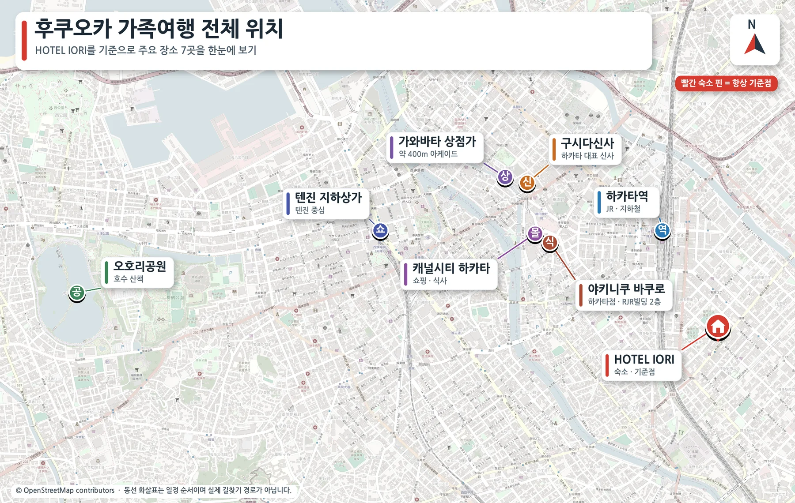<div><svg xmlns="http://www.w3.org/2000/svg" width="17" height="17" viewBox="0 0 24 24" fill="none" stroke="currentColor" stroke-width="2" stroke-linecap="round" stroke-linejoin="round" class="lucide lucide-map-pinned" aria-hidden="true"><path d="M18 8c0 3.613-3.869 7.429-5.393 8.795a1 1 0 0 1-1.214 0C9.87 15.429 6 11.613 6 8a6 6 0 0 1 12 0"></path><circle cx="12" cy="8" r="2"></circle><path d="M8.714 14h-3.71a1 1 0 0 0-.948.683l-2.004 6A1 1 0 0 0 3 22h18a1 1 0 0 0 .948-1.316l-2-6a1 1 0 0 0-.949-.684h-3.712"></path></svg><span><b>빨간 표시는 HOTEL IORI</b><small>각 날짜의 출발·복귀 기준점</small></span></div></div></section><nav class="day-nav" aria-label="날짜별 일정"><a href="#day1"><b>10/2 금</b><small>도착·버스 투어</small></a><a href="#day2"><b>10/3 토</b><small>하카타·바쿠로</small></a><a href="#day3"><b>10/4 일</b><small>오호리·텐진</small></a><a href="#day4"><b>10/5 월</b><small>체크아웃·귀국</small></a><a href="#nearby"><b>첫날 저녁</b><small>식당·마트</small></a></nav><section id="day1" class="day-section"><div class="day-heading"><p class="eyebrow">DAY 1 · 10월 2일 금요일</p><h2>도착 후, 프라이빗 버스로 자연 속으로</h2><p>공항에서 바로 출발해 아프리칸 사파리와 유후인을 둘러봅니다. 첫날은 이미 긴 하루이므로 귀가 후 저녁은 가까운 곳이 정답입니다.</p></div><div class="schedule-wrap"><table class="schedule"><thead><tr><th>시간</th><th>일정</th><th>이동 비교</th><th>비용·비고</th></tr></thead><tbody><tr><td>09:25</td><td>후쿠오카공항 도착</td><td><strong>공항 내 이동·투어 픽업 대기</strong></td><td>항공권 별도</td></tr><tr><td>11:00 전후</td><td>프라이빗 버스 투어 출발</td><td><strong>프라이빗 버스 이용</strong></td><td>투어 비용 결제 완료</td></tr><tr><td>오전~오후</td><td>아프리칸 사파리 + 유후인</td><td><strong>프라이빗 버스 이동</strong></td><td>입장료 포함 여부 업체 확인</td></tr><tr><td>투어 종료 후</td><td>HOTEL IORI 체크인</td><td><strong>버스 하차 후 체크인</strong></td><td>추가 비용 없음</td></tr><tr><td>저녁</td><td>숙소 근처 간단 식사·장보기</td><td><strong>도보 1~5분 / 하카타역 택시 5~8분</strong></td><td>¥500~3,500/인 · 우동집 21:00 마감</td></tr></tbody></table></div><div class="guide-grid two"><article class="place-card"><div class="place-photo">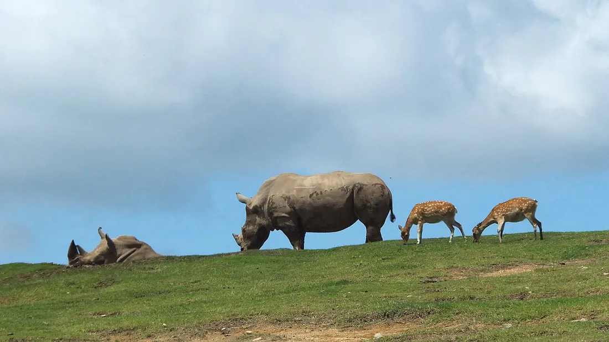<div class="photo-caption"><a href="https://commons.wikimedia.org/wiki/File:%E4%B9%9D%E5%B7%9E%E8%87%AA%E7%84%B6%E5%8B%95%E7%89%A9%E5%85%AC%E5%9C%92%E3%82%A2%E3%83%95%E3%83%AA%E3%82%AB%E3%83%B3%E3%82%B5%E3%83%95%E3%82%A1%E3%83%AA1.jpg">사진 · Wikimedia Commons</a></div></div><div class="place-copy"><p class="eyebrow">첫 번째 목적지</p><h3>아프리칸 사파리</h3><div class="quick-facts"><span><svg xmlns="http://www.w3.org/2000/svg" width="15" height="15" viewBox="0 0 24 24" fill="none" stroke="currentColor" stroke-width="2" stroke-linecap="round" stroke-linejoin="round" class="lucide lucide-clock3 lucide-clock-3" aria-hidden="true"><path d="M12 6v6h4"></path><circle cx="12" cy="12" r="10"></circle></svg>2~3시간</span><span><svg xmlns="http://www.w3.org/2000/svg" width="15" height="15" viewBox="0 0 24 24" fill="none" stroke="currentColor" stroke-width="2" stroke-linecap="round" stroke-linejoin="round" class="lucide lucide-camera" aria-hidden="true"><path d="M13.997 4a2 2 0 0 1 1.76 1.05l.486.9A2 2 0 0 0 18.003 7H20a2 2 0 0 1 2 2v9a2 2 0 0 1-2 2H4a2 2 0 0 1-2-2V9a2 2 0 0 1 2-2h1.997a2 2 0 0 0 1.759-1.048l.489-.904A2 2 0 0 1 10.004 4z"></path><circle cx="12" cy="13" r="3"></circle></svg>정글버스 창가</span></div><ol class="mini-route"><li><b>1</b><span>정글버스 시간이 정해져 있다면 도착 즉시 탑승 장소부터 확인</span></li><li><b>2</b><span>먹이주기는 아이와 어른이 번갈아 체험하고 손은 창밖으로 내밀지 않기</span></li><li><b>3</b><span>동물 교감존은 체력과 남은 시간에 따라 선택</span></li></ol><div class="family-note"><svg xmlns="http://www.w3.org/2000/svg" width="17" height="17" viewBox="0 0 24 24" fill="none" stroke="currentColor" stroke-width="2" stroke-linecap="round" stroke-linejoin="round" class="lucide lucide-baby" aria-hidden="true"><path d="M10 16c.5.3 1.2.5 2 .5s1.5-.2 2-.5"></path><path d="M15 12h.01"></path><path d="M19.38 6.813A9 9 0 0 1 20.8 10.2a2 2 0 0 1 0 3.6 9 9 0 0 1-17.6 0 2 2 0 0 1 0-3.6A9 9 0 0 1 12 3c2 0 3.5 1.1 3.5 2.5s-.9 2.5-2 2.5c-.8 0-1.5-.4-1.5-1"></path><path d="M9 12h.01"></path></svg><span><b>아이와 함께</b>큰 동물을 가까이 보는 정글버스가 핵심입니다. 작은 아이는 놀랄 수 있어 처음에는 창 안쪽 좌석이 편합니다.</span></div><div class="family-note rest"><svg xmlns="http://www.w3.org/2000/svg" width="17" height="17" viewBox="0 0 24 24" fill="none" stroke="currentColor" stroke-width="2" stroke-linecap="round" stroke-linejoin="round" class="lucide lucide-sparkles" aria-hidden="true"><path d="M11.017 2.814a1 1 0 0 1 1.966 0l1.051 5.558a2 2 0 0 0 1.594 1.594l5.558 1.051a1 1 0 0 1 0 1.966l-5.558 1.051a2 2 0 0 0-1.594 1.594l-1.051 5.558a1 1 0 0 1-1.966 0l-1.051-5.558a2 2 0 0 0-1.594-1.594l-5.558-1.051a1 1 0 0 1 0-1.966l5.558-1.051a2 2 0 0 0 1.594-1.594z"></path><path d="M20 2v4"></path><path d="M22 4h-4"></path><circle cx="4" cy="20" r="2"></circle></svg><span><b>쉬어가기</b>야외 이동이 길 수 있으니 물과 간식을 미리 챙기고 화장실은 출발 전에 다녀오세요.</span></div><a class="map-link" href="https://www.google.com/maps/search/?api=1&amp;query=African+Safari+Oita" target="_blank" rel="noreferrer"><svg xmlns="http://www.w3.org/2000/svg" width="16" height="16" viewBox="0 0 24 24" fill="none" stroke="currentColor" stroke-width="2" stroke-linecap="round" stroke-linejoin="round" class="lucide lucide-map-pinned" aria-hidden="true"><path d="M18 8c0 3.613-3.869 7.429-5.393 8.795a1 1 0 0 1-1.214 0C9.87 15.429 6 11.613 6 8a6 6 0 0 1 12 0"></path><circle cx="12" cy="8" r="2"></circle><path d="M8.714 14h-3.71a1 1 0 0 0-.948.683l-2.004 6A1 1 0 0 0 3 22h18a1 1 0 0 0 .948-1.316l-2-6a1 1 0 0 0-.949-.684h-3.712"></path></svg>Google 지도<svg xmlns="http://www.w3.org/2000/svg" width="13" height="13" viewBox="0 0 24 24" fill="none" stroke="currentColor" stroke-width="2" stroke-linecap="round" stroke-linejoin="round" class="lucide lucide-external-link" aria-hidden="true"><path d="M15 3h6v6"></path><path d="M10 14 21 3"></path><path d="M18 13v6a2 2 0 0 1-2 2H5a2 2 0 0 1-2-2V8a2 2 0 0 1 2-2h6"></path></svg></a></div></article><article class="place-card"><div class="place-photo">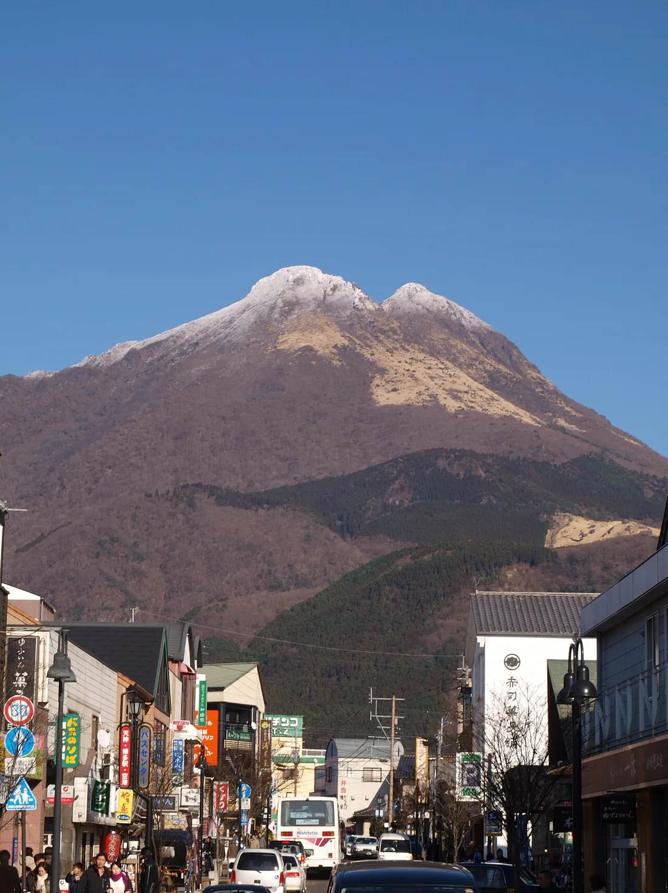<div class="photo-caption"><a href="https://commons.wikimedia.org/wiki/File:Yufuin_and_Mount_Yufu.jpg">사진 · Wikimedia Commons</a></div></div><div class="place-copy"><p class="eyebrow">두 번째 목적지</p><h3>유후인</h3><div class="quick-facts"><span><svg xmlns="http://www.w3.org/2000/svg" width="15" height="15" viewBox="0 0 24 24" fill="none" stroke="currentColor" stroke-width="2" stroke-linecap="round" stroke-linejoin="round" class="lucide lucide-clock3 lucide-clock-3" aria-hidden="true"><path d="M12 6v6h4"></path><circle cx="12" cy="12" r="10"></circle></svg>1.5~2시간</span><span><svg xmlns="http://www.w3.org/2000/svg" width="15" height="15" viewBox="0 0 24 24" fill="none" stroke="currentColor" stroke-width="2" stroke-linecap="round" stroke-linejoin="round" class="lucide lucide-camera" aria-hidden="true"><path d="M13.997 4a2 2 0 0 1 1.76 1.05l.486.9A2 2 0 0 0 18.003 7H20a2 2 0 0 1 2 2v9a2 2 0 0 1-2 2H4a2 2 0 0 1-2-2V9a2 2 0 0 1 2-2h1.997a2 2 0 0 0 1.759-1.048l.489-.904A2 2 0 0 1 10.004 4z"></path><circle cx="12" cy="13" r="3"></circle></svg>긴린코 호수</span></div><ol class="mini-route"><li><b>1</b><span>긴린코 호수부터 짧게 산책해 단체사진 남기기</span></li><li><b>2</b><span>유노츠보 거리로 이동하며 간식·기념품 구경</span></li><li><b>3</b><span>버스 집결 20분 전에는 화장실과 간식 구매 마치기</span></li></ol><div class="family-note"><svg xmlns="http://www.w3.org/2000/svg" width="17" height="17" viewBox="0 0 24 24" fill="none" stroke="currentColor" stroke-width="2" stroke-linecap="round" stroke-linejoin="round" class="lucide lucide-baby" aria-hidden="true"><path d="M10 16c.5.3 1.2.5 2 .5s1.5-.2 2-.5"></path><path d="M15 12h.01"></path><path d="M19.38 6.813A9 9 0 0 1 20.8 10.2a2 2 0 0 1 0 3.6 9 9 0 0 1-17.6 0 2 2 0 0 1 0-3.6A9 9 0 0 1 12 3c2 0 3.5 1.1 3.5 2.5s-.9 2.5-2 2.5c-.8 0-1.5-.4-1.5-1"></path><path d="M9 12h.01"></path></svg><span><b>아이와 함께</b>캐릭터 숍과 아이스크림이 인기지만, 줄이 긴 가게는 과감히 건너뛰는 편이 좋습니다.</span></div><div class="family-note rest"><svg xmlns="http://www.w3.org/2000/svg" width="17" height="17" viewBox="0 0 24 24" fill="none" stroke="currentColor" stroke-width="2" stroke-linecap="round" stroke-linejoin="round" class="lucide lucide-sparkles" aria-hidden="true"><path d="M11.017 2.814a1 1 0 0 1 1.966 0l1.051 5.558a2 2 0 0 0 1.594 1.594l5.558 1.051a1 1 0 0 1 0 1.966l-5.558 1.051a2 2 0 0 0-1.594 1.594l-1.051 5.558a1 1 0 0 1-1.966 0l-1.051-5.558a2 2 0 0 0-1.594-1.594l-5.558-1.051a1 1 0 0 1 0-1.966l5.558-1.051a2 2 0 0 0 1.594-1.594z"></path><path d="M20 2v4"></path><path d="M22 4h-4"></path><circle cx="4" cy="20" r="2"></circle></svg><span><b>쉬어가기</b>8명이 흩어지기 쉬워 호수와 거리 입구에서 만날 시간·장소를 먼저 정하세요.</span></div><a class="map-link" href="https://www.google.com/maps/search/?api=1&amp;query=Yufuin+Oita" target="_blank" rel="noreferrer"><svg xmlns="http://www.w3.org/2000/svg" width="16" height="16" viewBox="0 0 24 24" fill="none" stroke="currentColor" stroke-width="2" stroke-linecap="round" stroke-linejoin="round" class="lucide lucide-map-pinned" aria-hidden="true"><path d="M18 8c0 3.613-3.869 7.429-5.393 8.795a1 1 0 0 1-1.214 0C9.87 15.429 6 11.613 6 8a6 6 0 0 1 12 0"></path><circle cx="12" cy="8" r="2"></circle><path d="M8.714 14h-3.71a1 1 0 0 0-.948.683l-2.004 6A1 1 0 0 0 3 22h18a1 1 0 0 0 .948-1.316l-2-6a1 1 0 0 0-.949-.684h-3.712"></path></svg>Google 지도<svg xmlns="http://www.w3.org/2000/svg" width="13" height="13" viewBox="0 0 24 24" fill="none" stroke="currentColor" stroke-width="2" stroke-linecap="round" stroke-linejoin="round" class="lucide lucide-external-link" aria-hidden="true"><path d="M15 3h6v6"></path><path d="M10 14 21 3"></path><path d="M18 13v6a2 2 0 0 1-2 2H5a2 2 0 0 1-2-2V8a2 2 0 0 1 2-2h6"></path></svg></a></div></article></div></section><section id="nearby" class="day-section nearby-section"><div class="day-heading"><p class="eyebrow">첫날 저녁 · HOTEL IORI 주변</p><h2>멀리 가지 말고, 배와 아침거리부터 채우기</h2><p>무샤무샤는 실제 도보 약 15분으로 확인되어 가까운 후보에서 제외했습니다. 아래 순서는 피로도와 도착 시간에 따른 추천입니다. 영업시간은 2026년 9월 기준으로 확인했습니다.</p></div><div class="route-map compact-map">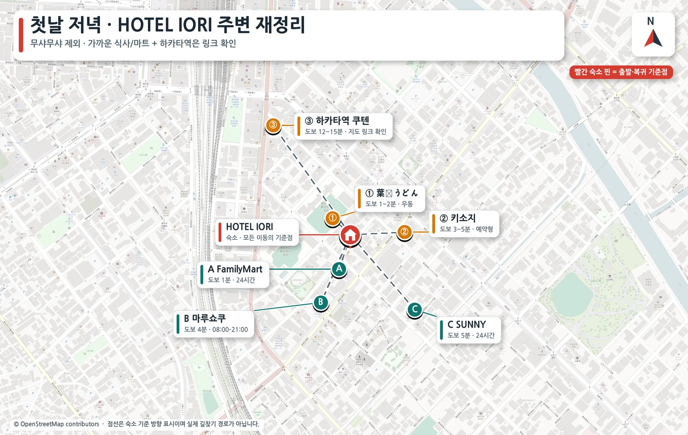</div><div class="choice-grid"><article><span class="choice-num">1</span><div><h3>시티다이닝 쿠텐</h3><p>하카타역 9·10층에 식당이 모여 있어 8명이 메뉴를 고르기 가장 편합니다. 대기가 있어도 대안이 많습니다.</p><b>도보 12~15분 / 택시 5~8분</b><span class="hours">11:00–22:00 (일부 매장 ~24:00) · 연중무휴<br/>매장별로 L.O.가 달라 21시 이후엔 미리 확인</span><a class="map-link" href="https://www.google.com/maps/search/?api=1&amp;query=%E3%82%B7%E3%83%86%E3%82%A3%E3%83%80%E3%82%A4%E3%83%8B%E3%83%B3%E3%82%B0%20%E3%81%8F%E3%81%86%E3%81%A6%E3%82%93%20%E5%8D%9A%E5%A4%9A" target="_blank" rel="noreferrer"><svg xmlns="http://www.w3.org/2000/svg" width="16" height="16" viewBox="0 0 24 24" fill="none" stroke="currentColor" stroke-width="2" stroke-linecap="round" stroke-linejoin="round" class="lucide lucide-map-pinned" aria-hidden="true"><path d="M18 8c0 3.613-3.869 7.429-5.393 8.795a1 1 0 0 1-1.214 0C9.87 15.429 6 11.613 6 8a6 6 0 0 1 12 0"></path><circle cx="12" cy="8" r="2"></circle><path d="M8.714 14h-3.71a1 1 0 0 0-.948.683l-2.004 6A1 1 0 0 0 3 22h18a1 1 0 0 0 .948-1.316l-2-6a1 1 0 0 0-.949-.684h-3.712"></path></svg>Google 지도<svg xmlns="http://www.w3.org/2000/svg" width="13" height="13" viewBox="0 0 24 24" fill="none" stroke="currentColor" stroke-width="2" stroke-linecap="round" stroke-linejoin="round" class="lucide lucide-external-link" aria-hidden="true"><path d="M15 3h6v6"></path><path d="M10 14 21 3"></path><path d="M18 13v6a2 2 0 0 1-2 2H5a2 2 0 0 1-2-2V8a2 2 0 0 1 2-2h6"></path></svg></a></div></article><article><span class="choice-num">2</span><div><h3>葉隠うどん</h3><p>가장 가까운 따뜻한 한 끼. 도착이 늦거나 체력이 없을 때 좋지만 8명은 나눠 앉거나 대기할 수 있습니다.</p><b>도보 약 1~2분 · ¥1,000 안팎</b><span class="hours">11:00–15:00 / 17:00–21:00<br/><em>일요일·공휴일 휴무</em> · 15~17시 브레이크타임 · 예약 불가</span><a class="map-link" href="https://www.google.com/maps/search/?api=1&amp;query=%E8%91%89%E9%9A%A0%E3%81%86%E3%81%A9%E3%82%93%20%E5%8D%9A%E5%A4%9A%E9%A7%85%E5%8D%97" target="_blank" rel="noreferrer"><svg xmlns="http://www.w3.org/2000/svg" width="16" height="16" viewBox="0 0 24 24" fill="none" stroke="currentColor" stroke-width="2" stroke-linecap="round" stroke-linejoin="round" class="lucide lucide-map-pinned" aria-hidden="true"><path d="M18 8c0 3.613-3.869 7.429-5.393 8.795a1 1 0 0 1-1.214 0C9.87 15.429 6 11.613 6 8a6 6 0 0 1 12 0"></path><circle cx="12" cy="8" r="2"></circle><path d="M8.714 14h-3.71a1 1 0 0 0-.948.683l-2.004 6A1 1 0 0 0 3 22h18a1 1 0 0 0 .948-1.316l-2-6a1 1 0 0 0-.949-.684h-3.712"></path></svg>Google 지도<svg xmlns="http://www.w3.org/2000/svg" width="13" height="13" viewBox="0 0 24 24" fill="none" stroke="currentColor" stroke-width="2" stroke-linecap="round" stroke-linejoin="round" class="lucide lucide-external-link" aria-hidden="true"><path d="M15 3h6v6"></path><path d="M10 14 21 3"></path><path d="M18 13v6a2 2 0 0 1-2 2H5a2 2 0 0 1-2-2V8a2 2 0 0 1 2-2h6"></path></svg></a></div></article><article><span class="choice-num">3</span><div><h3>키소지 하카타에키미나미점</h3><p>예약형 일식·샤브샤브. 8명이 편히 앉기 좋지만 가격대는 높습니다.</p><b>도보 약 3~5분 · 예약 권장</b><span class="hours">평일·토 11:00–15:00 / 17:00–21:30 (L.O. 21:00)<br/>일·공휴일 11:00–21:30 통영업 · 연중무휴</span><a class="map-link" href="https://www.google.com/maps/search/?api=1&amp;query=%E6%9C%A8%E6%9B%BD%E8%B7%AF%20%E5%8D%9A%E5%A4%9A%E9%A7%85%E5%8D%97%E5%BA%97" target="_blank" rel="noreferrer"><svg xmlns="http://www.w3.org/2000/svg" width="16" height="16" viewBox="0 0 24 24" fill="none" stroke="currentColor" stroke-width="2" stroke-linecap="round" stroke-linejoin="round" class="lucide lucide-map-pinned" aria-hidden="true"><path d="M18 8c0 3.613-3.869 7.429-5.393 8.795a1 1 0 0 1-1.214 0C9.87 15.429 6 11.613 6 8a6 6 0 0 1 12 0"></path><circle cx="12" cy="8" r="2"></circle><path d="M8.714 14h-3.71a1 1 0 0 0-.948.683l-2.004 6A1 1 0 0 0 3 22h18a1 1 0 0 0 .948-1.316l-2-6a1 1 0 0 0-.949-.684h-3.712"></path></svg>Google 지도<svg xmlns="http://www.w3.org/2000/svg" width="13" height="13" viewBox="0 0 24 24" fill="none" stroke="currentColor" stroke-width="2" stroke-linecap="round" stroke-linejoin="round" class="lucide lucide-external-link" aria-hidden="true"><path d="M15 3h6v6"></path><path d="M10 14 21 3"></path><path d="M18 13v6a2 2 0 0 1-2 2H5a2 2 0 0 1-2-2V8a2 2 0 0 1 2-2h6"></path></svg></a></div></article></div><div class="store-strip"><div><svg xmlns="http://www.w3.org/2000/svg" width="24" height="24" viewBox="0 0 24 24" fill="none" stroke="currentColor" stroke-width="2" stroke-linecap="round" stroke-linejoin="round" class="lucide lucide-shopping-bag" aria-hidden="true"><path d="M16 10a4 4 0 0 1-8 0"></path><path d="M3.103 6.034h17.794"></path><path d="M3.4 5.467a2 2 0 0 0-.4 1.2V20a2 2 0 0 0 2 2h14a2 2 0 0 0 2-2V6.667a2 2 0 0 0-.4-1.2l-2-2.667A2 2 0 0 0 17 2H7a2 2 0 0 0-1.6.8z"></path></svg><span><b>마루쇼쿠 에키미나미점</b><small>도보 4분 · 08:00–21:00 · 도시락·반찬·과일</small></span><a class="map-link" href="https://www.google.com/maps/search/?api=1&amp;query=Marushoku+Ekiminami+Fukuoka" target="_blank" rel="noreferrer"><svg xmlns="http://www.w3.org/2000/svg" width="16" height="16" viewBox="0 0 24 24" fill="none" stroke="currentColor" stroke-width="2" stroke-linecap="round" stroke-linejoin="round" class="lucide lucide-map-pinned" aria-hidden="true"><path d="M18 8c0 3.613-3.869 7.429-5.393 8.795a1 1 0 0 1-1.214 0C9.87 15.429 6 11.613 6 8a6 6 0 0 1 12 0"></path><circle cx="12" cy="8" r="2"></circle><path d="M8.714 14h-3.71a1 1 0 0 0-.948.683l-2.004 6A1 1 0 0 0 3 22h18a1 1 0 0 0 .948-1.316l-2-6a1 1 0 0 0-.949-.684h-3.712"></path></svg>지도<svg xmlns="http://www.w3.org/2000/svg" width="13" height="13" viewBox="0 0 24 24" fill="none" stroke="currentColor" stroke-width="2" stroke-linecap="round" stroke-linejoin="round" class="lucide lucide-external-link" aria-hidden="true"><path d="M15 3h6v6"></path><path d="M10 14 21 3"></path><path d="M18 13v6a2 2 0 0 1-2 2H5a2 2 0 0 1-2-2V8a2 2 0 0 1 2-2h6"></path></svg></a></div><div><svg xmlns="http://www.w3.org/2000/svg" width="24" height="24" viewBox="0 0 24 24" fill="none" stroke="currentColor" stroke-width="2" stroke-linecap="round" stroke-linejoin="round" class="lucide lucide-shopping-bag" aria-hidden="true"><path d="M16 10a4 4 0 0 1-8 0"></path><path d="M3.103 6.034h17.794"></path><path d="M3.4 5.467a2 2 0 0 0-.4 1.2V20a2 2 0 0 0 2 2h14a2 2 0 0 0 2-2V6.667a2 2 0 0 0-.4-1.2l-2-2.667A2 2 0 0 0 17 2H7a2 2 0 0 0-1.6.8z"></path></svg><span><b>SUNNY 에키미나미점</b><small>도보 5분 · 24시간 영업(연중무휴) · 늦은 장보기</small></span><a class="map-link" href="https://www.google.com/maps/search/?api=1&amp;query=Sunny+Ekiminami+Fukuoka" target="_blank" rel="noreferrer"><svg xmlns="http://www.w3.org/2000/svg" width="16" height="16" viewBox="0 0 24 24" fill="none" stroke="currentColor" stroke-width="2" stroke-linecap="round" stroke-linejoin="round" class="lucide lucide-map-pinned" aria-hidden="true"><path d="M18 8c0 3.613-3.869 7.429-5.393 8.795a1 1 0 0 1-1.214 0C9.87 15.429 6 11.613 6 8a6 6 0 0 1 12 0"></path><circle cx="12" cy="8" r="2"></circle><path d="M8.714 14h-3.71a1 1 0 0 0-.948.683l-2.004 6A1 1 0 0 0 3 22h18a1 1 0 0 0 .948-1.316l-2-6a1 1 0 0 0-.949-.684h-3.712"></path></svg>지도<svg xmlns="http://www.w3.org/2000/svg" width="13" height="13" viewBox="0 0 24 24" fill="none" stroke="currentColor" stroke-width="2" stroke-linecap="round" stroke-linejoin="round" class="lucide lucide-external-link" aria-hidden="true"><path d="M15 3h6v6"></path><path d="M10 14 21 3"></path><path d="M18 13v6a2 2 0 0 1-2 2H5a2 2 0 0 1-2-2V8a2 2 0 0 1 2-2h6"></path></svg></a></div><div><svg xmlns="http://www.w3.org/2000/svg" width="24" height="24" viewBox="0 0 24 24" fill="none" stroke="currentColor" stroke-width="2" stroke-linecap="round" stroke-linejoin="round" class="lucide lucide-shopping-bag" aria-hidden="true"><path d="M16 10a4 4 0 0 1-8 0"></path><path d="M3.103 6.034h17.794"></path><path d="M3.4 5.467a2 2 0 0 0-.4 1.2V20a2 2 0 0 0 2 2h14a2 2 0 0 0 2-2V6.667a2 2 0 0 0-.4-1.2l-2-2.667A2 2 0 0 0 17 2H7a2 2 0 0 0-1.6.8z"></path></svg><span><b>FamilyMart</b><small>도보 1분 · 24시간(하카타히가시스미요시점) · 간식·음료</small></span><a class="map-link" href="https://www.google.com/maps/search/?api=1&amp;query=FamilyMart+Hakata+Higashisumiyoshi" target="_blank" rel="noreferrer"><svg xmlns="http://www.w3.org/2000/svg" width="16" height="16" viewBox="0 0 24 24" fill="none" stroke="currentColor" stroke-width="2" stroke-linecap="round" stroke-linejoin="round" class="lucide lucide-map-pinned" aria-hidden="true"><path d="M18 8c0 3.613-3.869 7.429-5.393 8.795a1 1 0 0 1-1.214 0C9.87 15.429 6 11.613 6 8a6 6 0 0 1 12 0"></path><circle cx="12" cy="8" r="2"></circle><path d="M8.714 14h-3.71a1 1 0 0 0-.948.683l-2.004 6A1 1 0 0 0 3 22h18a1 1 0 0 0 .948-1.316l-2-6a1 1 0 0 0-.949-.684h-3.712"></path></svg>지도<svg xmlns="http://www.w3.org/2000/svg" width="13" height="13" viewBox="0 0 24 24" fill="none" stroke="currentColor" stroke-width="2" stroke-linecap="round" stroke-linejoin="round" class="lucide lucide-external-link" aria-hidden="true"><path d="M15 3h6v6"></path><path d="M10 14 21 3"></path><path d="M18 13v6a2 2 0 0 1-2 2H5a2 2 0 0 1-2-2V8a2 2 0 0 1 2-2h6"></path></svg></a></div></div></section><section id="day2" class="day-section"><div class="day-heading"><p class="eyebrow">DAY 2 · 10월 3일 토요일</p><h2>하카타의 옛 거리에서 캐널시티까지</h2><p>구시다신사와 가와바타를 천천히 걸은 뒤 바쿠로에서 점심을 먹고 캐널시티로 이어지는, 동선 낭비가 가장 적은 날입니다.</p></div><div class="route-line"><span>① HOTEL IORI</span><svg xmlns="http://www.w3.org/2000/svg" width="24" height="24" viewBox="0 0 24 24" fill="none" stroke="currentColor" stroke-width="2" stroke-linecap="round" stroke-linejoin="round" class="lucide lucide-arrow-right" aria-hidden="true"><path d="M5 12h14"></path><path d="m12 5 7 7-7 7"></path></svg><span>② 구시다신사</span><svg xmlns="http://www.w3.org/2000/svg" width="24" height="24" viewBox="0 0 24 24" fill="none" stroke="currentColor" stroke-width="2" stroke-linecap="round" stroke-linejoin="round" class="lucide lucide-arrow-right" aria-hidden="true"><path d="M5 12h14"></path><path d="m12 5 7 7-7 7"></path></svg><span>③ 가와바타</span><svg xmlns="http://www.w3.org/2000/svg" width="24" height="24" viewBox="0 0 24 24" fill="none" stroke="currentColor" stroke-width="2" stroke-linecap="round" stroke-linejoin="round" class="lucide lucide-arrow-right" aria-hidden="true"><path d="M5 12h14"></path><path d="m12 5 7 7-7 7"></path></svg><span>④ 바쿠로</span><svg xmlns="http://www.w3.org/2000/svg" width="24" height="24" viewBox="0 0 24 24" fill="none" stroke="currentColor" stroke-width="2" stroke-linecap="round" stroke-linejoin="round" class="lucide lucide-arrow-right" aria-hidden="true"><path d="M5 12h14"></path><path d="m12 5 7 7-7 7"></path></svg><span>⑤ 캐널시티</span></div><div class="route-map">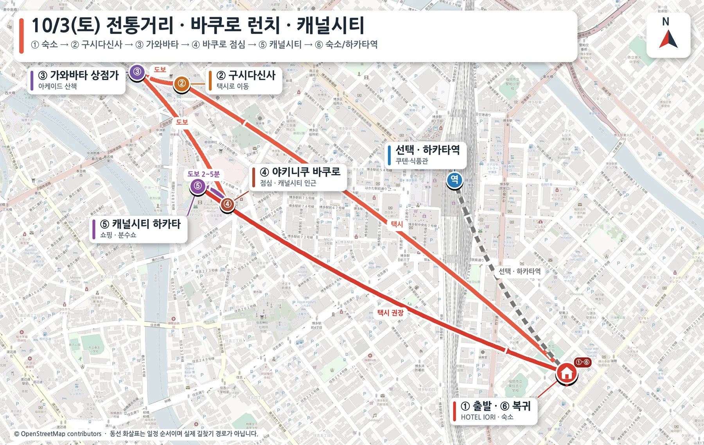</div><div class="schedule-wrap"><table class="schedule"><thead><tr><th>시간</th><th>일정</th><th>이동 비교</th><th>비용·비고</th></tr></thead><tbody><tr><td>10:00</td><td>HOTEL IORI → 구시다신사</td><td><strong>택시 8~12분 / 도보 25~30분</strong></td><td>택시 2대 ¥2,000~2,800</td></tr><tr><td>10:15~11:00</td><td>구시다신사 관람</td><td><strong>경내 도보</strong></td><td>입장 무료</td></tr><tr><td>11:00~11:30</td><td>가와바타 상점가·골목 산책</td><td><strong>도보 3~5분</strong></td><td>관광 무료</td></tr><tr><td>11:30~12:20</td><td>가와바타 → 바쿠로</td><td><strong>도보 8~12분 / 택시 4~6분</strong></td><td>택시 2대 ¥1,400~2,000</td></tr><tr><td>12:30 전후</td><td>야키니쿠 바쿠로 런치</td><td><strong>예약 시간 맞춰 착석</strong></td><td>약 ¥1,500~3,200/성인</td></tr><tr><td>14:00~16:30</td><td>캐널시티 하카타</td><td><strong>바쿠로에서 도보 2~5분</strong></td><td>입장 무료 · 쇼핑 별도</td></tr><tr><td>16:30 전후</td><td>캐널시티 → HOTEL IORI</td><td><strong>택시 6~10분 / 도보 20~25분</strong></td><td>택시 2대 ¥1,800~2,600</td></tr></tbody></table></div><div class="reservation-alert"><svg xmlns="http://www.w3.org/2000/svg" width="24" height="24" viewBox="0 0 24 24" fill="none" stroke="currentColor" stroke-width="2" stroke-linecap="round" stroke-linejoin="round" class="lucide lucide-utensils" aria-hidden="true"><path d="M3 2v7c0 1.1.9 2 2 2h4a2 2 0 0 0 2-2V2"></path><path d="M7 2v20"></path><path d="M21 15V2a5 5 0 0 0-5 5v6c0 1.1.9 2 2 2h3Zm0 0v7"></path></svg><div><b>바쿠로 예약 확인</b><p>런치 11:30~L.O. 14:00 / 디너 17:00~L.O. 21:30 · 부정기 휴무이므로 방문 전 확인이 필요합니다. 동선상 토요일 점심이 가장 효율적입니다. 예약이 10월 4일에서 변경되지 않았다면 바쿠로만 일요일로 유지하고, 토요일은 캐널시티에서 점심을 선택하세요.</p></div><a class="map-link" href="https://www.google.com/maps/search/?api=1&amp;query=Yakiniku+no+Bakuro+Hakata" target="_blank" rel="noreferrer"><svg xmlns="http://www.w3.org/2000/svg" width="16" height="16" viewBox="0 0 24 24" fill="none" stroke="currentColor" stroke-width="2" stroke-linecap="round" stroke-linejoin="round" class="lucide lucide-map-pinned" aria-hidden="true"><path d="M18 8c0 3.613-3.869 7.429-5.393 8.795a1 1 0 0 1-1.214 0C9.87 15.429 6 11.613 6 8a6 6 0 0 1 12 0"></path><circle cx="12" cy="8" r="2"></circle><path d="M8.714 14h-3.71a1 1 0 0 0-.948.683l-2.004 6A1 1 0 0 0 3 22h18a1 1 0 0 0 .948-1.316l-2-6a1 1 0 0 0-.949-.684h-3.712"></path></svg>Google 지도<svg xmlns="http://www.w3.org/2000/svg" width="13" height="13" viewBox="0 0 24 24" fill="none" stroke="currentColor" stroke-width="2" stroke-linecap="round" stroke-linejoin="round" class="lucide lucide-external-link" aria-hidden="true"><path d="M15 3h6v6"></path><path d="M10 14 21 3"></path><path d="M18 13v6a2 2 0 0 1-2 2H5a2 2 0 0 1-2-2V8a2 2 0 0 1 2-2h6"></path></svg></a></div><div class="guide-grid"><article class="place-card"><div class="place-photo">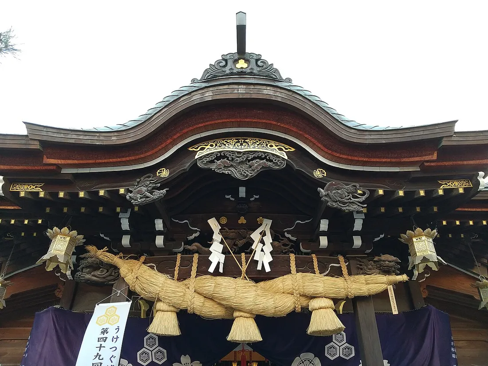<div class="photo-caption"><a href="https://commons.wikimedia.org/wiki/File:Kushida_Shrine_the_shimenawa_of_the_haiden_1-41_Kami-kawabatamachi_Hakata-ku_Fukuoka_20231123.jpg">사진 · Hirho / Commons</a></div></div><div class="place-copy"><p class="eyebrow">하카타의 수호신</p><h3>구시다신사</h3><div class="quick-facts"><span><svg xmlns="http://www.w3.org/2000/svg" width="15" height="15" viewBox="0 0 24 24" fill="none" stroke="currentColor" stroke-width="2" stroke-linecap="round" stroke-linejoin="round" class="lucide lucide-clock3 lucide-clock-3" aria-hidden="true"><path d="M12 6v6h4"></path><circle cx="12" cy="12" r="10"></circle></svg>35~45분</span><span><svg xmlns="http://www.w3.org/2000/svg" width="15" height="15" viewBox="0 0 24 24" fill="none" stroke="currentColor" stroke-width="2" stroke-linecap="round" stroke-linejoin="round" class="lucide lucide-camera" aria-hidden="true"><path d="M13.997 4a2 2 0 0 1 1.76 1.05l.486.9A2 2 0 0 0 18.003 7H20a2 2 0 0 1 2 2v9a2 2 0 0 1-2 2H4a2 2 0 0 1-2-2V9a2 2 0 0 1 2-2h1.997a2 2 0 0 0 1.759-1.048l.489-.904A2 2 0 0 1 10.004 4z"></path><circle cx="12" cy="13" r="3"></circle></svg>배전 앞 시메나와</span></div><ol class="mini-route"><li><b>1</b><span>입구의 손 씻는 곳에서 손과 입을 정갈하게 하기</span></li><li><b>2</b><span>본전에서 가볍게 참배하고 거대한 시메나와 아래 단체사진</span></li><li><b>3</b><span>경내의 장식 야마카사와 하카타 역사 흔적 찾아보기</span></li></ol><div class="family-note"><svg xmlns="http://www.w3.org/2000/svg" width="17" height="17" viewBox="0 0 24 24" fill="none" stroke="currentColor" stroke-width="2" stroke-linecap="round" stroke-linejoin="round" class="lucide lucide-baby" aria-hidden="true"><path d="M10 16c.5.3 1.2.5 2 .5s1.5-.2 2-.5"></path><path d="M15 12h.01"></path><path d="M19.38 6.813A9 9 0 0 1 20.8 10.2a2 2 0 0 1 0 3.6 9 9 0 0 1-17.6 0 2 2 0 0 1 0-3.6A9 9 0 0 1 12 3c2 0 3.5 1.1 3.5 2.5s-.9 2.5-2 2.5c-.8 0-1.5-.4-1.5-1"></path><path d="M9 12h.01"></path></svg><span><b>아이와 함께</b>넓지는 않아 오래 걷지 않아도 됩니다. 동전 하나씩 준비해 직접 참배해 보는 체험이 기억에 남습니다.</span></div><div class="family-note rest"><svg xmlns="http://www.w3.org/2000/svg" width="17" height="17" viewBox="0 0 24 24" fill="none" stroke="currentColor" stroke-width="2" stroke-linecap="round" stroke-linejoin="round" class="lucide lucide-sparkles" aria-hidden="true"><path d="M11.017 2.814a1 1 0 0 1 1.966 0l1.051 5.558a2 2 0 0 0 1.594 1.594l5.558 1.051a1 1 0 0 1 0 1.966l-5.558 1.051a2 2 0 0 0-1.594 1.594l-1.051 5.558a1 1 0 0 1-1.966 0l-1.051-5.558a2 2 0 0 0-1.594-1.594l-5.558-1.051a1 1 0 0 1 0-1.966l5.558-1.051a2 2 0 0 0 1.594-1.594z"></path><path d="M20 2v4"></path><path d="M22 4h-4"></path><circle cx="4" cy="20" r="2"></circle></svg><span><b>쉬어가기</b>무료 관람이며 경내에서 조용히 이동하세요. 사진 촬영 금지 표시는 현장에서 우선 확인합니다.</span></div><a class="map-link" href="https://www.google.com/maps/search/?api=1&amp;query=Kushida+Shrine+Fukuoka" target="_blank" rel="noreferrer"><svg xmlns="http://www.w3.org/2000/svg" width="16" height="16" viewBox="0 0 24 24" fill="none" stroke="currentColor" stroke-width="2" stroke-linecap="round" stroke-linejoin="round" class="lucide lucide-map-pinned" aria-hidden="true"><path d="M18 8c0 3.613-3.869 7.429-5.393 8.795a1 1 0 0 1-1.214 0C9.87 15.429 6 11.613 6 8a6 6 0 0 1 12 0"></path><circle cx="12" cy="8" r="2"></circle><path d="M8.714 14h-3.71a1 1 0 0 0-.948.683l-2.004 6A1 1 0 0 0 3 22h18a1 1 0 0 0 .948-1.316l-2-6a1 1 0 0 0-.949-.684h-3.712"></path></svg>Google 지도<svg xmlns="http://www.w3.org/2000/svg" width="13" height="13" viewBox="0 0 24 24" fill="none" stroke="currentColor" stroke-width="2" stroke-linecap="round" stroke-linejoin="round" class="lucide lucide-external-link" aria-hidden="true"><path d="M15 3h6v6"></path><path d="M10 14 21 3"></path><path d="M18 13v6a2 2 0 0 1-2 2H5a2 2 0 0 1-2-2V8a2 2 0 0 1 2-2h6"></path></svg></a></div></article><article class="place-card"><div class="place-photo"><div class="photo-caption"><a href="https://commons.wikimedia.org/wiki/File:Kawabata-d%C5%8Dri_INT_the_NW_entrance_of_Kawabata_Shopping_Arcade_Kami-kawabatamachi_Hakata-ku_Fukuoka_20231123.jpg">사진 · Wikimedia Commons</a></div></div><div class="place-copy"><p class="eyebrow">비가 와도 편한 아케이드</p><h3>가와바타 상점가</h3><div class="quick-facts"><span><svg xmlns="http://www.w3.org/2000/svg" width="15" height="15" viewBox="0 0 24 24" fill="none" stroke="currentColor" stroke-width="2" stroke-linecap="round" stroke-linejoin="round" class="lucide lucide-clock3 lucide-clock-3" aria-hidden="true"><path d="M12 6v6h4"></path><circle cx="12" cy="12" r="10"></circle></svg>25~40분</span><span><svg xmlns="http://www.w3.org/2000/svg" width="15" height="15" viewBox="0 0 24 24" fill="none" stroke="currentColor" stroke-width="2" stroke-linecap="round" stroke-linejoin="round" class="lucide lucide-camera" aria-hidden="true"><path d="M13.997 4a2 2 0 0 1 1.76 1.05l.486.9A2 2 0 0 0 18.003 7H20a2 2 0 0 1 2 2v9a2 2 0 0 1-2 2H4a2 2 0 0 1-2-2V9a2 2 0 0 1 2-2h1.997a2 2 0 0 0 1.759-1.048l.489-.904A2 2 0 0 1 10.004 4z"></path><circle cx="12" cy="13" r="3"></circle></svg>아케이드 입구</span></div><ol class="mini-route"><li><b>1</b><span>구시다신사 쪽 입구에서 천천히 북쪽으로 걷기</span></li><li><b>2</b><span>하카타 전통 과자·기념품을 구경하되 큰 쇼핑은 마지막 날로 미루기</span></li><li><b>3</b><span>일행이 갈리면 중간의 눈에 띄는 점포를 집결지로 정하기</span></li></ol><div class="family-note"><svg xmlns="http://www.w3.org/2000/svg" width="17" height="17" viewBox="0 0 24 24" fill="none" stroke="currentColor" stroke-width="2" stroke-linecap="round" stroke-linejoin="round" class="lucide lucide-baby" aria-hidden="true"><path d="M10 16c.5.3 1.2.5 2 .5s1.5-.2 2-.5"></path><path d="M15 12h.01"></path><path d="M19.38 6.813A9 9 0 0 1 20.8 10.2a2 2 0 0 1 0 3.6 9 9 0 0 1-17.6 0 2 2 0 0 1 0-3.6A9 9 0 0 1 12 3c2 0 3.5 1.1 3.5 2.5s-.9 2.5-2 2.5c-.8 0-1.5-.4-1.5-1"></path><path d="M9 12h.01"></path></svg><span><b>아이와 함께</b>지붕이 있어 날씨 영향을 덜 받습니다. 간식을 하나 정해 함께 맛보는 정도가 일정 지연을 줄여줍니다.</span></div><div class="family-note rest"><svg xmlns="http://www.w3.org/2000/svg" width="17" height="17" viewBox="0 0 24 24" fill="none" stroke="currentColor" stroke-width="2" stroke-linecap="round" stroke-linejoin="round" class="lucide lucide-sparkles" aria-hidden="true"><path d="M11.017 2.814a1 1 0 0 1 1.966 0l1.051 5.558a2 2 0 0 0 1.594 1.594l5.558 1.051a1 1 0 0 1 0 1.966l-5.558 1.051a2 2 0 0 0-1.594 1.594l-1.051 5.558a1 1 0 0 1-1.966 0l-1.051-5.558a2 2 0 0 0-1.594-1.594l-5.558-1.051a1 1 0 0 1 0-1.966l5.558-1.051a2 2 0 0 0 1.594-1.594z"></path><path d="M20 2v4"></path><path d="M22 4h-4"></path><circle cx="4" cy="20" r="2"></circle></svg><span><b>쉬어가기</b>상점 영업시간이 제각각입니다. 오전에는 일부 매장이 늦게 열 수 있습니다.</span></div><a class="map-link" href="https://www.google.com/maps/search/?api=1&amp;query=Kawabata+Shopping+Arcade+Fukuoka" target="_blank" rel="noreferrer"><svg xmlns="http://www.w3.org/2000/svg" width="16" height="16" viewBox="0 0 24 24" fill="none" stroke="currentColor" stroke-width="2" stroke-linecap="round" stroke-linejoin="round" class="lucide lucide-map-pinned" aria-hidden="true"><path d="M18 8c0 3.613-3.869 7.429-5.393 8.795a1 1 0 0 1-1.214 0C9.87 15.429 6 11.613 6 8a6 6 0 0 1 12 0"></path><circle cx="12" cy="8" r="2"></circle><path d="M8.714 14h-3.71a1 1 0 0 0-.948.683l-2.004 6A1 1 0 0 0 3 22h18a1 1 0 0 0 .948-1.316l-2-6a1 1 0 0 0-.949-.684h-3.712"></path></svg>Google 지도<svg xmlns="http://www.w3.org/2000/svg" width="13" height="13" viewBox="0 0 24 24" fill="none" stroke="currentColor" stroke-width="2" stroke-linecap="round" stroke-linejoin="round" class="lucide lucide-external-link" aria-hidden="true"><path d="M15 3h6v6"></path><path d="M10 14 21 3"></path><path d="M18 13v6a2 2 0 0 1-2 2H5a2 2 0 0 1-2-2V8a2 2 0 0 1 2-2h6"></path></svg></a></div></article><article class="place-card"><div class="place-photo">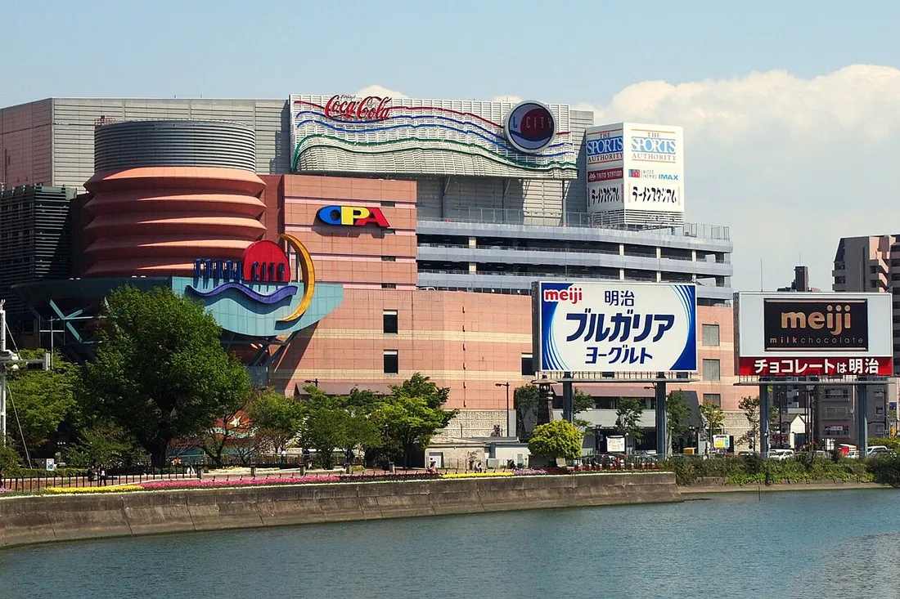<div class="photo-caption"><a href="https://commons.wikimedia.org/wiki/File:Canal_City_Hakata_2011.jpg">사진 · Wikimedia Commons</a></div></div><div class="place-copy"><p class="eyebrow">아이와 어른 모두 쉬어가는 복합시설</p><h3>캐널시티 하카타</h3><div class="quick-facts"><span><svg xmlns="http://www.w3.org/2000/svg" width="15" height="15" viewBox="0 0 24 24" fill="none" stroke="currentColor" stroke-width="2" stroke-linecap="round" stroke-linejoin="round" class="lucide lucide-clock3 lucide-clock-3" aria-hidden="true"><path d="M12 6v6h4"></path><circle cx="12" cy="12" r="10"></circle></svg>2~2.5시간</span><span><svg xmlns="http://www.w3.org/2000/svg" width="15" height="15" viewBox="0 0 24 24" fill="none" stroke="currentColor" stroke-width="2" stroke-linecap="round" stroke-linejoin="round" class="lucide lucide-camera" aria-hidden="true"><path d="M13.997 4a2 2 0 0 1 1.76 1.05l.486.9A2 2 0 0 0 18.003 7H20a2 2 0 0 1 2 2v9a2 2 0 0 1-2 2H4a2 2 0 0 1-2-2V9a2 2 0 0 1 2-2h1.997a2 2 0 0 0 1.759-1.048l.489-.904A2 2 0 0 1 10.004 4z"></path><circle cx="12" cy="13" r="3"></circle></svg>B1F 선플라자</span></div><ol class="mini-route"><li><b>1</b><span>도착하면 B1F 선플라자에서 당일 분수쇼 시간부터 확인</span></li><li><b>2</b><span>쇼핑팀과 카페팀으로 나눠 60~90분 자유시간</span></li><li><b>3</b><span>다시 선플라자에 모여 분수쇼를 보고 호텔로 이동</span></li></ol><div class="family-note"><svg xmlns="http://www.w3.org/2000/svg" width="17" height="17" viewBox="0 0 24 24" fill="none" stroke="currentColor" stroke-width="2" stroke-linecap="round" stroke-linejoin="round" class="lucide lucide-baby" aria-hidden="true"><path d="M10 16c.5.3 1.2.5 2 .5s1.5-.2 2-.5"></path><path d="M15 12h.01"></path><path d="M19.38 6.813A9 9 0 0 1 20.8 10.2a2 2 0 0 1 0 3.6 9 9 0 0 1-17.6 0 2 2 0 0 1 0-3.6A9 9 0 0 1 12 3c2 0 3.5 1.1 3.5 2.5s-.9 2.5-2 2.5c-.8 0-1.5-.4-1.5-1"></path><path d="M9 12h.01"></path></svg><span><b>아이와 함께</b>분수쇼와 캐릭터 숍이 가장 반응이 좋습니다. 층이 복잡하므로 아이가 혼자 에스컬레이터를 타지 않게 주의하세요.</span></div><div class="family-note rest"><svg xmlns="http://www.w3.org/2000/svg" width="17" height="17" viewBox="0 0 24 24" fill="none" stroke="currentColor" stroke-width="2" stroke-linecap="round" stroke-linejoin="round" class="lucide lucide-sparkles" aria-hidden="true"><path d="M11.017 2.814a1 1 0 0 1 1.966 0l1.051 5.558a2 2 0 0 0 1.594 1.594l5.558 1.051a1 1 0 0 1 0 1.966l-5.558 1.051a2 2 0 0 0-1.594 1.594l-1.051 5.558a1 1 0 0 1-1.966 0l-1.051-5.558a2 2 0 0 0-1.594-1.594l-5.558-1.051a1 1 0 0 1 0-1.966l5.558-1.051a2 2 0 0 0 1.594-1.594z"></path><path d="M20 2v4"></path><path d="M22 4h-4"></path><circle cx="4" cy="20" r="2"></circle></svg><span><b>쉬어가기</b>엘리베이터와 화장실이 많아 가족 단위 휴식에 좋습니다. 분수쇼는 변경·취소될 수 있습니다.</span></div><a class="map-link" href="https://www.google.com/maps/search/?api=1&amp;query=Canal+City+Hakata" target="_blank" rel="noreferrer"><svg xmlns="http://www.w3.org/2000/svg" width="16" height="16" viewBox="0 0 24 24" fill="none" stroke="currentColor" stroke-width="2" stroke-linecap="round" stroke-linejoin="round" class="lucide lucide-map-pinned" aria-hidden="true"><path d="M18 8c0 3.613-3.869 7.429-5.393 8.795a1 1 0 0 1-1.214 0C9.87 15.429 6 11.613 6 8a6 6 0 0 1 12 0"></path><circle cx="12" cy="8" r="2"></circle><path d="M8.714 14h-3.71a1 1 0 0 0-.948.683l-2.004 6A1 1 0 0 0 3 22h18a1 1 0 0 0 .948-1.316l-2-6a1 1 0 0 0-.949-.684h-3.712"></path></svg>Google 지도<svg xmlns="http://www.w3.org/2000/svg" width="13" height="13" viewBox="0 0 24 24" fill="none" stroke="currentColor" stroke-width="2" stroke-linecap="round" stroke-linejoin="round" class="lucide lucide-external-link" aria-hidden="true"><path d="M15 3h6v6"></path><path d="M10 14 21 3"></path><path d="M18 13v6a2 2 0 0 1-2 2H5a2 2 0 0 1-2-2V8a2 2 0 0 1 2-2h6"></path></svg></a></div></article></div></section><section id="day3" class="day-section"><div class="day-heading"><p class="eyebrow">DAY 3 · 10월 4일 일요일</p><h2>호수 산책과 텐진의 느긋한 오후</h2><p>오전에는 오호리공원의 물과 나무를 즐기고, 점심 무렵 텐진으로 이동합니다. 오후에는 반드시 호텔 휴식을 넣어 아이와 부모님 체력을 남깁니다.</p></div><div class="route-line"><span>① HOTEL IORI</span><svg xmlns="http://www.w3.org/2000/svg" width="24" height="24" viewBox="0 0 24 24" fill="none" stroke="currentColor" stroke-width="2" stroke-linecap="round" stroke-linejoin="round" class="lucide lucide-arrow-right" aria-hidden="true"><path d="M5 12h14"></path><path d="m12 5 7 7-7 7"></path></svg><span>② 오호리공원</span><svg xmlns="http://www.w3.org/2000/svg" width="24" height="24" viewBox="0 0 24 24" fill="none" stroke="currentColor" stroke-width="2" stroke-linecap="round" stroke-linejoin="round" class="lucide lucide-arrow-right" aria-hidden="true"><path d="M5 12h14"></path><path d="m12 5 7 7-7 7"></path></svg><span>③ 텐진</span><svg xmlns="http://www.w3.org/2000/svg" width="24" height="24" viewBox="0 0 24 24" fill="none" stroke="currentColor" stroke-width="2" stroke-linecap="round" stroke-linejoin="round" class="lucide lucide-arrow-right" aria-hidden="true"><path d="M5 12h14"></path><path d="m12 5 7 7-7 7"></path></svg><span>④ 호텔 휴식</span><svg xmlns="http://www.w3.org/2000/svg" width="24" height="24" viewBox="0 0 24 24" fill="none" stroke="currentColor" stroke-width="2" stroke-linecap="round" stroke-linejoin="round" class="lucide lucide-arrow-right" aria-hidden="true"><path d="M5 12h14"></path><path d="m12 5 7 7-7 7"></path></svg><span>⑤ 하카타역 선택</span></div><div class="route-map">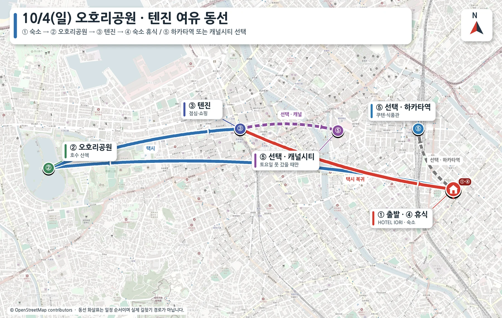</div><div class="schedule-wrap"><table class="schedule"><thead><tr><th>시간</th><th>일정</th><th>이동 비교</th><th>비용·비고</th></tr></thead><tbody><tr><td>09:30</td><td>HOTEL IORI → 오호리공원</td><td><strong>택시 20~25분 / 도보 70분 이상</strong></td><td>택시 2대 ¥4,400~5,600</td></tr><tr><td>10:00~11:20</td><td>오호리공원 산책</td><td><strong>공원 내 도보</strong></td><td>무료 · 일본정원 별도</td></tr><tr><td>11:20 전후</td><td>오호리공원 → 텐진</td><td><strong>택시 10~15분 / 도보 35~40분</strong></td><td>택시 2대 ¥2,400~3,400</td></tr><tr><td>11:30~13:30</td><td>텐진 지하상가·백화점·점심</td><td><strong>지하상가 도보 이동</strong></td><td>관광 무료 · 식사 별도</td></tr><tr><td>13:30 전후</td><td>텐진 → HOTEL IORI</td><td><strong>택시 10~15분 / 대중교통 20~25분</strong></td><td>택시 2대 ¥2,800~3,800</td></tr><tr><td>오후</td><td>호텔 휴식 또는 하카타역 선택</td><td><strong>하카타역 도보 12~15분 / 택시 5~8분</strong></td><td>체력 남을 때만</td></tr></tbody></table></div><div class="guide-grid two"><article class="place-card"><div class="place-photo">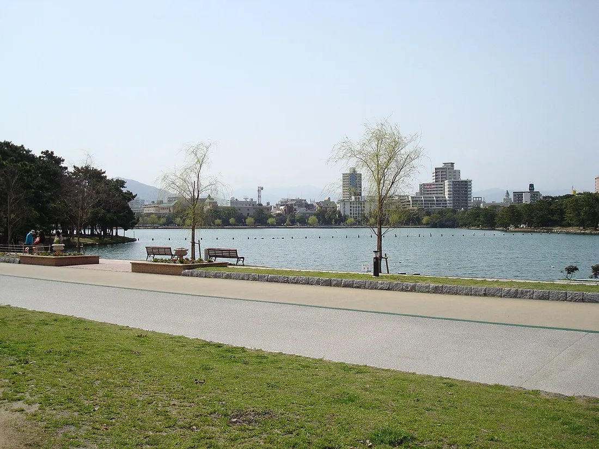<div class="photo-caption"><a href="https://commons.wikimedia.org/wiki/File:%E5%A4%A7%E6%BF%A0%E5%85%AC%E5%9C%92_(3359545709).jpg">사진 · Wikimedia Commons</a></div></div><div class="place-copy"><p class="eyebrow">도심 속 큰 호수</p><h3>오호리공원</h3><div class="quick-facts"><span><svg xmlns="http://www.w3.org/2000/svg" width="15" height="15" viewBox="0 0 24 24" fill="none" stroke="currentColor" stroke-width="2" stroke-linecap="round" stroke-linejoin="round" class="lucide lucide-clock3 lucide-clock-3" aria-hidden="true"><path d="M12 6v6h4"></path><circle cx="12" cy="12" r="10"></circle></svg>60~80분</span><span><svg xmlns="http://www.w3.org/2000/svg" width="15" height="15" viewBox="0 0 24 24" fill="none" stroke="currentColor" stroke-width="2" stroke-linecap="round" stroke-linejoin="round" class="lucide lucide-camera" aria-hidden="true"><path d="M13.997 4a2 2 0 0 1 1.76 1.05l.486.9A2 2 0 0 0 18.003 7H20a2 2 0 0 1 2 2v9a2 2 0 0 1-2 2H4a2 2 0 0 1-2-2V9a2 2 0 0 1 2-2h1.997a2 2 0 0 0 1.759-1.048l.489-.904A2 2 0 0 1 10.004 4z"></path><circle cx="12" cy="13" r="3"></circle></svg>섬과 다리가 보이는 호숫가</span></div><ol class="mini-route"><li><b>1</b><span>호수 전체 2km 완주보다 동쪽 구간을 중심으로 짧게 걷기</span></li><li><b>2</b><span>다리와 섬이 보이는 지점에서 가족사진</span></li><li><b>3</b><span>체력이 남으면 일본정원, 아니면 호숫가 카페에서 휴식</span></li></ol><div class="family-note"><svg xmlns="http://www.w3.org/2000/svg" width="17" height="17" viewBox="0 0 24 24" fill="none" stroke="currentColor" stroke-width="2" stroke-linecap="round" stroke-linejoin="round" class="lucide lucide-baby" aria-hidden="true"><path d="M10 16c.5.3 1.2.5 2 .5s1.5-.2 2-.5"></path><path d="M15 12h.01"></path><path d="M19.38 6.813A9 9 0 0 1 20.8 10.2a2 2 0 0 1 0 3.6 9 9 0 0 1-17.6 0 2 2 0 0 1 0-3.6A9 9 0 0 1 12 3c2 0 3.5 1.1 3.5 2.5s-.9 2.5-2 2.5c-.8 0-1.5-.4-1.5-1"></path><path d="M9 12h.01"></path></svg><span><b>아이와 함께</b>놀이터를 넣으면 산책 시간이 늘어납니다. 아이들이 뛰어놀 경우 어른 한 팀은 카페에서 쉬는 방식이 편합니다.</span></div><div class="family-note rest"><svg xmlns="http://www.w3.org/2000/svg" width="17" height="17" viewBox="0 0 24 24" fill="none" stroke="currentColor" stroke-width="2" stroke-linecap="round" stroke-linejoin="round" class="lucide lucide-sparkles" aria-hidden="true"><path d="M11.017 2.814a1 1 0 0 1 1.966 0l1.051 5.558a2 2 0 0 0 1.594 1.594l5.558 1.051a1 1 0 0 1 0 1.966l-5.558 1.051a2 2 0 0 0-1.594 1.594l-1.051 5.558a1 1 0 0 1-1.966 0l-1.051-5.558a2 2 0 0 0-1.594-1.594l-5.558-1.051a1 1 0 0 1 0-1.966l5.558-1.051a2 2 0 0 0 1.594-1.594z"></path><path d="M20 2v4"></path><path d="M22 4h-4"></path><circle cx="4" cy="20" r="2"></circle></svg><span><b>쉬어가기</b>호수를 전부 돌면 부모님과 아이에게 길 수 있습니다. 40분 산책 + 20분 휴식을 추천합니다.</span></div><a class="map-link" href="https://www.google.com/maps/search/?api=1&amp;query=Ohori+Park+Fukuoka" target="_blank" rel="noreferrer"><svg xmlns="http://www.w3.org/2000/svg" width="16" height="16" viewBox="0 0 24 24" fill="none" stroke="currentColor" stroke-width="2" stroke-linecap="round" stroke-linejoin="round" class="lucide lucide-map-pinned" aria-hidden="true"><path d="M18 8c0 3.613-3.869 7.429-5.393 8.795a1 1 0 0 1-1.214 0C9.87 15.429 6 11.613 6 8a6 6 0 0 1 12 0"></path><circle cx="12" cy="8" r="2"></circle><path d="M8.714 14h-3.71a1 1 0 0 0-.948.683l-2.004 6A1 1 0 0 0 3 22h18a1 1 0 0 0 .948-1.316l-2-6a1 1 0 0 0-.949-.684h-3.712"></path></svg>Google 지도<svg xmlns="http://www.w3.org/2000/svg" width="13" height="13" viewBox="0 0 24 24" fill="none" stroke="currentColor" stroke-width="2" stroke-linecap="round" stroke-linejoin="round" class="lucide lucide-external-link" aria-hidden="true"><path d="M15 3h6v6"></path><path d="M10 14 21 3"></path><path d="M18 13v6a2 2 0 0 1-2 2H5a2 2 0 0 1-2-2V8a2 2 0 0 1 2-2h6"></path></svg></a></div></article><article class="place-card"><div class="place-photo">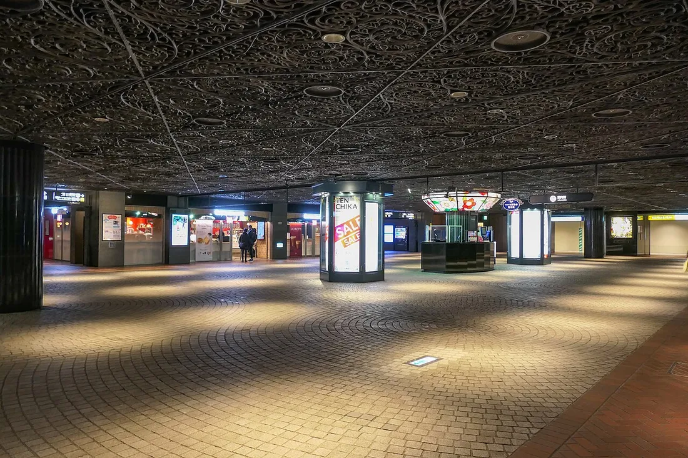<div class="photo-caption"><a href="https://commons.wikimedia.org/wiki/File:Tenjin-underground-mall.jpg">사진 · Wikimedia Commons</a></div></div><div class="place-copy"><p class="eyebrow">날씨 걱정 없는 쇼핑 산책</p><h3>텐진 지하상가</h3><div class="quick-facts"><span><svg xmlns="http://www.w3.org/2000/svg" width="15" height="15" viewBox="0 0 24 24" fill="none" stroke="currentColor" stroke-width="2" stroke-linecap="round" stroke-linejoin="round" class="lucide lucide-clock3 lucide-clock-3" aria-hidden="true"><path d="M12 6v6h4"></path><circle cx="12" cy="12" r="10"></circle></svg>1.5~2시간</span><span><svg xmlns="http://www.w3.org/2000/svg" width="15" height="15" viewBox="0 0 24 24" fill="none" stroke="currentColor" stroke-width="2" stroke-linecap="round" stroke-linejoin="round" class="lucide lucide-camera" aria-hidden="true"><path d="M13.997 4a2 2 0 0 1 1.76 1.05l.486.9A2 2 0 0 0 18.003 7H20a2 2 0 0 1 2 2v9a2 2 0 0 1-2 2H4a2 2 0 0 1-2-2V9a2 2 0 0 1 2-2h1.997a2 2 0 0 0 1.759-1.048l.489-.904A2 2 0 0 1 10.004 4z"></path><circle cx="12" cy="13" r="3"></circle></svg>석조 바닥과 유럽풍 통로</span></div><ol class="mini-route"><li><b>1</b><span>안내도에서 화장실·엘리베이터 위치를 먼저 확인</span></li><li><b>2</b><span>연결 백화점은 한 곳만 선택</span></li><li><b>3</b><span>점심 뒤 30분 자유시간을 주고 같은 안내광장에서 재집결</span></li></ol><div class="family-note"><svg xmlns="http://www.w3.org/2000/svg" width="17" height="17" viewBox="0 0 24 24" fill="none" stroke="currentColor" stroke-width="2" stroke-linecap="round" stroke-linejoin="round" class="lucide lucide-baby" aria-hidden="true"><path d="M10 16c.5.3 1.2.5 2 .5s1.5-.2 2-.5"></path><path d="M15 12h.01"></path><path d="M19.38 6.813A9 9 0 0 1 20.8 10.2a2 2 0 0 1 0 3.6 9 9 0 0 1-17.6 0 2 2 0 0 1 0-3.6A9 9 0 0 1 12 3c2 0 3.5 1.1 3.5 2.5s-.9 2.5-2 2.5c-.8 0-1.5-.4-1.5-1"></path><path d="M9 12h.01"></path></svg><span><b>아이와 함께</b>지하 통로가 길고 출구가 많습니다. 아이에게 호텔 이름이 적힌 메모를 지니게 하고 항상 한 명씩 담당하세요.</span></div><div class="family-note rest"><svg xmlns="http://www.w3.org/2000/svg" width="17" height="17" viewBox="0 0 24 24" fill="none" stroke="currentColor" stroke-width="2" stroke-linecap="round" stroke-linejoin="round" class="lucide lucide-sparkles" aria-hidden="true"><path d="M11.017 2.814a1 1 0 0 1 1.966 0l1.051 5.558a2 2 0 0 0 1.594 1.594l5.558 1.051a1 1 0 0 1 0 1.966l-5.558 1.051a2 2 0 0 0-1.594 1.594l-1.051 5.558a1 1 0 0 1-1.966 0l-1.051-5.558a2 2 0 0 0-1.594-1.594l-5.558-1.051a1 1 0 0 1 0-1.966l5.558-1.051a2 2 0 0 0 1.594-1.594z"></path><path d="M20 2v4"></path><path d="M22 4h-4"></path><circle cx="4" cy="20" r="2"></circle></svg><span><b>쉬어가기</b>비나 더위를 피하기 좋습니다. 쇼핑이 길어지면 호텔 복귀 시간을 14시 이전으로 잡는 것이 안전합니다.</span></div><a class="map-link" href="https://www.google.com/maps/search/?api=1&amp;query=Tenjin+Underground+Mall+Fukuoka" target="_blank" rel="noreferrer"><svg xmlns="http://www.w3.org/2000/svg" width="16" height="16" viewBox="0 0 24 24" fill="none" stroke="currentColor" stroke-width="2" stroke-linecap="round" stroke-linejoin="round" class="lucide lucide-map-pinned" aria-hidden="true"><path d="M18 8c0 3.613-3.869 7.429-5.393 8.795a1 1 0 0 1-1.214 0C9.87 15.429 6 11.613 6 8a6 6 0 0 1 12 0"></path><circle cx="12" cy="8" r="2"></circle><path d="M8.714 14h-3.71a1 1 0 0 0-.948.683l-2.004 6A1 1 0 0 0 3 22h18a1 1 0 0 0 .948-1.316l-2-6a1 1 0 0 0-.949-.684h-3.712"></path></svg>Google 지도<svg xmlns="http://www.w3.org/2000/svg" width="13" height="13" viewBox="0 0 24 24" fill="none" stroke="currentColor" stroke-width="2" stroke-linecap="round" stroke-linejoin="round" class="lucide lucide-external-link" aria-hidden="true"><path d="M15 3h6v6"></path><path d="M10 14 21 3"></path><path d="M18 13v6a2 2 0 0 1-2 2H5a2 2 0 0 1-2-2V8a2 2 0 0 1 2-2h6"></path></svg></a></div></article></div></section><section id="day4" class="day-section final-day"><div class="day-heading"><p class="eyebrow">DAY 4 · 10월 5일 월요일</p><h2>체크아웃, 마지막 쇼핑, 그리고 귀국</h2><p>짐을 호텔에 맡기고 하카타역에서 식사와 마지막 쇼핑을 마친 뒤 공항으로 이동합니다. 국제선 터미널 이동 시간을 넉넉히 잡습니다.</p></div><div class="day4-layout"><div class="schedule-wrap"><table class="schedule"><thead><tr><th>시간</th><th>일정</th><th>이동 비교</th><th>비용·비고</th></tr></thead><tbody><tr><td>10:00</td><td>HOTEL IORI 체크아웃</td><td><strong>호텔 내 이동</strong></td><td>추가 비용 없음</td></tr><tr><td>오전~점심</td><td>하카타역 식사·마지막 쇼핑</td><td><strong>도보 10~13분 / 택시 4~6분</strong></td><td>택시 2대 ¥1,200~1,800</td></tr><tr><td>공항 이동</td><td>하카타역 → 후쿠오카공항</td><td><strong>지하철 5분 + 공항 내 이동 10분 / 택시 15~20분</strong></td><td>지하철 성인 ¥260·아이 ¥130</td></tr><tr><td>출국 전</td><td>국제선 터미널로 이동</td><td><strong>국내선에서 무료 셔틀 약 10분</strong></td><td>항공편 2.5~3시간 전 도착 권장</td></tr></tbody></table></div><div class="station-card">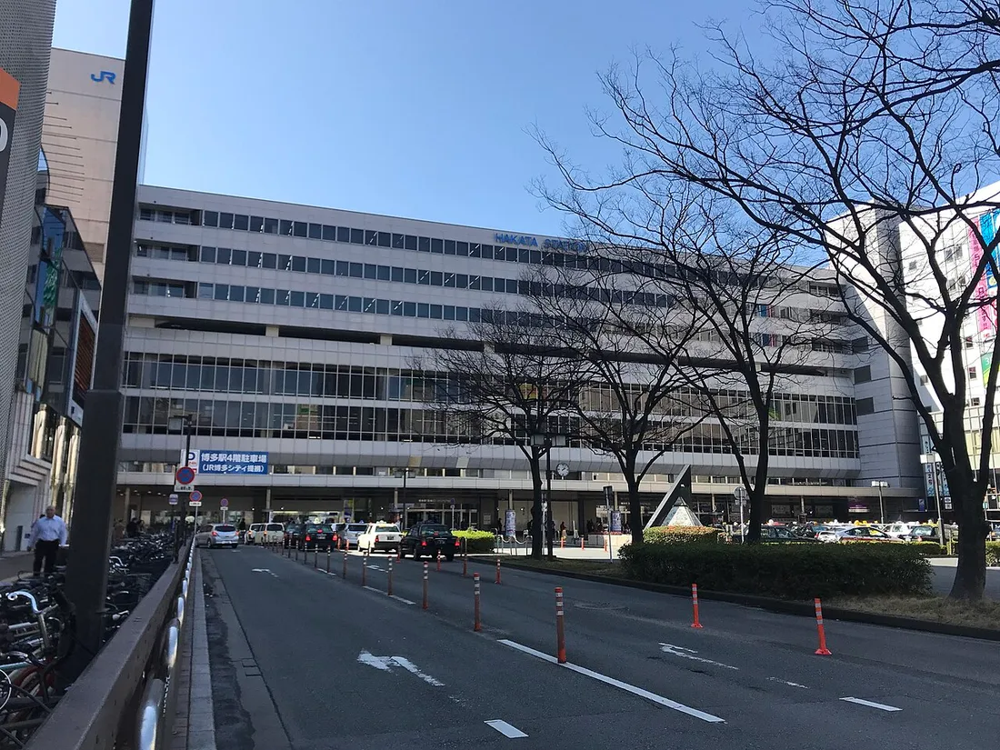<div><p class="eyebrow">마지막 집결지</p><h3>하카타역</h3><p>짐이 많으면 호텔에서 역까지 택시 2대를 이용하세요. 점심과 쇼핑 장소를 같은 건물권으로 묶으면 편합니다. 쿠텐(9·10F)은 11:00 오픈이라 체크아웃 직후에는 데이토스가 빠릅니다 — 하카타멘가도 2F 9:00~, 하카타노고한도코로 B1F 9:30~, 미야게몬 시장 1F 08:00–21:00, 아뮤플라자 매장 10:00–20:00.</p><a class="map-link" href="https://www.google.com/maps/search/?api=1&amp;query=Hakata+Station" target="_blank" rel="noreferrer"><svg xmlns="http://www.w3.org/2000/svg" width="16" height="16" viewBox="0 0 24 24" fill="none" stroke="currentColor" stroke-width="2" stroke-linecap="round" stroke-linejoin="round" class="lucide lucide-map-pinned" aria-hidden="true"><path d="M18 8c0 3.613-3.869 7.429-5.393 8.795a1 1 0 0 1-1.214 0C9.87 15.429 6 11.613 6 8a6 6 0 0 1 12 0"></path><circle cx="12" cy="8" r="2"></circle><path d="M8.714 14h-3.71a1 1 0 0 0-.948.683l-2.004 6A1 1 0 0 0 3 22h18a1 1 0 0 0 .948-1.316l-2-6a1 1 0 0 0-.949-.684h-3.712"></path></svg>Google 지도<svg xmlns="http://www.w3.org/2000/svg" width="13" height="13" viewBox="0 0 24 24" fill="none" stroke="currentColor" stroke-width="2" stroke-linecap="round" stroke-linejoin="round" class="lucide lucide-external-link" aria-hidden="true"><path d="M15 3h6v6"></path><path d="M10 14 21 3"></path><path d="M18 13v6a2 2 0 0 1-2 2H5a2 2 0 0 1-2-2V8a2 2 0 0 1 2-2h6"></path></svg></a><small><a href="https://commons.wikimedia.org/wiki/File:Hakata_Station_20180306.jpg">사진 · Wikimedia Commons</a></small></div></div></div></section><section class="checklist-section"><div><p class="eyebrow">FAMILY CHECKLIST</p><h2>8명이 편하게 움직이는 작은 규칙</h2></div><div class="checklist-grid"><p><svg xmlns="http://www.w3.org/2000/svg" width="24" height="24" viewBox="0 0 24 24" fill="none" stroke="currentColor" stroke-width="2" stroke-linecap="round" stroke-linejoin="round" class="lucide lucide-circle-check" aria-hidden="true"><circle cx="12" cy="12" r="10"></circle><path d="m9 12 2 2 4-4"></path></svg><span><b>택시는 기본 2대</b>목적지 일본어 이름을 두 기사에게 모두 보여주기</span></p><p><svg xmlns="http://www.w3.org/2000/svg" width="24" height="24" viewBox="0 0 24 24" fill="none" stroke="currentColor" stroke-width="2" stroke-linecap="round" stroke-linejoin="round" class="lucide lucide-circle-check" aria-hidden="true"><circle cx="12" cy="12" r="10"></circle><path d="m9 12 2 2 4-4"></path></svg><span><b>집결지를 먼저 정하기</b>시간과 정확한 층·출입구까지 지정</span></p><p><svg xmlns="http://www.w3.org/2000/svg" width="24" height="24" viewBox="0 0 24 24" fill="none" stroke="currentColor" stroke-width="2" stroke-linecap="round" stroke-linejoin="round" class="lucide lucide-circle-check" aria-hidden="true"><circle cx="12" cy="12" r="10"></circle><path d="m9 12 2 2 4-4"></path></svg><span><b>오후 휴식 지키기</b>아이들이 피곤하면 선택 일정은 과감히 생략</span></p><p><svg xmlns="http://www.w3.org/2000/svg" width="24" height="24" viewBox="0 0 24 24" fill="none" stroke="currentColor" stroke-width="2" stroke-linecap="round" stroke-linejoin="round" class="lucide lucide-circle-check" aria-hidden="true"><circle cx="12" cy="12" r="10"></circle><path d="m9 12 2 2 4-4"></path></svg><span><b>전날 다시 확인</b>영업시간·분수쇼·예약시간·당일 교통은 변동 가능</span></p></div></section><footer><div><span>福</span><p><b>후쿠오카 가족여행 2026</b><small>HOTEL IORI를 기준으로 만든 가족용 가이드</small></p></div><p>이동 시간과 택시비는 교통·호출료·정체에 따라 달라질 수 있습니다. 방문 전날 Google 지도로 최종 확인하세요.</p></footer></main>
